The code in this book is tested with Node.js 22. Every listing and its output is produced from the files in the book’s code repository.
JavaScript, Node.js and other names mentioned in this book are trademarks of their owners and are used for identification only.
ISBN: ———
Contents
How to Use This Book6
Part 1: Thinking Like a Programmer
1How Computers Run Programs9
2Thinking in Steps: Algorithms20
3Your Developer Toolkit31
Part 2: Building for the Web
4How the Web Works41
5HTML: The Structure of a Page53
6CSS: Styling a Page74
7Layout with Flexbox and Grid95
Part 3: JavaScript
8Values, Variables and Decisions116
9Loops and Arrays132
10Functions144
11Objects and JSON155
12The DOM and Events166
13Asynchronous JavaScript and fetch182
14Reading Errors and Debugging194
Part 4: Working Like a Professional
15Git and GitHub207
16Accessible Pages for Everyone221
17Project: Build and Publish a Web App237
18Choosing Your Path254
Appendix
Answers to the Exercises267
Before you begin
How to Use This Book
This book is for anyone who has never written a line of code. You do not need to be good at maths, you do not need an expensive computer, and you do not need to know anything about programming. You need curiosity, a little patience, and about an hour a few times a week.
What you need
A computer with Windows, macOS or Linux. A phone or tablet is not enough for writing code, but it is perfect for testing your pages.
A modern web browser, such as Chrome, Edge or Firefox.
Free tools that you will install in Chapter 3: Visual Studio Code and Node.js. Later, in Chapter 15, Git.
How the book is organised
The eighteen chapters are grouped in four parts. Read them in order: each chapter builds on the ones before. Part 1 teaches you to think like a programmer, Part 2 builds web pages with HTML and CSS, Part 3 brings them to life with JavaScript, and Part 4 teaches you to work like a professional and to publish a real app.
Every chapter follows the same pattern: a list of what you will learn, explanations with real examples, a project that uses the new ideas, a table of common mistakes, a summary, and exercises at three levels. Answers to the exercises are at the end of the book.
Reading the examples
Every example in this book is a real file that was run while the book was being made, and every output you see is exactly what it printed. A dark tab above a listing gives the file’s name; create that file in your project folder, type the code yourself, and run it.
A box with three coloured dots at the top shows what appears in the terminal.
In terminal sessions, a line starting with $ is a command for you to type (without the $); the lines below it are the computer’s answer.
A picture in a browser frame shows how a page looks in the browser. The width in the corner tells you how wide the window was.
The boxes
Box
What it contains
Tip
A shortcut or a smarter way of doing something
Watch out
A common trap, and how to avoid it
Did you know?
A true story or fact from the world of computing
Professional habit
How experienced developers work, and why
Try it
A small experiment to do right now, at the keyboard
Quick check
Three short questions in the middle of the chapter, with answers after the summary
Meet Bit
Bit is a small purple robot who loves computers and will walk with you through the whole book. You will find Bit in speech bubbles, welcoming you to new chapters, sharing tricks, and cheering you on before the projects. Bit’s advice is always worth reading.
The code repository
Every example, every project and every exercise answer is also available in the book’s code repository, so you can compare your work or start from a working version when you are stuck. But type the examples yourself first: your fingers learn faster than your eyes.
A word from the author
I wrote this series because I believe anyone can learn to build software, in their own language, with the same quality of teaching that the best books in the world offer. This book exists in English and in Arabic, written for each language rather than translated word for word. Whichever one you are reading, I hope it gives you the confidence to keep building. Welcome, and enjoy the journey.
Soliman Maged Saeed Salah
1
Chapter 1
How Computers Run Programs
In this chapter you will learn
what a program really is
the four main parts inside every computer, and what each one does
why computers store everything, even letters and pictures, as numbers
how the code you write becomes something a processor can run
how to run your very first line of JavaScript
Today you have probably used dozens of programs without thinking about it. Your phone’s alarm woke you up, a map found you the fastest road, and a chat app carried your messages across the world in less than a second. Every one of those programs was written by a person, line by line, using the same basic ideas you will learn in this book.
Bit
Hello! I’m Bit, and I’ll be your guide through this whole book. I love computers, but I promise: you do not need to be good at maths or “a computer person” to learn programming. You only need curiosity and a little patience. Ready?
Before you write any code, it helps to understand what happens inside the machine when a program runs. You do not need to become an engineer. A clear picture in your head is enough, and it will make everything in later chapters easier to understand.
1.1What is a program?
A program is a list of instructions that tells a computer exactly what to do, step by step. You can think of it as a recipe. A recipe says: take two eggs, beat them, heat the pan, pour the eggs in. A program says: read the number the user typed, add 10 to it, show the result on the screen.
There is one big difference between a cook and a computer. A cook understands what you mean. If a recipe says “add some salt”, a cook decides how much. A computer cannot guess. It does exactly what the instructions say, nothing more and nothing less, millions of times per second, without ever getting tired or bored.
That is why programming languages are so precise. Every comma, bracket and quote matters. At first this may feel strict, but it is also what makes computers so reliable: the same program, given the same input, gives the same answer every time.
1.2Inside the computer
Every computer, from a phone to a huge server in a data centre, has the same four main parts.
Figure 1.1: The four main parts of a computer and how information flows between them.
The processor (CPU) is the part that actually follows the instructions. It is very simple-minded: it can add numbers, compare them, and move them around. But it does this billions of times every second.
Memory (RAM) is the processor’s desk. It holds the program that is running and the data it is working on right now. It is very fast, but it forgets everything when the power goes off.
Storage, such as an SSD, is the filing cabinet. It keeps your files, photos and installed programs, even when the computer is off. It is much slower than memory.
Input and output connect the computer to the world: the keyboard, mouse, touch screen and microphone bring information in; the screen and speakers send it out. A network connection does both.
When you open an app, the computer copies the program from storage into memory, and the processor starts following its instructions one by one. When the program needs your name, it waits for input. When it has an answer, it sends output to the screen.
1.3Everything is a number
Here is the most surprising idea in this chapter: inside a computer, everything is stored as numbers. Your messages, your photos, your music and the programs themselves are all, in the end, long lists of numbers.
And not just any numbers. Computers are built from billions of tiny electronic switches, and each switch can be in only two states: off or on. We write these as 0 and 1. One switch is called a bit, short for “binary digit”. Eight bits together make a byte.
Bit
Yes, my name comes from there! A bit is the smallest piece of information a computer can hold. Small, but very important. Just like me.
Counting with only 0 and 1 is called binary. It works just like the decimal counting you know, except that you run out of digits after 1 instead of after 9:
Decimal
Binary
Decimal
Binary
0
0
5
101
1
1
6
110
2
10
7
111
3
11
8
1000
4
100
255
11111111
You will almost never write binary yourself; the computer handles it for you. But JavaScript can show you what a number looks like in binary, and we can check the table:
The toString(2) part means “write this number in base 2”, which is binary. parseInt("1101", 2) goes the other way and reads binary back into a normal number.
Letters are numbers too
If everything is a number, how does a computer store the letter A? It uses an agreed table that gives every character a number. The modern table is called Unicode, and it contains more than 150,000 characters from almost every writing system in the world, including Arabic, Chinese, and even emoji.
Capital A is number 65, small a is 97, and the Arabic letter ب is 1576. The last line goes the other way: the numbers 72 and 105 become the word “Hi”. A photo works the same way: it is a grid of tiny dots, and each dot is stored as three numbers for its red, green and blue light.
1.4From your code to the processor
A processor understands only one language: machine code, which is long sequences of numbers, each one a tiny instruction such as “add these two values”. Writing programs directly in machine code is possible, but painfully slow and easy to get wrong.
So people invented programming languages. A programming language lets you write instructions in a form that is much closer to human language, such as:
if (score > 100) { console.log("You win!"); }
A special program then translates your code into machine code. Some languages translate the whole program in advance, which is called compiling. Others translate and run it as they go, which is called interpreting. Modern JavaScript does a clever mix of both, but the important idea is simple: you write readable code, and a translator turns it into numbers for the processor.
Figure 1.2: A JavaScript engine turns your readable code into machine code.
Why JavaScript?
There are hundreds of programming languages. This book starts with JavaScript for three good reasons:
It is everywhere. Every web browser has a JavaScript engine built in, so you already own everything you need to run it.
It does almost everything. The same language builds websites, servers (with Node.js), mobile apps and even desktop programs.
It is in demand. For many years JavaScript has been one of the most used languages by professional developers around the world.
In this book you will run JavaScript in two places: in the browser, and in the terminal with Node.js, a program that brings the browser’s JavaScript engine to your computer. You will install Node.js in Chapter 3.
1.5Your first line of code
You do not have to wait until Chapter 3 to try JavaScript. Every browser has a hidden tool for developers. Open Chrome, Edge or Firefox, then press F12 (on a Mac, press Cmd + Option + J). A panel opens; click the tab called Console. Type each of these lines and press Enter after each one:
Congratulations: you have just run your first program! Look closely at the last two lines, because they hide a lesson. 2 + 3 adds two numbers and gives 5. But "2" + "3" gives 23. The quotes turn the digits into text, and adding two pieces of text joins them together. You will learn all about this difference in Chapter 8.
1.6What programmers really do
Many people imagine programmers typing fast in a dark room. The real job looks quite different. Most of a programmer’s time goes into:
Understanding the problem. What exactly should happen? What should happen when something goes wrong?
Planning. Breaking a big problem into small steps. This is the subject of Chapter 2.
Writing code, which is often the shortest part.
Testing and fixing. Running the program, finding where it behaves wrongly, and correcting it.
Reading code written by others, or by yourself months ago.
A mistake in a program is called a bug, and finding and fixing it is called debugging. Every programmer writes bugs every day, including the very best. What makes someone a good programmer is not avoiding bugs, but finding and fixing them calmly.
Common misunderstandings
People often think…
In reality…
You must be very good at maths
Most programming needs only basic arithmetic and clear thinking
Computers are smart
Computers are fast and exact, but they only follow instructions
Good programmers do not make mistakes
Good programmers make mistakes all the time and fix them well
You must memorise everything
Professionals look things up every day; understanding matters more than memory
Summary
A program is a precise list of instructions. The computer does exactly what it says.
Every computer has a processor, memory, storage, and input and output.
Everything inside a computer is stored as numbers made of bits; eight bits are a byte.
Letters are numbers too, thanks to Unicode.
Programming languages are translated into machine code by compilers or interpreters.
JavaScript runs in every browser and, with Node.js, on your computer.
Programming is mostly understanding, planning, testing and fixing; mistakes are called bugs.
Practice projects
Each project takes you step by step. Try it on your own first; when you are stuck, read the hint. Your result should look like the output shown, and the full solution is in the book’s code repository.
Project 1.1 · Easy
Your life in numbers
Write a program that tells you how many months, days, hours and minutes you have been alive (roughly).
You will practise: running JavaScript, numbers and the * operator, and printing several values.
Create a file called my-numbers.js in your code-from-zero folder, or open the browser console.
Write const age = 20; on the first line, with your own age instead of 20.
Print the number of months: console.log("Months:", age * 12);. Notice that console.log can print a label and a number together, separated by a comma.
Add three more lines for days (age * 365), hours and minutes. Each one multiplies the line before by a little more.
Run the program and check one answer with a calculator.
Hint: hours are days × 24, and minutes are hours × 60, so the minutes line is age * 365 * 24 * 60.
Turn a name into secret numbers, and the numbers back into the name, using the Unicode table from Section 1.3.
You will practise:charCodeAt, String.fromCharCode and the idea that letters are numbers.
Print the Unicode number of each letter of Bit: "B".charCodeAt(0), then "i", then "t", all in one console.log separated by commas.
Now decode: String.fromCharCode(66, 105, 116) should print the name again.
The Arabic name بِت has three characters too: the letter ب, the small vowel mark under it (a kasra), and ت. Their numbers are 1576, 1616 and 1578. Decode them the same way.
Send a friend a “secret message” as numbers and ask them to decode it with the browser console.
Hint: vowel marks such as the kasra are separate characters in Unicode, with their own numbers. That is why the Arabic name needs three numbers even though you see two letters.
Your result should look like this:
Terminal
66 105 116
Bit
بِت
Project 1.3 · Medium
Your birthday in binary
Show the day, month and year of a birthday in binary, and check the result by turning it back.
You will practise:toString(2), parseInt and checking your own work.
Create three constants: day, month and year, with a birthday you like.
Print each one in binary with .toString(2), with a label.
Before running the program, work out the day in binary on paper, using the table in Section 1.3. Did you get the same answer as the computer?
Prove that the conversion is correct: turn the year’s binary back into a normal number with parseInt(year.toString(2), 2). It must print the year again.
Hint: checking a result by converting it back is a habit professionals use everywhere: encode and decode, save and load, send and receive.
Your result should look like this (for 14 March 2008):
Terminal
Day in binary: 1110
Month in binary: 11
Year in binary: 11111011000
Check, back to decimal: 2008
Exercises
Easy Name the four main parts of a computer, and give one example of input and one of output.
Easy Using the table in Section 1.3, what is 9 in binary? Check your answer with (9).toString(2) in the browser console.
Medium Find the Unicode number of the first letter of your name with "X".charCodeAt(0), replacing X with your letter.
Medium Predict what each line prints, then check in the console: console.log(10 + 5), console.log("10" + "5"), console.log("10 + 5").
Challenge Write the steps for making a cup of tea so precisely that a robot who knows nothing could follow them. Then ask a friend to find a step a robot could misunderstand.
Answers to the exercises are at the end of the book and in the book’s code repository.
Coming up in Chapter 2
Exercise 5 is a taste of the next chapter. Before programmers write code, they plan the steps. In Chapter 2 you will learn to turn any problem into a clear list of steps, called an algorithm, and to check that it works before you type a single line.
2
Chapter 2
Thinking in Steps: Algorithms
In this chapter you will learn to
explain what an algorithm is, and what makes a good one
break a big problem into small, clear steps
write your plan as pseudocode and draw it as a flowchart
recognise the three building blocks of every program
test an algorithm by hand before you write any code
Imagine giving someone directions to your home. If you say “go straight, then turn somewhere near the big shop”, they will probably get lost. If you say “walk 200 metres to the traffic lights, turn left, and stop at the third door on the right”, they will arrive. Programming is mostly the skill of giving the second kind of directions.
Bit
Here’s a secret: the best programmers often spend more time thinking with a pen and paper than typing. In this chapter we will not worry about the details of JavaScript. We will learn how to think. The code will feel much easier afterwards.
2.1What is an algorithm?
An algorithm is a step-by-step method for solving a problem. A recipe is an algorithm for a meal. The method you learned at school for long division is an algorithm. The steps a map app follows to find the fastest road are an algorithm too, just a much bigger one.
A good algorithm has four qualities:
Quality
What it means
Bad example
Precise
Every step has exactly one meaning
“Add a little sugar”
Ordered
The steps happen in a clear order
Pouring the tea before boiling the water
Finite
It always finishes
“Keep stirring”, with no point at which to stop
Correct
It gives the right answer for every possible input
A method that works for 3 cards but not for 1
2.2Breaking a problem down
Big problems feel impossible until you split them into small ones. Programmers call this decomposition. Let us practise on a real task.
The problem: you have a pile of numbered cards, face down. You want to find the card with the largest number.
How would you do it, with real cards? Most people do something like this: turn over the first card and remember its number. Then look at each of the other cards in turn. Whenever a card is bigger than the one you remember, remember the new card instead. When there are no more cards, the one you remember is the largest.
That is already an algorithm. Notice what made it work: you only ever had to remember one number, the largest so far. That small idea is what makes the problem easy for a computer, too.
2.3Pseudocode: planning in plain language
Pseudocode is a way of writing an algorithm in simple, structured language before you turn it into real code. There are no strict rules; it only needs to be clear. Here is our card algorithm as pseudocode:
set LARGEST to the first card
for each CARD in the pile:
if CARD is bigger than LARGEST:
set LARGEST to CARD
show LARGEST
Pseudocode lets you focus on the idea without worrying about commas and brackets. Many professional teams write pseudocode, or simply a list of steps in a comment, before writing a tricky piece of code.
2.4Flowcharts: drawing the plan
Some people think better with pictures. A flowchart draws an algorithm as boxes connected by arrows. Rounded boxes show the start and end, rectangles show actions, and diamonds show questions with yes or no answers.
Figure 2.1: The card algorithm as a flowchart. Follow the arrows with your finger for the cards 7, 3 and 12.
Flowcharts are wonderful for small algorithms and for explaining your idea to someone else. For big programs they become too large, and pseudocode or real code is clearer.
2.5The three building blocks
Here is one of the most important facts in computer science: every program, however large, is built from just three kinds of step.
Sequence: do this, then this, then this, in order.
Selection: if something is true, do this; otherwise, do that. (You will learn this properly in Chapter 8.)
Repetition: do this again and again, for each item or until something happens. (This is Chapter 9.)
A simple program that uses only sequence looks like this. It works out the average of three test scores:
average.js
// Sequence: each step runs once, in order.const first = 8;
const second = 6;
const third = 10;
const total = first + second + third;
const average = total / 3;
console.log(`Average: ${average}`);
Terminal
Average: 8
Every line runs exactly once, from top to bottom. Our card algorithm needs all three blocks: it runs steps in sequence, it selects (“if this card is bigger”), and it repeats (“for each card”).
2.6From pseudocode to JavaScript
Now the exciting part. Look at the pseudocode from Section 2.3 again, and then at the same algorithm written in JavaScript:
largest.js
const cards = [7, 3, 12, 5, 9];
let largest = cards[0];
for (const card of cards) {
if (card > largest) {
largest = card;
}
}
console.log(`The largest card is ${largest}`);
Terminal
The largest card is 12
You have not learned all of this syntax yet, and that is fine. Put the two versions side by side and you can see that the code follows the plan line by line:
Pseudocode
JavaScript
set LARGEST to the first card
let largest = cards[0];
for each CARD in the pile
for (const card of cards)
if CARD is bigger than LARGEST
if (card > largest)
set LARGEST to CARD
largest = card;
show LARGEST
console.log(…)
This is how professionals work. The thinking happens in the plan; the code is a translation of the plan into a language the computer understands. When the plan is clear, the translation is easy.
2.7Testing by hand: the trace table
How do you know an algorithm is correct before you run it? You trace it: you pretend to be the computer, and you write down the value of every variable after every step. Here is a trace of our algorithm with the cards 7, 3, 12, 5 and 9:
Step
card
card > largest?
largest
start
–
–
7
1
7
no
7
2
3
no
7
3
12
yes
12
4
5
no
12
5
9
no
12
The final value is 12, which is correct. A good tester also tries the unusual cases. What if there is only one card? What if the largest card is first, or last? What if two cards are equal? Try each one in your head with the trace table. You will find that this algorithm handles them all.
2.8A taste of efficiency
Two algorithms can both be correct, while one is enormously faster. Imagine a phone book with a million names in alphabetical order, and you want to find “Omar”.
Method 1: read the names one by one from the start. In the worst case you read all one million.
Method 2: open the book in the middle. If “Omar” comes before that page, throw away the second half; otherwise throw away the first half. Repeat with the half that is left. Each step halves the problem. How many steps does it take? Let the computer count:
halving.js
let names = 1000000;
let steps = 0;
while (names > 1) {
names = Math.ceil(names / 2);
steps = steps + 1;
}
console.log(`Steps needed: ${steps}`);
Terminal
Steps needed: 20
Twenty steps instead of a million! This method is called binary search, and it only works because the names are sorted. Choosing the right algorithm often matters far more than having a fast computer. You will meet this idea again throughout the senior books in this series.
Bit
Twenty steps for a million names, and only thirty for a billion! Every time the list doubles, binary search needs just one more step. That is the power of a good idea.
Summary
An algorithm is a precise, ordered, finite and correct list of steps for solving a problem.
Decomposition means breaking a big problem into small ones. Solving it by hand first often shows you the steps.
Pseudocode and flowcharts let you plan without worrying about syntax.
Every program is built from sequence, selection and repetition.
Code is a translation of the plan. When the plan is clear, the code is easy.
A trace table tests an algorithm by hand. Always try unusual cases, especially the empty one.
A better algorithm, such as binary search, can be millions of times faster.
Quick check answers: 1. Sequence, selection and repetition. 2. Because only the largest card seen so far can matter; any smaller card can never be the answer. 3. Because throwing away half the list only works when you know the name must be in the other half, and that is true only when the list is sorted.
Practice projects
In these projects you plan first and code second, exactly as this chapter teaches. Write your pseudocode on paper before you open the editor.
Project 2.1 · Easy
The cheapest product
A shopper wants the cheapest item in a list of prices. Plan the algorithm, test it by hand, then turn it into JavaScript.
You will practise: decomposition, pseudocode, trace tables, and translating a plan into code.
Write the pseudocode. Start from the largest-card algorithm in Section 2.3: what is the one word you need to change?
Make a trace table for the prices 42, 18, 35, 9 and 27, with the columns “price”, “price < cheapest?” and “cheapest”.
Copy largest.js from Section 2.6 into a new file, cheapest.js, and change it to follow your pseudocode. Rename the variables so that they say what they mean.
Run it, and compare the answer with the last line of your trace table.
Hint: only the comparison changes: < instead of >. Good names, like cheapest instead of largest, make the code tell the truth.
Your result should look like this:
Terminal
The cheapest price is 9
Project 2.2 · Medium
Guess my number
A friend thinks of a number from 1 to 100 and answers only “too high” or “too low”. Write the strategy that always wins in at most seven guesses, and let the computer play it.
You will practise: binary search, keeping track of a range, and repetition.
Play the game with a friend, on paper. Always guess the middle of the numbers that are still possible. Write down each guess.
Write the strategy as pseudocode with two values, LOW and HIGH. What happens to them after “too low”? After “too high”?
Type the solution below into guess.js. It uses a while loop and break, which you will learn properly in Chapter 9; for now, follow the shape: repeat: guess the middle; if right, stop; otherwise move LOW or HIGH.
Change secret to other numbers, such as 1, 100 and 64. Does it ever need more than seven guesses?
const secret = 73;
let low = 1;
let high = 100;
let tries = 0;
while (true) {
const guess = Math.floor((low + high) / 2);
tries++;
if (guess === secret) {
console.log(`Guess ${tries}: ${guess}. Got it!`);
break;
}
if (guess < secret) {
console.log(`Guess ${tries}: ${guess}, too low`);
low = guess + 1;
} else {
console.log(`Guess ${tries}: ${guess}, too high`);
high = guess - 1;
}
}
Hint:Math.floor rounds down, so the middle of 1 and 100 is 50, not 50.5. Seven guesses are always enough because 27 = 128, which is more than 100.
Your result should look like this:
Terminal
Guess 1: 50, too low
Guess 2: 75, too high
Guess 3: 62, too low
Guess 4: 68, too low
Guess 5: 71, too low
Guess 6: 73. Got it!
Project 2.3 · Challenge
Sort three cards
Put three numbers in order from smallest to largest, using only comparisons and swaps, the way a sorting machine does.
You will practise: designing an algorithm, testing every case, and thinking about correctness.
Take three cards and sort them by hand, only ever comparing two neighbours and swapping them if they are in the wrong order. How many comparisons do you need?
Write the steps as pseudocode: “if A > B, swap A and B”, and so on.
Test your algorithm by hand on all six possible orders of 1, 2 and 3. A correct algorithm must sort every one of them.
Write it in JavaScript. A neat way to swap two variables is [a, b] = [b, a];.
Hint: compare A with B, then B with C (now the largest is at the end), then A with B again. Three comparisons are enough for three numbers.
Your result should look like this (for 12, 3 and 7):
Terminal
3 7 12
Exercises
Easy Write pseudocode for finding the smallest card. What do you need to change from the largest-card algorithm?
Easy Draw a flowchart for crossing a road at traffic lights.
Medium Write pseudocode that counts how many cards are bigger than 5. Trace it with the cards 7, 3, 12, 5, 9. (The answer should be 3.)
Medium Using binary search, how many steps do you need for 1,000 names? Change halving.js to check your answer.
Challenge Write pseudocode that finds both the largest and the second-largest card in one pass through the pile. Trace it with 7, 3, 12, 5, 9, and then with 12, 12, 4.
Answers to the exercises are at the end of the book and in the book’s code repository.
Coming up in Chapter 3
You now know how to think like a programmer. Next you will set up the tools that professionals use every day: a code editor, the terminal and Node.js, so you can turn your plans into programs on your own computer.
3
Chapter 3
Your Developer Toolkit
In this chapter you will
install and set up Visual Studio Code, a free professional code editor
learn the handful of terminal commands every developer uses daily
install Node.js and run a JavaScript file on your own computer
create the project folder you will use for the rest of this book
meet the browser’s developer tools and learn where to find good help
A carpenter needs a saw, a hammer and a tape measure before building anything. A programmer needs tools too, and the good news is that the best ones are free. By the end of this chapter your computer will be set up exactly like a professional developer’s, and every example in this book will run on it.
Bit
Setting up tools is the one part of programming that feels a bit boring. But you only do it once! Follow along step by step, and if something looks different on your screen, don’t worry: menus move around between versions, but the ideas stay the same.
3.1The code editor
You could write code in any plain text program, but a code editor makes life much easier. It colours your code so you can read it, warns you about mistakes as you type, completes long words for you, and can run your programs without leaving the window.
This book uses Visual Studio Code, usually called VS Code. It is free, it works on Windows, macOS and Linux, and it is the most popular editor among professional developers.
Go to code.visualstudio.com and download the version for your computer.
Install it like any other program. On Windows, tick the option Add to PATH if you see it.
Open VS Code. You will see a welcome page, which you can close.
A quick tour
Figure 3.1: The four areas of VS Code: (1) the activity bar, (2) the Explorer with your files, (3) the editor, and (4) the built-in terminal.
The activity bar on the far side switches between views: files, search, Git and extensions.
The Explorer shows the files in your project folder.
The editor is where you write code. You can open several files in tabs.
The terminal panel lets you run commands without leaving VS Code. Open it from the menu View → Terminal.
Settings that help beginners
Open the extensions view, search for Prettier and click Install. Prettier is a formatter: every time you save, it neatly arranges spaces and line breaks in your code, so you never have to worry about them. Then open the settings file with Ctrl + Shift + P (Cmd + Shift + P on a Mac), type Open User Settings (JSON), and add these lines:
These settings make the text bigger, format your code on every save, save files automatically when you switch windows, and wrap long lines so you never have to scroll sideways.
3.2The terminal
The terminal (also called the command line or shell) is a window where you control the computer by typing commands instead of clicking. It may look old-fashioned, but every professional developer uses it every day. It is faster than clicking, and many tools, including Node.js, are used mainly from the terminal.
You can open it inside VS Code, or on its own:
Windows: open Terminal (or PowerShell) from the Start menu.
macOS: press Cmd + Space, type Terminal, and press Enter.
Linux: press Ctrl + Alt + T on most systems.
The terminal shows a prompt, often ending in $ or >, and waits for you to type. In this book, a line that starts with $ is a command for you to type (without the $), and the lines below it are what the computer answers.
Five commands you need
terminal
$ pwd
/Users/sara
$ ls
Desktop Documents Downloads code-from-zero
$ cd code-from-zero$ pwd
/Users/sara/code-from-zero
$ cd ..
Command
What it does
Example
pwd
Shows which folder you are in (“print working directory”)
pwd
ls
Lists the files and folders here
ls
cd
Changes into another folder; cd .. goes up one level
cd code-from-zero
mkdir
Makes a new folder
mkdir my-app
clear
Clears the screen
clear
These five commands work the same in the macOS and Linux terminals and in Windows PowerShell, so you can follow this book on any computer.
3.3Installing Node.js
In Chapter 1 you ran JavaScript in the browser. Node.js lets you run JavaScript files directly on your computer from the terminal. You will use it for most of the examples in this book.
Go to nodejs.org.
Download the version marked LTS, which stands for “Long Term Support”. It is the stable version that companies use.
Run the installer and accept the default options.
Close and reopen your terminal, so it notices the new program.
Check that everything works by asking for the version numbers:
terminal
$ node --version
v22.12.0
$ npm --version
10.9.0
Your numbers will probably be different, and that is fine. Any LTS version from 22 upwards will run every example in this book. npm was installed together with Node.js; it is the tool for adding ready-made code packages to a project, and you will meet it in later chapters.
3.4Your first project
Developers keep each project in its own folder. Let us create the folder you will use for every example in this book:
terminal
# Make a folder for the book, go into it, and open it in VS Code$ mkdir code-from-zero$ cd code-from-zero$ code .
The last command, code ., opens the current folder in VS Code. The dot means “this folder”. (On a Mac, if code is not found, open VS Code, press Cmd + Shift + P and run Shell Command: Install ‘code’ command in PATH.)
In the VS Code Explorer, click the New File icon, name the file check.js, and type:
check.js
console.log("Node.js is working!");
console.log(`2 + 2 = ${2 + 2}`);
Save it, open the terminal panel in VS Code, and run it:
terminal
$ node check.js
Node.js is working!
2 + 2 = 4
If you see those two lines, your toolkit is complete. You wrote a file, saved it, and asked Node.js to run it. That is exactly how professional developers work all day long.
Bit
You did it! From now on, whenever you see a file name above a listing in this book, create that file in your code-from-zero folder and run it with node and the file name.
3.5The browser’s developer tools
You already opened the browser’s developer tools (DevTools) in Chapter 1 with F12. They contain much more than the console. The three tabs you will use most are:
Tab
What you can do there
Used in
Elements
See and edit the HTML and CSS of any page, live
Chapters 5 to 7
Console
Run JavaScript and see messages and errors
All JavaScript chapters
Network
Watch every file and request the page loads
Chapters 4 and 13
3.6Where to find good help
No developer remembers everything. Knowing where to look is a professional skill:
MDN Web Docs (developer.mozilla.org) is the most trusted reference for HTML, CSS and JavaScript. It explains every feature with examples. When you search the web, add “mdn” to your search.
Error messages are help too. Copy the main line of an error into a search engine; someone has almost always had the same problem before. Chapter 14 teaches you to read errors properly.
Q&A sites and forums, such as Stack Overflow, have answers to millions of questions. Check the date of an answer, because old answers may describe outdated ways of working.
AI assistants can explain an idea in different words or help you understand an error. Use them as a patient tutor, not as a replacement for thinking: type the code yourself, and always test that it really works.
3.7Small habits, big difference
Name files in lowercase, with dashes instead of spaces:ticket-kiosk.js, not Ticket Kiosk.js. Spaces in names cause trouble in the terminal and on web servers.
One folder per project, and nothing unrelated inside it.
Learn a few keyboard shortcuts. They save hours over a year:
Action
Windows and Linux
macOS
Save
Ctrl + S
Cmd + S
Undo
Ctrl + Z
Cmd + Z
Comment a line on or off
Ctrl + /
Cmd + /
Open or close the terminal
Ctrl + `
Ctrl + `
Command palette
Ctrl + Shift + P
Cmd + Shift + P
Summary
VS Code is a free, professional code editor. Prettier formats your code on every save.
The terminal controls the computer with typed commands. Start with pwd, ls, cd, mkdir and clear, plus the Up arrow and Tab.
Node.js runs JavaScript files on your computer: node file.js. Install the LTS version.
Keep each project in its own folder, and name files in lowercase with dashes.
The browser’s DevTools let you inspect pages, run JavaScript and watch network requests.
MDN is the best reference. Ask questions with what you tried, what you expected and what happened.
Practice projects
These projects make your new tools feel natural. Do them with the keyboard as much as you can: speed with the terminal and the editor comes from practice, not from reading.
Project 3.1 · Easy
A folder for your notes, terminal only
Create a folder structure for your notes on this book, moving around it using only the terminal.
You will practise:cd, mkdir, ls, pwd, the Up arrow and Tab.
Open the terminal and go into code-from-zero.
Create a folder called book-notes and go into it.
Create four folders, part-1 to part-4, with one command: mkdir accepts several names separated by spaces.
Go into part-1, check where you are with pwd, and come back up two levels with cd .. twice.
Use the Up arrow to repeat a command, and Tab to complete a folder name, at least once each.
Hint: if you get lost, pwd always tells you where you are. Your folder paths will start differently, depending on your computer and your user name.
Your terminal should look like this:
terminal
$ cd code-from-zero$ mkdir book-notes$ cd book-notes$ mkdir part-1 part-2 part-3 part-4$ ls
part-1 part-2 part-3 part-4
$ cd part-1$ pwd
/Users/sara/code-from-zero/book-notes/part-1
$ cd ..$ cd ..$ pwd
/Users/sara/code-from-zero
Project 3.2 · Easy
Quote of the day
Write a small program that prints an encouraging programming quote, and run it from VS Code’s own terminal.
You will practise: creating and running files, the VS Code terminal, Prettier, and a first look at lists.
In VS Code, create quote.js in your code-from-zero folder.
Write a list of four quotes between square brackets, separated by commas, as in the solution below. You will learn lists properly in Chapter 9.
Print a title, then quotes[today], where today is a number from 0 to 3.
Mess up the spacing on purpose, then save: watch Prettier tidy it up.
Open the terminal with Ctrl + ` and run node quote.js. Change today and run it again with the Up arrow.
const quotes = [
"First, solve the problem. Then, write the code.",
"Every expert was once a beginner.",
"Small steps every day beat big steps once a month.",
"Read the error message. All of it.",
];
const today = 2;
console.log("Quote of the day:");
console.log(quotes[today]);
console.log("Quotes in the list:", quotes.length);
Hint: the first quote is number 0, not 1. That surprises everybody at first; Chapter 9 explains why.
Your result should look like this:
Terminal
Quote of the day:
Small steps every day beat big steps once a month.
Quotes in the list: 4
Project 3.3 · Medium
DevTools detective
Investigate a real website with the browser’s developer tools, and write a short report of what you find.
You will practise: the Elements, Console and Network panels, and looking things up on MDN.
Choose a website you use often, open it, and press F12.
In Elements, find the main heading. Which element is it (h1, h2, a div…)? Look up that element on MDN.
In Network, reload the page. Write down: how many requests, how much data was transferred, and the type of the largest file.
In Console, type document.title and press Enter. What do you get?
Write your findings in a file called detective.txt in your book-notes folder, as a short table: question, answer.
Hint: the Network panel shows the totals at the bottom: number of requests, data transferred and the time the page took to load. Tick Disable cache to see a “first visit” load.
Your result: a short report. There is no single right answer; every website is different, and that is what makes the detective work interesting.
Exercises
Easy In the terminal, go into your code-from-zero folder, create a folder called chapter-03 with mkdir, go into it, and check where you are with pwd.
Easy Create me.js that prints your name, your city and your favourite food on three lines. Run it with Node.js.
Medium Find the MDN page for console.log. What other console commands does it list? Try console.error and console.table.
Medium Open any website’s DevTools, choose Network, and reload the page. How many requests did it make? Which was the largest file?
Challenge Use only the terminal (no mouse) to create a folder practice, create a file inside it with the command code practice/test.js, write a program that prints the result of 365 * 24, and run it. What does the number mean?
Answers to the exercises are at the end of the book and in the book’s code repository.
Coming up in Chapter 4
Your tools are ready. Part 2 of the book is about the web. Before you build your first page, you will find out what really happens in the second between typing an address and seeing a website appear.
4
Chapter 4
How the Web Works
In this chapter you will learn
what clients and servers are, and how they talk to each other
how to read every part of a web address
how your computer finds a server anywhere in the world in milliseconds
what an HTTP request and response look like, and what status codes mean
how a browser turns HTML, CSS and JavaScript into a page, and how to build a tiny web server yourself
You type an address, press Enter, and less than a second later a page appears. It feels like magic, but behind it is a short, well-organised conversation between your computer and another computer that may be on the other side of the planet. In this chapter you will listen in on that conversation, and at the end you will take part in it with a server of your own.
Bit
This chapter is the map for the rest of Part 2 and for your whole career on the web. Every website, every app and every API you will ever build uses the ideas in these pages. Let’s follow a request on its journey!
4.1Clients and servers
The web is built on a simple idea. One computer asks for something; another computer answers. The one that asks is called the client. The one that answers is called the server.
Think of a restaurant. You, the customer, are the client. You do not walk into the kitchen; you give your order to a waiter, who takes it to the kitchen and brings back your food. On the web, your browser is the customer, the server is the kitchen, and the waiter is a set of rules called HTTP, the HyperText Transfer Protocol, which both sides agree to follow.
A server is not a special kind of machine. It is any computer running a program that waits for requests and answers them. Big websites use thousands of servers in data centres, but at the end of this chapter your own laptop will be a server for a moment.
4.2Reading a web address
Every page on the web has an address called a URL (Uniform Resource Locator). A URL has several parts, and each one tells the browser something:
Figure 4.1: The six parts of a URL. Most addresses you type use only the first, second and fourth.
Part
Example
What it means
Protocol
https:
The language to use. https is HTTP with encryption.
Host
shop.example.com
The name of the server to contact.
Port
8080
Which “door” on the server. Usually hidden, because the web uses 443 for HTTPS and 80 for HTTP.
Path
/products/shoes
Which page or file on that server.
Query
?size=42&color=red
Extra details, as name=value pairs joined with &.
Fragment
#reviews
A place inside the page. It is never sent to the server.
JavaScript can take a URL apart for you with new URL(). This is exactly what browsers do with every address you type:
Computers on the internet do not find each other by name. Each one has a number called an IP address, such as 93.184.215.14. Names like example.com exist only because people remember words better than numbers.
So before your browser can talk to shop.example.com, it must find that server’s number. It asks the Domain Name System (DNS), which works like the contacts app on your phone: you tap a name, and the phone looks up the number. DNS is a huge, shared “contacts list” for the whole internet, spread across thousands of servers around the world.
Figure 4.2: The journey of a request. Steps 1 and 2 find the server; steps 3 and 4 are the HTTP conversation.
Your computer remembers DNS answers for a while, so this lookup usually takes only a few milliseconds, or no time at all if you visited the site recently.
4.4The HTTP conversation
Once the browser knows the server’s address, it sends an HTTP request. It is surprisingly readable plain text:
request
GET /products/shoes?size=42 HTTP/1.1
Host: shop.example.com
User-Agent: Mozilla/5.0 (Windows NT 10.0) Chrome/131
Accept: text/html
Accept-Language: en-US,en
The first line says what the browser wants: the method GET (“please give me”), the path, and the HTTP version. The lines below are headers: extra information, such as which browser this is and which languages the user prefers. That last header is how a website can show you Arabic or English automatically.
The first line holds the status code, a three-digit number that says how things went. Then come the response headers, an empty line, and finally the body: the actual content, here an HTML page.
Methods
Method
Meaning
Example
GET
Give me something
Open a page, load a photo
POST
Here is something new
Send a sign-up form, post a comment
PUT / PATCH
Change something that exists
Edit your profile
DELETE
Remove something
Delete a message
Status codes
You do not need to memorise every code. The first digit tells you the family:
Family
Meaning
Common examples
2xx
Success
200 OK, 201 Created
3xx
Look somewhere else
301 Moved Permanently, 304 Not Modified
4xx
The client made a mistake
404 Not Found, 401 Unauthorized, 403 Forbidden
5xx
The server made a mistake
500 Internal Server Error, 503 Service Unavailable
Bit
Here’s an easy way to remember it: 4xx means “you did something wrong” (like asking for a page that doesn’t exist), and 5xx means “I did something wrong” (the server broke). When you build servers later, choosing the right status code will be part of your job.
4.5HTTPS and the padlock
Plain HTTP sends everything as readable text. Anyone on the way, for example on the same café Wi-Fi, could read your passwords. HTTPS solves this by encrypting the conversation: the browser and the server agree on a secret key, and everything is scrambled so that only they can read it. HTTPS also proves that the server really belongs to the website’s owner, thanks to a digital certificate.
The padlock next to the address bar means the connection is encrypted. Today almost every website uses HTTPS, browsers warn you about sites that do not, and free certificates mean there is no excuse not to use it. Everything you publish in this book will use HTTPS.
4.6How the browser builds the page
The first response is usually an HTML file. As the browser reads it, it finds links to other files it needs, such as stylesheets, scripts, images and fonts, and requests each one. A typical news page makes dozens or even hundreds of requests. You saw them in the Network tab in Chapter 3.
Three languages work together to make every page, and the rest of Part 2 and Part 3 teaches all three:
Language
Job
In a house, it is…
Chapters
HTML
Structure and content
The walls, rooms and furniture
5
CSS
Appearance and layout
The paint, the curtains and where things stand
6 and 7
JavaScript
Behaviour
The electricity: lights, doorbell and alarm
8 to 14
The browser turns the HTML into a tree of elements, applies the CSS rules to decide how each one looks and where it goes, paints the result on the screen, and runs the JavaScript, which can change any of it at any moment.
4.7Project: your own web server
Time to take part in the conversation yourself. Node.js includes everything you need to build a web server in a few lines. The program below plays both roles: it starts a server, and then it acts as a client and asks that server for a page, exactly as a browser would.
server.js
const http = require("node:http");
// The server: answers every request with a small HTML page.const server = http.createServer((request, response) => {
console.log(`Request: ${request.method} ${request.url}`);
response.writeHead(200, { "Content-Type": "text/html; charset=utf-8" });
response.end("<h1>Hello from my server!</h1>");
});
server.listen(3000, async () => {
console.log("Server ready at http://localhost:3000");
// The client: ask our own server for a page, like a browser would.const reply = await fetch("http://localhost:3000/hello");
console.log(reply.status, reply.statusText);
console.log(reply.headers.get("content-type"));
console.log(await reply.text());
server.close();
});
Run it with node server.js:
Terminal
Server ready at http://localhost:3000
Request: GET /hello
200 OK
text/html; charset=utf-8
<h1>Hello from my server!</h1>
Read the output from top to bottom and you can see the whole conversation from this chapter. The server starts. A GET request for /hello arrives. The server answers with status 200 OK, a Content-Type header saying “this is HTML”, and a body containing a heading. Then the program closes the server.
A few new words appear in this program. require loads a module that comes with Node.js; http.createServer receives a function that runs once for every request; and await waits for the reply to arrive. You will learn functions in Chapter 10 and await in Chapter 13. For now, enjoy the fact that you have written a real web server.
The name localhost always means “this computer”, and 3000 is the port. Developers run servers on their own machine like this all day while building websites.
Summary
A client asks and a server answers. They talk using HTTP.
A URL has a protocol, host, port, path, query and fragment.
DNS turns a domain name into an IP address, like the contacts list on a phone.
A request has a method, a path and headers; a response has a status code, headers and a body.
Status codes: 2xx success, 3xx redirect, 4xx client error, 5xx server error.
HTTPS encrypts the conversation and proves who the server is.
Pages are built from HTML (structure), CSS (appearance) and JavaScript (behaviour).
With Node.js you can build a web server in a few lines.
Quick check answers: 1. The host is news.example.org and the path is /sport (?team=ahly is the query). 2. “Not Found”: the page does not exist. It is a client error, because the client asked for something that is not there. 3. The fragment, the part after #.
Practice projects
These projects let you play both sides of the web: the client that reads addresses and asks for pages, and the server that answers. Some code uses ideas from later chapters; type it carefully, run it, and come back to it when you reach those chapters.
Project 4.1 · Easy
URL inspector
Take a list of web addresses apart and print the host, path, query and fragment of each one.
You will practise: the parts of a URL and the URL object.
Before writing code, copy the three addresses from the solution onto paper and underline each part in a different colour, as in Figure 4.1.
Create inspect-urls.js with an array of the three addresses.
For each address, create new URL(text) and print hostname, pathname, search and hash, separated by "|".
Some addresses have no query or fragment, so those properties are empty. Print "-" instead, with url.search || "-".
Compare the output with your paper. Did you find every part correctly?
for (const text of addresses) {
const url = new URL(text);
console.log(url.hostname, "|", url.pathname, "|", url.search || "-", "|", url.hash || "-");
}
Hint:for (const text of addresses) repeats the code for each address (Chapter 9), and || picks the right side when the left side is empty (Chapter 8).
Build a server that answers with data instead of a web page: a restaurant’s menu as JSON, the way real mobile apps get their data.
You will practise: APIs, the Content-Type header, and JSON (Chapter 11 explains it in depth).
Create menu-api.js with an array of three dishes, each with a name and a price.
For the path /api/menu, answer with status 200, the header Content-Type: application/json, and the body JSON.stringify(menu).
Fetch /api/menu and print the status, the content type and the text you received.
Open the address in your browser with the server running. Most browsers show JSON in a neat, readable way.
Hint: an API (Application Programming Interface) is a server made for programs rather than people. The weather in your phone, the scores in a sports app and the products in a shop app all come from APIs like this one.
Easy Write down the protocol, host, path and query of https://www.example.com/search?q=javascript&page=2. Check your answer by changing url.js.
Easy Visit a page that does not exist on any website, such as /this-page-does-not-exist. Open the Network tab and find the status code.
Medium Change server.js so the page shows your name in the heading and a paragraph about you, using <p> after the <h1>.
Medium In server.js, change the status code from 200 to 404. What does the output show now? Does the browser still display the page?
Challenge Make the server answer differently depending on the path: if request.url is "/about", send an “About me” page; otherwise send the normal page. (Hint: use an if, from Chapter 8.)
Answers to the exercises are at the end of the book and in the book’s code repository.
Coming up in Chapter 5
Your server sent a single heading. In the next chapter you will learn HTML properly and build your first real web page, with headings, paragraphs, links, images and lists, structured the way professionals do it.
5
Chapter 5
HTML: The Structure of a Page
In this chapter you will learn to
read and write HTML elements, tags and attributes
build the skeleton that every web page starts with
add headings, paragraphs, links, images and lists
give a page meaningful structure with header, nav, main and footer
build your first real page: a personal profile
Every web page you have ever visited, from a small blog to a giant online shop, is built on HTML. It is the first language of the web, and also the friendliest: in this chapter you will write real pages in minutes, open them in your browser, and see exactly what each line does.
Bit
HTML is not really a programming language. There are no calculations and no decisions. It is a markup language: you mark up your content to tell the browser what each piece is. That’s why it’s the perfect place to start building!
5.1Elements, tags and attributes
HTML stands for HyperText Markup Language. You write your content, and you wrap each piece of it in tags that say what it is: a heading, a paragraph, a link, an image. A pair of tags together with the content between them is called an element.
Figure 5.1: The parts of an HTML element.
The opening tag is the element’s name between angle brackets: <p>, <h1>, <a>.
The closing tag is the same, with a slash: </p>.
Attributes go inside the opening tag and give extra information, always as name="value". Here, href says where the link goes.
A few elements have no content and no closing tag, such as <img> and <br>. They are called void elements.
5.2The skeleton of every page
Every HTML page starts with the same few lines. In your code-from-zero folder, create a folder called chapter-05 and in it a file called first.html:
first.html
<!doctype html><htmllang="en"><head><metacharset="utf-8"><metaname="viewport"content="width=device-width, initial-scale=1"><title>My First Page</title></head><body><h1>Hello, web!</h1><p>This is my very first web page. I wrote it myself, in HTML.</p></body></html>
Double-click the file to open it in your browser (or drag it into a browser window):
first.html560px
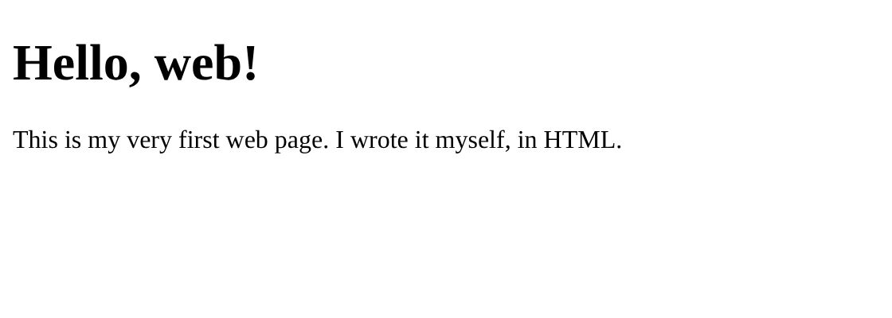
Figure 5.2: Your first web page.
Each line of the skeleton has a job:
Line
Job
<!doctype html>
Tells the browser this is a modern HTML page.
<html lang="en">
The root element that wraps everything. lang says which language the page is in, which helps screen readers and search engines.
<head>
Information about the page, which is not shown in the page itself.
<meta charset="utf-8">
Uses UTF-8, the encoding for Unicode, so every language and emoji displays correctly.
<meta name="viewport" …>
Makes the page fit phone screens properly.
<title>
The text in the browser tab and in search results.
<body>
Everything the visitor sees.
Notice how the lines are indented: elements inside other elements are moved two spaces to the right. The browser does not care about indentation, but people do. It shows at a glance which element is inside which, and Prettier does it for you every time you save.
5.3Text: headings and paragraphs
Most web content is text, and HTML has elements to give it structure. From now on, listings show only the <body>, because the <head> is the same skeleton every time; only the <title> changes. The full files are in the book’s code repository.
text.html
...
<body><h1>Three Days in Cairo</h1><p>Cairo is <strong>huge, loud and wonderful</strong>. I spent three days there and still saw only a <em>tiny</em> part of it.</p><h2>Day 1: The pyramids</h2><p>We arrived at Giza early, before the crowds. The Great Pyramid is even bigger than I imagined.</p><h2>Day 2: Old Cairo</h2><h3>Lunch</h3><p>We ate koshari, a dish of rice, lentils, pasta and a spicy tomato sauce.</p></body>
...
text.html560px
Figure 5.3: Headings, paragraphs and emphasis, with the browser’s default styles.
<h1> to <h6> are headings, from the most important to the least. Use one <h1> per page for its main title, then <h2> for sections, <h3> for sub-sections, and so on, like the chapters and sections of this book.
<p> is a paragraph. The browser adds space around each one.
<strong> marks text as important (shown in bold), and <em> gives it emphasis (shown in italics).
5.4Links
Links are what make the web a web: pages connected to each other all over the world. The anchor element <a> creates a link, and its href attribute says where it goes:
links.html
...
<body><h1>Places to learn</h1><p>The best reference for HTML is <ahref="https://developer.mozilla.org">MDN Web Docs</a>.</p><p>Go back to <ahref="first.html">my first page</a>.</p><p>Open <ahref="https://developer.mozilla.org/en-US/docs/Web/HTML"target="_blank"rel="noopener">the HTML guide</a> in a new tab.</p></body>
...
links.html560px
Figure 5.4: Links are blue and underlined by default.
The first link is absolute: it contains the full address of another website. The second is relative: first.html means “the file called first.html in the same folder as this page”. Use relative links between the pages of your own site, so they keep working when you move the whole site to a server.
The third link opens in a new tab because of target="_blank". The extra rel="noopener" is a small security measure that you should always add with it.
5.5Images
The <img> element shows a picture. Download the file bit.svg from the book’s code repository into your chapter-05 folder, or use any picture you like:
image.html
...
<body><h1>Meet Bit</h1><imgsrc="bit.svg"alt="Bit, a small purple robot, waving"width="120"height="140"><p>Bit is the friendly robot who guides you through this book.</p></body>
...
image.html560px
Figure 5.5: An image on the page.
src is the image file: a relative path, or a full address on the web.
alt is a text description of the image. Screen readers read it aloud, search engines index it, and browsers show it if the image cannot load.
width and height tell the browser how much space to keep, so the page does not jump around while the image loads.
5.6Lists
HTML has two common kinds of list. Use <ul> (unordered list) when the order does not matter, and <ol> (ordered list) when it does. Inside both, each item is an <li>:
lists.html
...
<body><h1>Making tea</h1><h2>You need</h2><ul><li>Water</li><li>Tea leaves</li><li>A cup</li><li>Sugar (optional)</li></ul><h2>Steps</h2><ol><li>Boil the water.</li><li>Put the tea in the cup.</li><li>Pour the water and wait three minutes.</li><li>Add sugar if you like.</li></ol></body>
...
lists.html560px
Figure 5.6: The browser adds bullets and numbers for you.
Lists are everywhere on the web, often in places you would not guess: the menu at the top of most websites is a list of links, styled with CSS so it no longer looks like a list.
5.7Giving a page structure
Real pages have parts: a top area with the site’s name and menu, the main content, and a footer at the bottom. HTML has semantic elements for these parts. “Semantic” means they describe the meaning of their content, not its look:
Figure 5.7: The parts of the page above. Without CSS they look like plain text, but the browser, search engines and screen readers know what each part is.
Element
Use it for
<header>
The introduction of the page or a section: logo, title, menu
<nav>
The main navigation links
<main>
The main content. Only one per page.
<section>
A themed part of the content, usually with a heading
<article>
Content that makes sense on its own: a blog post, a news story, a product
<footer>
The end of the page or section: copyright, contacts, links
You will also meet two elements with no meaning at all: <div>, a general block, and <span>, a general piece of inline text. Use them only when no semantic element fits, usually as hooks for CSS.
5.8A first look at forms
Forms let visitors send information: a search, a login, a sign-up. You will make forms come alive with JavaScript in Chapter 12, but the structure is pure HTML:
form.html
...
<body><h1>Join the newsletter</h1><form><p><labelfor="name">Your name</label><inputid="name"name="name"type="text" required></p><p><labelfor="email">Your email</label><inputid="email"name="email"type="email" required></p><buttontype="submit">Sign me up</button></form></body>
...
form.html560px
Figure 5.8: A form with two fields and a button.
Each <input> has a <label>, connected by matching for and id values. Clicking the label puts the cursor in the field, and screen readers announce the label. type="email" brings the right keyboard on phones, and required makes the browser refuse to send an empty field. Try pressing the button with the fields empty!
5.9Project: your profile page
Let us combine everything into a real page: a profile of Sara, a new web developer. Replace her details with your own as you type.
profile.html
...
<body><header><imgsrc="bit.svg"alt="Sara’s avatar: a smiling purple robot"width="90"height="105"><h1>Sara Khan</h1><p>Beginner web developer from Alexandria</p><nav><ahref="#about">About</a> |
<ahref="#skills">Skills</a> |
<ahref="#contact">Contact</a></nav></header><main><sectionid="about"><h2>About me</h2><p>I started learning to code this year with <em>Code from Zero</em>. I love building small tools that make life easier.</p></section><sectionid="skills"><h2>Skills I am learning</h2><ul><li>HTML</li><li>CSS</li><li>JavaScript</li></ul></section><sectionid="contact"><h2>Contact</h2><p>Write to me at <ahref="mailto:sara@example.com">sara@example.com</a>.</p></section></main><footer><p>Built by Sara, with HTML only.</p></footer></body>
...
profile.html560px
Figure 5.9: The profile page, with HTML only and no styling yet.
Two new tricks appear here. The links in the menu point to #about, #skills and #contact: a # followed by an id jumps to the element with that id on the same page. And the contact link starts with mailto:, which opens the visitor’s email app.
The page works, and its structure is excellent, but it is plain. That is normal: HTML’s job is structure, not beauty. In the next two chapters you will turn exactly this page into something you will be proud to share.
Bit
Right-click your page and choose Inspect. The Elements panel shows the tree of elements you wrote. You built that tree! Hover over each element and watch the browser highlight it on the page.
Common mistakes
Mistake
What happens
Fix
Forgetting a closing tag, such as </p>
The browser guesses where the element ends, sometimes wrongly
Close every element that has content
Wrong nesting: <p><strong>…</p></strong>
Unpredictable layout
Close elements in the reverse order you opened them
Missing <meta charset="utf-8">
Arabic or accented letters show as strange symbols
Always start with the full skeleton
Spaces or capital letters in file names
Links work on your computer but break on a server
Use names like about-me.html
Image without alt
Screen reader users do not know what it shows
Describe every meaningful image
Summary
HTML marks up content with elements: an opening tag, content, and a closing tag. Attributes add information as name="value".
Every page starts with the same skeleton: doctype, html with lang, head with charset, viewport and title, and body.
Use headings h1 to h6 in order, paragraphs p, and strong and em for importance and emphasis.
a makes links with href; img shows images with src and a meaningful alt.
ul and ol hold list items li.
Semantic elements such as header, nav, main, section, article and footer describe the structure of the page.
Forms use form, label, input and button.
Quick check answers: 1. The attributes are src and alt. <img> is a void element: it has no content between tags, so it needs no closing tag. 2. When the order of the items matters, such as steps or a ranking. 3. One.
Practice projects
Three real pages, each a little bigger than the last. Use HTML only: no CSS yet. Keep these files, because you will style them in Chapters 6 and 7.
Project 5.1 · Easy
A recipe page
Write the page for a recipe you love, with a picture, a list of ingredients and numbered steps.
You will practise: the page skeleton, headings, paragraphs, strong, images with alt, and both kinds of list.
Create a folder projects-05, and in it recipe.html with the full skeleton from Section 5.2.
Add an <h1> with the recipe’s name, and a short paragraph that says how long it takes and how many people it serves. Mark the time with <strong>.
Add a picture of the dish with <img>. Write an alt that describes it in one sentence, and give it a width and height.
Add an <h2> “Ingredients” with an unordered list, and an <h2> “Steps” with an ordered list.
Open the page in the browser, and then in the DevTools Elements panel. Is the tree what you expected?
Hint: the order of ingredients does not matter, so use <ul>; the order of steps does, so use <ol>. If you have no photo, use any picture, or soup.svg from the code repository.
Your result should look like this:
recipe.html520px
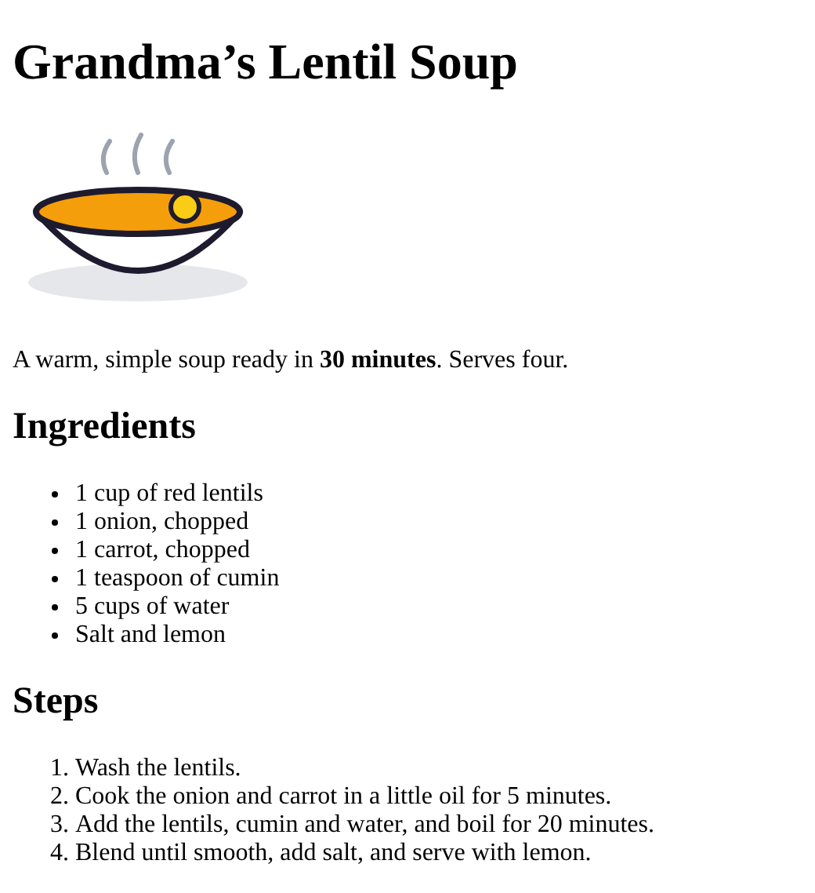
Project 5.1: a recipe page with HTML only.
Project 5.2 · Medium
A website for a small café
Build the one-page website of a neighbourhood café, with a proper semantic structure and a menu that jumps to each section.
You will practise:header, nav, main, section, footer, links to #id, and tel: links.
Plan the page on paper first: draw boxes for the header, the three sections (menu, opening hours, address) and the footer.
Write the <header> with the café’s name, a one-line description, and a <nav> with three links: #menu, #hours and #find.
Inside <main>, write three <section>s, each with the matching id, an <h2>, and a list or a paragraph.
In the address section, add a phone link: <a href="tel:+201000000000">. On a phone, tapping it starts a call.
Finish with a <footer>. Then make the window small and click the menu links: the page jumps to each section.
Hint: the & sign has a special meaning in HTML, so write it as &, for example Bean & Book.
Your result should look like this:
cafe.html520px
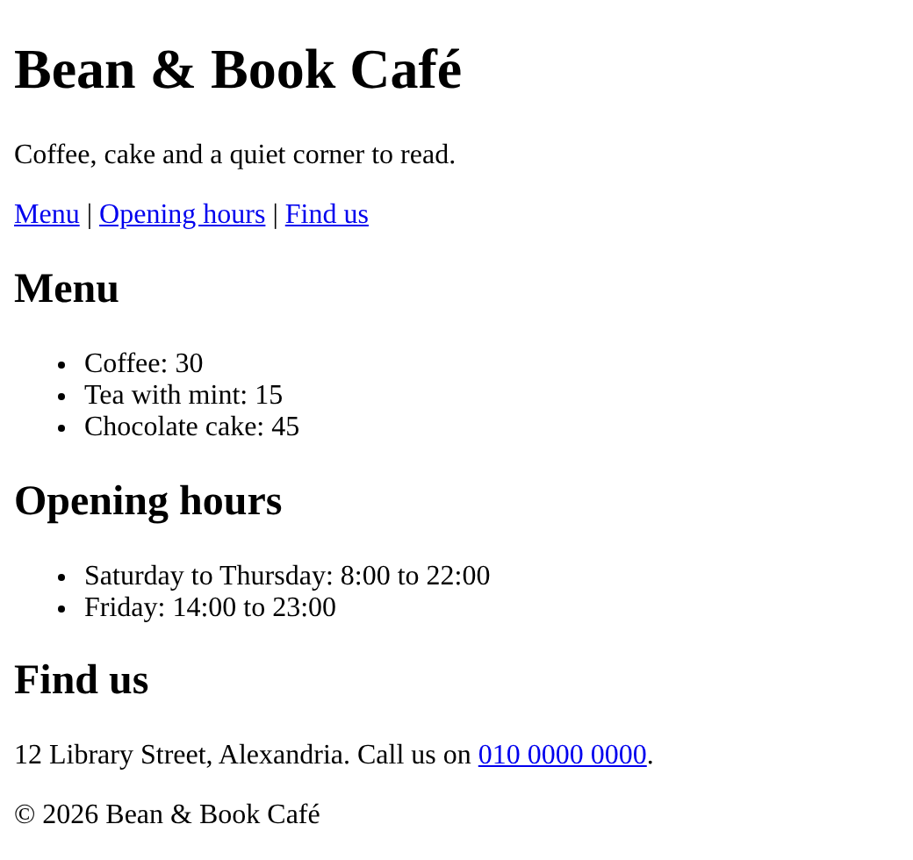
Project 5.2: a café website with a semantic structure.
Project 5.3 · Challenge
A course sign-up form
Build a complete sign-up form with six kinds of field, each with a proper label.
You will practise: forms, label with for, input types, select, textarea, checkboxes and required.
Create signup.html with a heading and a <form>.
Add text, email and phone fields (type="text", "email" and "tel"), each with a <label> whose for matches the field’s id.
Add a <select> for the student’s level, with three <option>s.
Add a <textarea> for “Why do you want to learn?”, and a checkbox for agreeing to emails, with its label after it.
Make the name and email required, and test: press the button with empty fields, then with an email that has no @.
Hint: on a phone, type="email" shows a keyboard with @, and type="tel" shows a number pad. Try it with the DevTools device toolbar, or on your own phone.
Your result should look like this:
signup.html520px
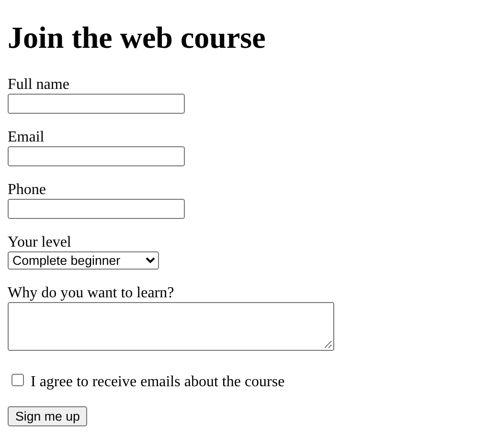
Project 5.3: a sign-up form with six kinds of field.
Exercises
Easy Create favourites.html with a heading and an unordered list of your five favourite films, books or games.
Easy Add a link from favourites.html to profile.html, and a link back again.
Medium Write a recipe page for a dish you like, with an <h1>, an image with a good alt, a list of ingredients and numbered steps.
Medium Open any large website, open DevTools and look at the Elements panel. Find its <header>, <nav> and <footer>. Does it use semantic elements, or only <div>s?
Challenge Turn your profile page into a small three-page website: index.html (about you), projects.html and contact.html with a form. Every page should have the same <header> and <nav> linking to the other two.
Answers to the exercises are at the end of the book and in the book’s code repository.
Coming up in Chapter 6
Your profile page has a great skeleton. Next, CSS gives it colours, fonts, spacing and personality. By the end of Chapter 6 you will hardly recognise it.
6
Chapter 6
CSS: Styling a Page
In this chapter you will learn to
write CSS rules and connect a stylesheet to a page
choose elements with type, class and id selectors
use colours, fonts and units like a professional
understand the box model: content, padding, border and margin
turn your plain profile page into a beautiful one
At the end of the last chapter your profile page had a perfect structure and no personality at all. In this chapter you will give it colours, fonts, spacing, rounded corners and shadows. It is the most visual chapter in the book: every line you write changes something you can see.
Bit
Here’s the before-and-after we are aiming for. Same HTML, plus one CSS file. When I first saw what CSS can do, my antenna lit up!
profile.html560px
Figure 6.1: The profile page from Chapter 5 at the end of this chapter. Compare it with Figure 5.9: the HTML has not changed at all.
6.1What CSS is
CSS stands for Cascading Style Sheets. HTML says what each piece of content is; CSS says how it should look. Keeping the two apart is a powerful idea: you can redesign a whole website by changing one CSS file, without touching a single page.
CSS is a list of rules. Each rule says “these elements should look like this”:
Figure 6.2: The parts of a CSS rule. Each property: value; line is called a declaration.
Read this rule as: “every h1 should have the colour #2b2b2b and a font size of 2rem”. Each declaration ends with a semicolon, and the whole block sits between curly brackets.
6.2Connecting CSS to a page
There are three ways to add CSS, and professionals use mainly the third:
Inline, in a style attribute: <p style="color: red">. Quick, but it mixes look and content and is hard to change later.
In a <style> element in the <head>. Handy for small examples, and we use it in this chapter’s short demos.
In a separate .css file, linked from the <head>. One stylesheet can style every page of a site, and the browser downloads it only once.
<link rel="stylesheet" href="style.css">
Add that line inside the <head> of your profile.html, create an empty style.css next to it, and you are ready to start styling.
6.3Selectors: choosing what to style
The selector decides which elements a rule applies to. Four kinds of selector cover almost everything you need:
selectors.html
<!doctype html><htmllang="en"><head><metacharset="utf-8"><metaname="viewport"content="width=device-width, initial-scale=1"><title>Selectors</title><style>
h1 {
color: #2b2b2b;
}
.intro {
font-style: italic;
}
#featured {
background-color: #fef3c7;
}
li .badge {
color: white;
background-color: #2b2b2b;
font-size: 0.8rem;
}
</style></head><body><h1>Bit’s reading list</h1><pclass="intro">Books that every new developer should read.</p><ul><liid="featured">Code from Zero <spanclass="badge">New</span></li><li>Senior Frontend Engineering</li><li>Senior Backend Engineering</li></ul><p>This list is updated every month.</p></body></html>
selectors.html560px
Figure 6.3: Each rule styles a different set of elements.
Selector
Example
Chooses
Type
h1
Every <h1> on the page
Class
.intro
Every element with class="intro"
Id
#featured
The one element with id="featured"
Descendant
li .badge
Elements with class badge that are inside an <li>
Classes are the workhorse of CSS. An element can have several, separated by spaces (class="card highlighted"), and many elements can share one. Ids must be unique on a page, so they are better for links like #about than for styling.
When rules disagree: the cascade
Sometimes two rules try to set the same property on the same element. CSS settles it with the cascade, which is where the “C” in CSS comes from. In short: a more specific selector wins (an id beats a class, and a class beats a type), and if two selectors are equally specific, the one that comes later wins.
Some properties are also inherited: if you set color or font-family on body, every element inside it gets the same value unless a rule says otherwise. That is why you set fonts once, on body.
Names such as tomato or white. Easy, but there are only about 140 of them.
Hex codes such as #2b2b2b: three pairs of hexadecimal digits for red, green and blue. This is what designers usually give you.
rgb() with three numbers from 0 to 255. rgba() adds a fourth, the opacity, from 0 (invisible) to 1 (solid).
You saw in Chapter 1 that every dot on a screen is stored as red, green and blue numbers. Hex and rgb() are simply two ways of writing those three numbers.
6.5Text and fonts
Property
Example
What it does
font-family
system-ui, sans-serif
The typeface, with fallbacks if the first is missing
font-size
1.25rem
The size of the letters
font-weight
700
Thickness: 400 is normal, 700 is bold
line-height
1.6
Space between lines, as a multiple of the font size
text-align
center
Alignment: start, center, end, justify
text-decoration
none
Underlines, often removed from links
A list of fonts in font-family is a list of wishes: the browser uses the first one it has. system-ui means “the operating system’s own font”, which looks native on every device and costs nothing to download. Always end the list with a general family such as sans-serif or serif.
Units: px, rem and %
Sizes need units. The three you will use most are:
px: pixels. Fixed and predictable; good for borders and small details.
rem: a multiple of the root font size, which is 16 pixels by default. 1.5rem is 24 pixels. Use rem for font sizes, because it respects users who set a bigger default text size in their browser.
%: a percentage of the parent element’s size. Good for widths.
6.6The box model
Here is the most important idea in CSS layout: every element is a rectangular box. Headings, paragraphs, images and links are all boxes, and every box has four layers:
Figure 6.5: The box model. From the inside out: content, padding, border, margin.
box.html
...
<body><divclass="box">I am a box with padding, a border and a margin.</div></body>
...
box.html560px
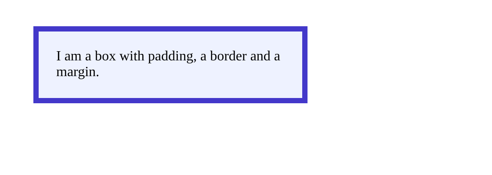
Figure 6.6: A box with 20px padding, a 6px border and a 30px margin.
Look at box.html in your own browser, open DevTools, and select the box. At the bottom of the Styles pane, DevTools draws exactly this diagram with your real numbers. It is the best way to understand why something is in the wrong place.
Margins and padding can be set for each side, or all at once:
padding: 20px; /* all four sides */
padding: 10px 20px; /* top and bottom 10, left and right 20 */
padding: 10px 20px 30px; /* top 10, sides 20, bottom 30 */
margin: 0 auto; /* no vertical margin, centred horizontally */
Block and inline
Boxes come in two main kinds. Block elements, such as <p>, <h1> and <section>, start on a new line and take the full width. Inline elements, such as <a>, <strong> and <span>, sit inside a line of text and are only as wide as their content. With display: inline-block, an element stays in the line but accepts padding and width like a block. That is how the menu links and skill tags in our project become pills.
6.7Writing CSS for both directions
Many websites today work in both left-to-right and right-to-left languages. Properties like margin-left are tied to a physical side, so they look wrong when the page is flipped for Arabic. Modern CSS has logical properties that follow the reading direction instead:
Physical
Logical
Means
margin-left
margin-inline-start
Where lines start: left in English, right in Arabic
padding-right
padding-inline-end
Where lines end
text-align: left
text-align: start
Align to the start of the line
Our profile stylesheet uses no physical sides at all, so the very same CSS styles the Arabic version of the page correctly. Use logical properties in all your new code; your future international users will thank you.
6.8Project: style your profile
Here is the complete stylesheet for the page in Figure 6.1. It is organised in five commented parts, like the stylesheets professionals write. Type it part by part, and reload the page after each part to see what it does.
Comments in CSS go between /* and */. The browser ignores them.
Custom properties such as --brand are variables for CSS. You define a colour once in :root and use it everywhere with var(--brand). To change the whole page’s main colour, you now change one line.
border-radius rounds the corners; 50% turns a square into a circle, and a huge value like 999px makes a pill.
box-shadow adds a soft shadow, which makes the cards seem to float.
max-width: 640px with margin: 24px auto keeps the content narrow and centred. Long lines are tiring to read, so this is good design, not only decoration.
Common mistakes
Mistake
What happens
Fix
Missing semicolon between declarations
The next declaration is ignored
End every declaration with ;
Forgetting the dot: intro {
The rule looks for an <intro> element, which does not exist
Classes need a dot: .intro
Wrong path in <link href>
No styles at all
Check the Network tab for a 404
A space in a value like 2 rem
The declaration is ignored
Write units right after the number: 2rem
Using margin-left in a bilingual site
Spacing is on the wrong side in Arabic
Use margin-inline-start
Summary
CSS rules have a selector and declarations (property: value;). Link a stylesheet with <link rel="stylesheet">.
Select by type (h1), class (.intro), id (#featured) or descendant (li .badge). Style mostly with classes.
The cascade decides between conflicting rules: more specific wins, then later wins. Some properties are inherited.
Colours can be names, hex codes or rgb(). Keep enough contrast.
Use rem for font sizes, px for small details and % for widths.
Every element is a box: content, padding, border, margin. Use box-sizing: border-box.
Logical properties like margin-inline-start work in both reading directions.
Custom properties (--brand) store values you reuse.
Quick check answers: 1. .price. 2. Without it: 200 + 10 + 10 + 2 + 2 = 224 pixels. With it: exactly 200 pixels. 3. Because rem grows with the browser’s default text size, so it respects users who need bigger text.
Practice projects
Time to dress the three pages you built in Chapter 5. Each project gives the page its own personality, so you see how much CSS alone can change. Link each page to its own stylesheet.
Project 6.1 · Easy
A warm recipe page
Give the recipe page the warm look of a cookbook: a cream background, a serif font, and orange accents.
You will practise: linking a stylesheet, type selectors, colours, fonts, line-height and borders.
Create recipe.css and link it in the <head> of recipe.html.
On body, set a cream background (#fdf6ec), a dark brown text colour, a serif font such as Georgia, and line-height: 1.6.
Make the h1 bigger and orange. Turn the h2s into small capitals with text-transform: uppercase, some letter-spacing, and a coloured border-bottom.
Round the corners of the picture and give it a white frame with padding and background-color.
Colour the strong text so the cooking time stands out.
Hint: padding on an image shows its background colour around it, like a photo frame. Try border-radius: 16px and see the frame’s corners round.
Your result should look like this:
recipe.html520px
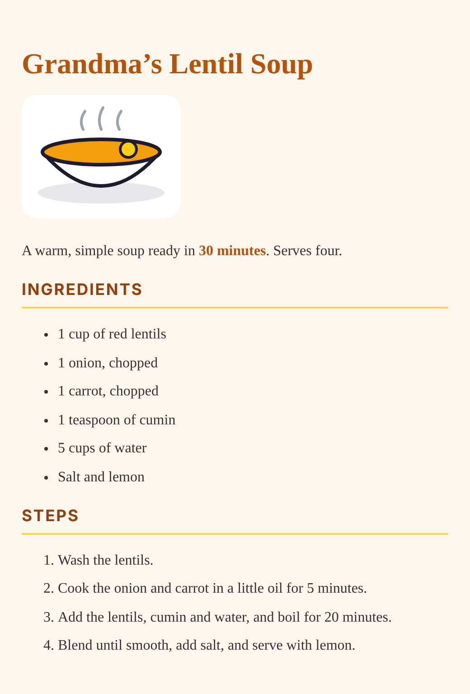
Project 6.1: the recipe page with its own stylesheet.
Project 6.2 · Medium
A café brand with custom properties
Give the café website a brand: three colours defined once as custom properties, used everywhere.
You will practise: custom properties, the box model, inline-block pills, cards and centring with max-width.
In cafe.css, define --brown, --cream and --gold in :root.
Make the header a brown band with centred white text, and turn the menu links into cream pills with display: inline-block, padding and border-radius: 999px.
Keep main narrow and centred with max-width: 560px and margin: 24px auto.
Turn each section into a white card with rounded corners and a gold top border.
Finally, change only the three custom properties to a completely different palette, and watch the whole site change.
Hint: if a pill looks squashed, check that it has display: inline-block; plain inline links ignore vertical padding in the layout.
Your result should look like this:
cafe.html520px
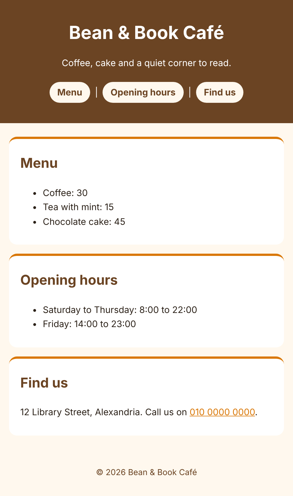
Project 6.2: the café website with a brand.
Project 6.3 · Challenge
A professional sign-up form
Turn the plain sign-up form into a clean card that is pleasant to fill in, with clear focus states.
You will practise:box-sizing, styling form fields, attribute selectors, :focus and box-shadow.
Start signup.css with the box-sizing: border-box rule from Section 6.6, so that fields with padding never overflow.
Turn the form into a white card with a soft shadow and a max-width, on a light background.
Style input, select and textarea together, with one selector list: full width, padding, a border and rounded corners. Use font: inherit so they use the page’s font.
The checkbox should not be full width: select it with the attribute selector input[type="checkbox"] and set width: auto.
Add a clear focus style: a coloured border and a soft “glow” made with box-shadow: 0 0 0 3px. Click into each field to test it.
Hint: never remove the focus outline without replacing it with something just as visible; keyboard users need to see where they are. Chapter 16 explains why.
Your result should look like this:
signup.html520px
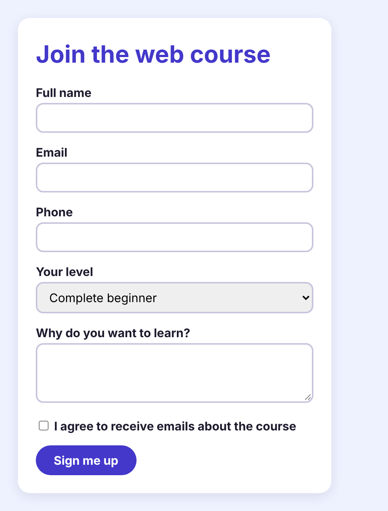
Project 6.3: the sign-up form as a styled card.
Exercises
Easy Give the profile page’s footer a dark background and white text.
Easy Make the links in the Contact section bold, and remove their underline only when the mouse is over them. (Search MDN for the :hover pseudo-class.)
Medium Add a class="highlight" to one skill and write a rule that gives it a different colour from the others.
Medium Style the recipe page from Chapter 5’s exercises with its own stylesheet. Use at least one custom property.
Challenge Open your profile page in DevTools and switch on the device toolbar (the phone icon). Make the page look good at 360 pixels wide. What do you need to change?
Answers to the exercises are at the end of the book and in the book’s code repository.
Coming up in Chapter 7
Your page is beautiful, but everything is still stacked from top to bottom. Next you will learn Flexbox and Grid, the two modern layout tools, and build layouts with columns that adapt from phone to desktop.
7
Chapter 7
Layout with Flexbox and Grid
In this chapter you will learn to
place elements in a row or a column with Flexbox
space, align and centre elements in both directions
build two-dimensional layouts with CSS Grid
make pages adapt to every screen with media queries
give your profile page a real, responsive layout
For years, putting two boxes side by side on a web page was surprisingly hard, and developers used clever tricks that broke easily. Today CSS has two tools designed exactly for layout: Flexbox for arranging things along one line, and Grid for rows and columns together. With them, layouts that once took a day take a few lines.
Bit
Here’s a fun fact: centring something vertically used to be the most famous joke among web developers. By section 7.2 of this chapter, you’ll do it in three lines!
7.1Flexbox: a row of boxes
Normally block elements stack from top to bottom. Add display: flex to a parent element, and its children line up in a row instead. The parent is called the flex container, and its direct children are flex items.
Figure 7.1: The same menu with three values of justify-content.
Three properties do most of the work:
Property
Common values
What it does
gap
8px, 1rem
Space between items, and nowhere else
justify-content
flex-start, center, space-between, flex-end
Where items sit along the row
align-items
stretch, center, flex-start, flex-end
How items line up across the row (vertically, for a row)
Notice that “start” means where the reading direction starts. In the Arabic version of this page the same CSS puts the menu on the right, with no extra code. Flexbox and Grid are built on the logical directions you met in Chapter 6.
Rows, columns and wrapping
flex-direction: column turns the row into a column. flex-wrap: wrap lets items move onto a new line when there is not enough room, instead of squeezing. And on an item, flex: 1 means “grow to fill the free space”, which is how you make a search box stretch next to a fixed-size button.
Figure 7.2: Flexbox has two axes. justify-content works along the main axis, align-items across it.
7.2Centring anything
Put justify-content: center and align-items: center together, and an item sits exactly in the middle of its container, horizontally and vertically:
Three lines! Developers who learned CSS before Flexbox still smile when they see this. The container needs a height, though: here min-height gives it one. Without it, the box is only as tall as its content, so there is nothing to centre in.
7.3Grid: rows and columns together
Flexbox arranges items along one line. CSS Grid arranges them in two dimensions at once, like a table or a spreadsheet. Set display: grid on the container and describe its columns:
Read it from the inside out. 1fr means “one fraction of the free space”. minmax(140px, 1fr) means “at least 140 pixels, otherwise share the space equally”. repeat(auto-fit, …) means “as many columns like that as fit”. So on a wide screen you get four columns, on a phone two, and you never wrote a single rule for either. That is the heart of responsive design.
You write
You get
grid-template-columns: 1fr 1fr
Two equal columns
grid-template-columns: 200px 1fr
A fixed sidebar and a flexible main column
grid-template-columns: repeat(3, 1fr)
Three equal columns
grid-column: 1 / -1 (on an item)
The item spans every column, from the first line to the last
7.4Page layouts with named areas
Grid can also lay out a whole page. You give each part a name and then “draw” the layout with those names, almost like ASCII art:
Each quoted line is a row; each word is a cell. "head head" means the header spans both columns. Changing the whole layout is now a matter of redrawing the picture, which is exactly what we do for small screens.
7.5Responsive design with media queries
More than half of all web visits come from phones. A media query applies CSS only when a condition is true, usually a screen width:
On screens 600 pixels wide or less, the page becomes a single column, and the main content moves above the sidebar, because on a phone the content is what people came for:
layout.html360px
Figure 7.6: The same page and the same HTML at phone width.
7.6Project: a responsive profile
Your profile page is beautiful but still a single tall column. Let us add a sixth part to style.css with a real layout. Nothing in the HTML changes.
Figure 7.7: On a wide screen: avatar beside the name, cards in two columns.
profile.html380px
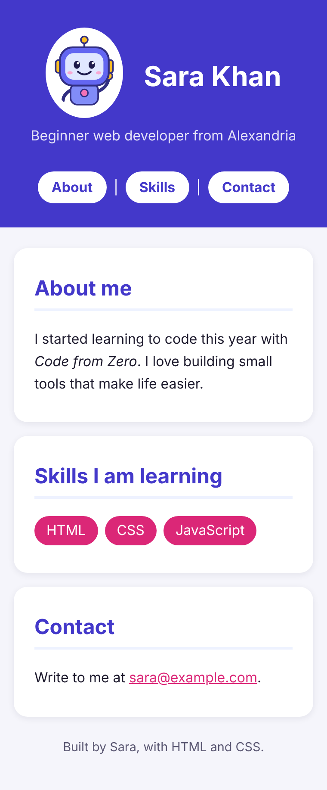
Figure 7.8: On a phone: one column, everything centred. Same HTML, same CSS file.
Look at what each piece does:
The header is now a flex container that wraps. On a wide screen the avatar and name sit side by side; flex-basis: 100% forces the menu onto its own line.
main is a grid with a gap, so the cards are spaced by the grid instead of by their own margins.
The skills list is a wrapping flex container: tags flow onto a new line on narrow screens.
Inside the media query, main gets two columns, and the About card spans both with grid-column: 1 / -1.
padding-inline is a logical property: in the Arabic page, the extra padding moves to the correct sides automatically.
Common mistakes
Mistake
What happens
Fix
Putting display: flex on the items instead of the parent
Nothing lines up
Flex and grid go on the container
Using margins to space flex or grid items
Uneven spacing at the edges
Use gap
Centring vertically in a container with no height
The item does not move
Give the container a height or min-height
Forgetting the viewport meta tag
Phones show a tiny desktop page and media queries seem broken
Keep <meta name="viewport"> in the head
Fixed widths like width: 900px
Sideways scrolling on phones
Use max-width, % and fr
Summary
display: flex lines children up in a row (or a column). Use gap, justify-content and align-items.
Flexbox has a main axis and a cross axis. flex-wrap: wrap lets items flow onto new lines.
justify-content: center plus align-items: center centres anything.
display: grid makes rows and columns. fr shares free space; repeat(auto-fit, minmax(…, 1fr)) makes responsive galleries.
grid-template-areas draws page layouts with names.
Media queries apply CSS at certain screen widths. Design mobile first.
Flexbox for a line of things, Grid for a layout of things.
Quick check answers: 1. display: flex on the parent. 2. One fraction of the free space: two 1fr columns share it equally. 3. It applies the CSS inside it only when the screen is at least 700 pixels wide.
Practice projects
Layout is learned by building layouts. Each project below is a pattern you will meet on real websites again and again. Test every one at phone width and desktop width with the DevTools device toolbar.
Project 7.1 · Easy
The café, side by side
Give the café website from Project 6.2 a real layout: on wide screens, its sections sit next to each other as cards.
You will practise: Grid with auto-fit and minmax, gap, and a wrapping Flexbox menu.
Open cafe.css from Chapter 6 and add a new part at the end, with a comment: /* Chapter 7 */.
Make main a grid with grid-template-columns: repeat(auto-fit, minmax(240px, 1fr)) and a gap, and widen its max-width to 900 pixels.
Remove the bottom margin of the sections: the gap now does the spacing.
Make the nav a wrapping flex container, centred, with a gap between the pills.
Resize the window slowly from wide to narrow, and watch the cards go from three columns to two to one.
Hint: you did not write a single media query, yet the layout adapts. That is the power of auto-fit with minmax.
Your result should look like this:
cafe.html760px
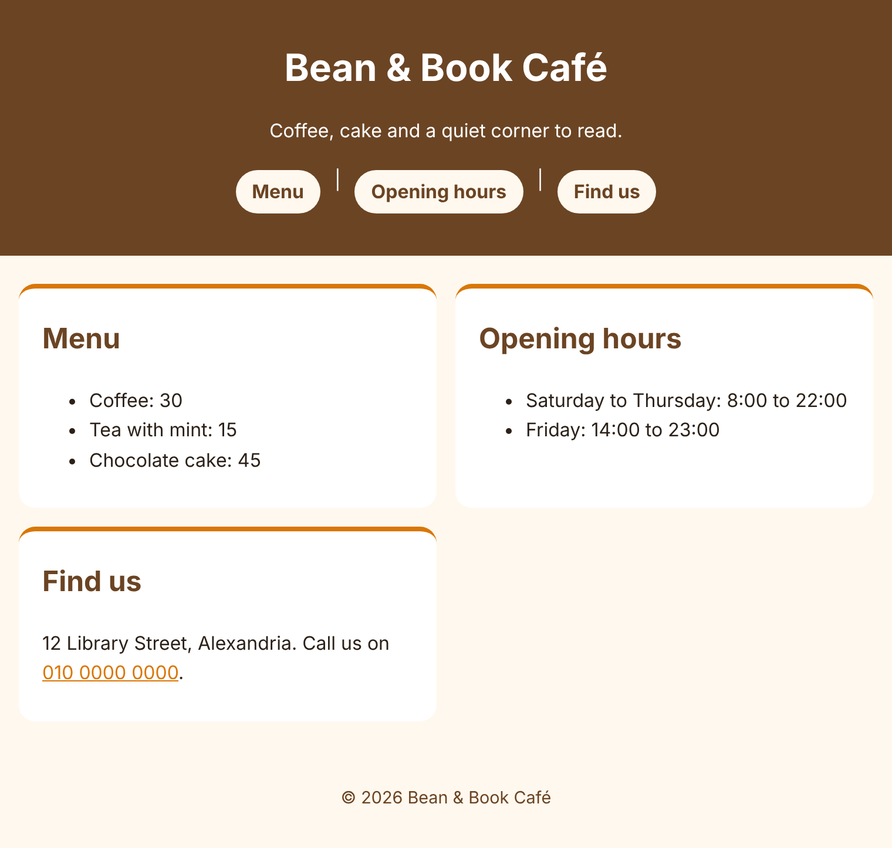
Project 7.1: the café on a wide screen.
Project 7.2 · Medium
A “Meet the team” page
Build a grid of team member cards, each with a round avatar, a name and a role, perfectly centred inside the card.
You will practise: Grid for the page, Flexbox inside each card, and centring in both directions.
In team.html, write a <main class="team"> containing six <article class="person">, each with a <div class="avatar"> (the first letter of the name), an <h2> and a <p>.
Make .team a responsive grid of cards at least 150 pixels wide.
Make each .person a flex column with align-items: center, so everything inside is centred.
Make .avatar a 64-pixel circle (border-radius: 50%) and centre its letter with Flexbox: justify-content and align-items both set to center.
Check the page at 360 pixels: how many cards per row?
Hint: this is the “Flexbox inside Grid” pattern from the Tip in Section 7.5: Grid places the cards; Flexbox arranges what is inside each card.
Your result should look like this:
team.html560px
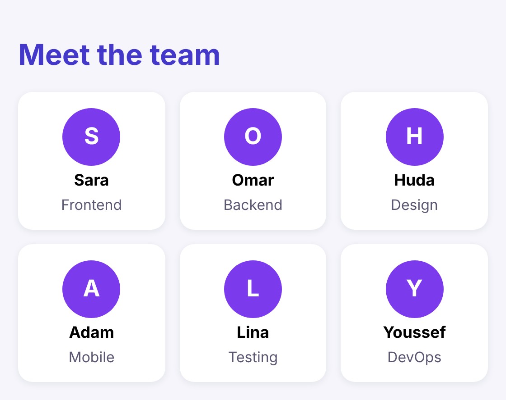
Project 7.2: a team grid with centred cards.
Project 7.3 · Challenge
A product landing page
Build the classic landing page that almost every product has: a top bar, a “hero” with text and a picture, and three feature cards. It must look right on phones too.
You will practise:space-between, flex: 1, fixed grid columns, and a media query that changes direction.
Sketch the page first: a bar with the brand on one side and links on the other; a hero with text beside a picture; a row of three cards; a footer.
Make the bar a flex container with justify-content: space-between, so the brand and the links are pushed to opposite sides.
Make the hero a flex container. Give its text block flex: 1, so it takes all the space the picture does not need.
Lay out the three features with grid-template-columns: repeat(3, 1fr).
Add a media query for screens up to 600 pixels: the hero becomes a centred column (flex-direction: column) and the grid becomes one column.
Hint: the picture is decorative, so its alt is empty (alt=""). The heading already says everything that matters.
Your result should look like this:
landing.html760px
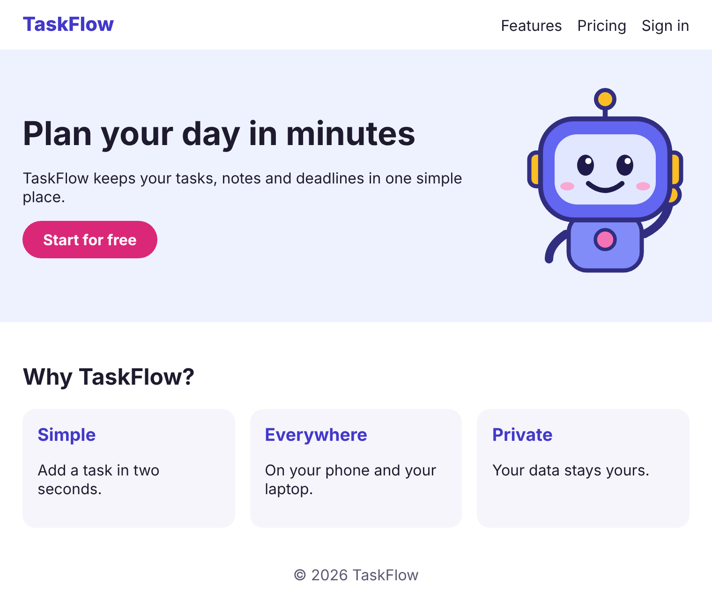
Project 7.3: the landing page on a wide screen…
landing.html380px
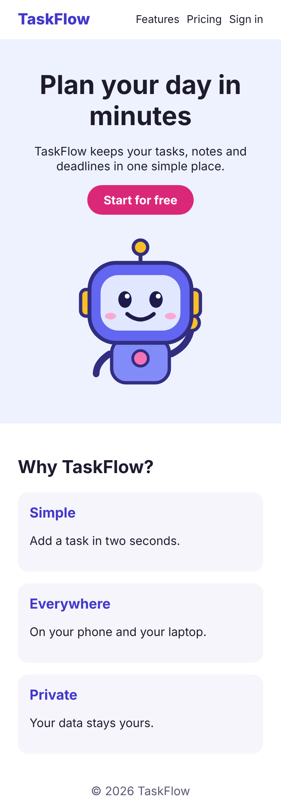
…and on a phone.
Exercises
Easy Make a row of three buttons with Flexbox, with 12 pixels between them, centred on the page.
Easy Change the gallery so that each column is at least 200 pixels wide. How many columns do you get at different window widths?
Medium Build a card for a product with an image on one side and text on the other, using Flexbox. On screens narrower than 500 pixels, put the image above the text.
Medium Add a fourth area, ads, to layout.html, shown to the end of the main content on wide screens and at the very bottom on phones.
Challenge Recreate the layout of the home page of a news website you like, with Grid areas and coloured boxes instead of real content. Make it work at 360, 768 and 1280 pixels wide.
Answers to the exercises are at the end of the book and in the book’s code repository.
Coming up in Chapter 8
Your pages now have structure, style and layout. What they cannot do yet is think. Part 3 brings JavaScript: values, variables and decisions, the first step to pages that react to their visitors.
8
Chapter 8
Values, Variables and Decisions
In this chapter you will learn to
recognise the basic kinds of values JavaScript works with
store values in variables with let and const
calculate and compare with operators
make a program choose what to do with if, else and switch
build a small ticket kiosk that decides a price by itself
Every useful program does two things again and again: it remembers information, and it makes decisions based on that information. A cinema kiosk remembers your age and the day of the week, then decides what you should pay. A game remembers your score, then decides whether you have won. In this chapter you will teach JavaScript to do both.
Bit
Hi again! Today you will teach the computer to make choices. By the end of this chapter you will have built a ticket machine that thinks for itself. Let’s go!
Open your editor and the terminal you set up in Chapter 3. Every example in this chapter is a small file you can run with Node.js. Type the examples yourself instead of copying them: your fingers learn the shape of the language faster than your eyes do.
8.1Values: the raw material of a program
A value is a single piece of data: a number, a piece of text, or a yes-or-no answer. Values are the raw material that a program works with, in the same way that flour and water are the raw material of bread.
Create a file called values.js and type this program:
Run it from the terminal with node values.js. You should see:
Terminal
42
3.5
Hello
true
number
string
boolean
The command console.log prints a value to the terminal. It is the simplest way to see what your program is doing, and you will use it in every chapter of this book.
The program shows three of the most common kinds of value, which programmers call types:
Type
What it holds
Examples
number
Whole numbers and decimals
42, 3.5, -7
string
Text, written between quotes
"Hello", 'Cairo'
boolean
Exactly one of two answers
true, false
The word typeof asks JavaScript for the type of a value. You will rarely need it in real programs, but it is a good way to check your understanding while you learn.
8.2Variables: giving a value a name
Values on their own disappear as soon as they are used. To keep a value so that you can use it later, you store it in a variable. A variable is a name that points to a value.
Figure 8.1: A variable is a labelled box. The label is the name; the contents are the value.
JavaScript gives you two words for creating a variable: let and const.
variables.js
let score = 0;
console.log(score);
score = score + 10;
console.log(score);
const name = "Sara";
console.log("Player:", name);
Terminal
0
10
Player: Sara
Read the line score = score + 10; from right to left. JavaScript first works out score + 10, which is 0 + 10, and then puts the result back into score. The single equals sign does not mean "is equal to" as it does in mathematics. It means "store the value on the right in the name on the left". Programmers call it the assignment operator.
let or const?
Use let for a value that will change, such as a score, a counter or a total. Use const for a value that will not change once it is set, such as a player's name or the maximum number of players. If you try to change a const, JavaScript stops your program with an error:
const-error.js
const maxPlayers = 4;
maxPlayers = 5;
Terminal
maxPlayers = 5;
^
TypeError: Assignment to constant variable.
This error is a gift, not a punishment. It tells you exactly which line broke a rule you set yourself. Professional developers use const by default and switch to let only when they know a value must change. You should do the same: the fewer things that can change, the fewer things can go wrong.
Choosing good names
A variable name may contain letters, digits, _ and $, but it cannot start with a digit, and it cannot be a word that JavaScript already uses, such as if or let. When a name has several words, JavaScript developers join them in camelCase: the first word in lower case and each following word starting with a capital letter.
Good
Poor
Why
ticketPrice
tp
Says what it holds
isMember
member1
is tells you it is a boolean
maxPlayers
max_players_number
Short, and follows the camelCase style
Write names for the person who will read your code in six months. Very often, that person is you.
8.3Operators: calculating and comparing
An operator is a symbol that takes values and produces a new value. You already know most of the arithmetic operators from school.
The operators +, -, * and / add, subtract, multiply and divide. The one that may be new to you is %, the remainder operator. 10 % 4 is 2 because 4 goes into 10 twice with 2 left over. It is more useful than it looks: n % 2 is 0 exactly when n is even.
Joining text
When + is used with strings, it joins them together. A cleaner way to build text is a template literal: a string written between backticks (`) in which anything inside ${ } is calculated and inserted. Compare the two styles in the program; most modern code uses template literals because they are easier to read.
Comparison
Comparison operators always produce a boolean:
Operator
Meaning
Example
Result
===
is equal to
3 === 3
true
!==
is not equal to
3 !== 4
true
< and >
less than, greater than
2 < 1
false
<= and >=
less or equal, greater or equal
5 >= 5
true
Look carefully at the last two lines of the output. 5 === "5" is false, because a number is not a string. But 5 == "5" is true: the double equals quietly converts one value to the other type before comparing. That silent conversion hides bugs.
8.4Decisions with if and else
Now that you can compare values, you can make your program choose. The if statement runs a block of code only when a condition is true. A cinema charges different prices for different ages; here is how a program decides:
JavaScript checks the conditions from top to bottom and stops at the first one that is true:
Figure 8.2: The conditions are checked in order. The first one that is true wins.
Because the order matters, a 9-year-old is caught by age < 13 and never reaches the later checks. If you swapped the first two conditions, a 2-year-old would be charged 6 instead of nothing. When you write a chain of else if, always ask yourself: "which case should win if two are true?"
Bit
My trick for long chains: put the narrowest condition first, and leave the “everyone else” case for the final else.
The parts of the statement are:
if (condition) { ... }: the block runs only when the condition is true.
else if (condition) { ... }: checked only when every earlier condition was false. You can have as many as you need.
else { ... }: runs when nothing above was true. It is optional, and there can be only one.
Notice also that price is declared with let and no value. It starts out as the special value undefined, meaning "nothing yet", and each branch gives it a real value.
8.5Combining conditions
Real decisions often depend on more than one thing. Three logical operators let you combine booleans:
Operator
Name
True when
&&
and
both sides are true
||
or
at least one side is true
!
not
the value is false (it flips true and false)
logic.js
const isMember = true;
const day = "Tuesday";
if (isMember && day === "Tuesday") {
console.log("Half price today!");
}
const hasTicket = false;
if (!hasTicket) {
console.log("Please buy a ticket.");
}
const nickname = "";
const shown = nickname || "Guest";
console.log(shown);
Terminal
Half price today!
Please buy a ticket.
Guest
The first if gives half price only to members, and only on Tuesdays. The second reads naturally as "if not has ticket". The last two lines use a common trick that needs a little more explanation.
Truthy and falsy
In a condition, JavaScript accepts any value, not only true and false. Six values count as false, and programmers call them falsy: false, 0, "" (an empty string), null, undefined and NaN. Every other value is truthy.
The || operator returns the first truthy value it finds. Because nickname is an empty string, which is falsy, nickname || "Guest" gives "Guest". This is a quick way to provide a default value.
8.6Choosing between many fixed values with switch
When you compare one value against a list of exact possibilities, a switch statement can be easier to read than a long chain of else if:
JavaScript jumps to the case that matches size using ===, and runs the code from there. The break statement ends the switch. If you forget it, JavaScript carries on into the next case, which is almost never what you want. The default case runs when nothing matches.
Use switch for exact matches on one value, such as sizes, menu choices or days. Use if for ranges such as ages, or for conditions that involve several variables.
8.7Project: a ticket kiosk
Let us put everything together. The kiosk below decides the price of a cinema ticket with four rules:
Children under 4 enter free.
Children under 13 and adults aged 65 or over pay 6; everyone else pays 10.
Members pay half price on Tuesdays.
Shows that start at 22:00 or later are 1 cheaper, unless the ticket is already free.
Bit
This is your first program that makes real decisions on its own. Read it once, run it, then change the values and play!
kiosk.js
// Ticket kiosk: change these values and run again.const age = 34;
const isMember = true;
const day = "Tuesday";
const showTime = 22; // 24-hour clocklet price;
if (age < 4) {
price = 0;
} elseif (age < 13 || age >= 65) {
price = 6;
} else {
price = 10;
}
if (isMember && day === "Tuesday") {
price = price / 2;
}
if (showTime >= 22 && price > 0) {
price = price - 1;
}
const message = price === 0 ? "Free entry" : `Please pay $${price}`;
console.log(message);
Terminal
Please pay $4
Follow the program as the computer does. The visitor is 34, so the first decision sets price to 10. They are a member and it is Tuesday, so the price is halved to 5. The show starts at 22:00, so one more is taken off, and the visitor pays 4.
The last line uses one new piece of syntax, the conditional operator, often called the ternary:
condition ? valueIfTrue : valueIfFalse
It is a compact if/else that produces a value. Use it only for short, simple choices like this one; when either side grows long, a normal if is clearer.
Common mistakes
Mistake
What happens
Fix
if (age = 18)
Assigns 18 instead of comparing, so the condition is always true
Use ===
Comparing "5" with 5
=== gives false
Make sure both values have the same type
Wrong order in else if
An earlier, wider condition catches cases meant for a later one
Put the narrowest conditions first
Forgetting break
The next case runs too
End every case with break
Changing a const
TypeError: Assignment to constant variable
Use let if the value must change
Summary
A value is one piece of data. The basic types are number, string and boolean.
A variable is a name for a value. Use const by default and let when the value must change.
The single = stores a value; it does not compare.
Operators calculate (+ - * / %), join text, and compare. Always compare with ===.
if, else if and else choose between blocks of code. The first true condition wins, so order matters.
&&, || and ! combine conditions. Six values are falsy; every other value is truthy.
switch matches one value against fixed cases. End each case with break.
Quick check answers: 1. "string", because the quotes make it text. 2. 2, because 5 goes into 17 three times with 2 left over. 3. false, because a number is never the same as a string.
Practice projects
Programs that decide are everywhere: schools grade exams, shops price deliveries, calendars know how long each month is. Build all three, and test each one with many different values, including the strange ones.
Project 8.1 · Easy
Exam grade calculator
Turn a score from 0 to 100 into a letter grade, say whether the student passed, and refuse impossible scores.
You will practise:if/else if chains, the order of conditions, || and &&, and the conditional operator.
Write the grading table first: A from 90, B from 80, C from 70, D from 50, F below 50.
Start the chain with the impossible cases: a score below 0 or above 100 is invalid. Why must this check come first?
Continue the chain from the highest grade down. Each condition only needs the lower limit, because the earlier ones have already caught the higher scores.
Calculate passed with &&, and print a message with the conditional operator.
Test with 100, 90, 89, 50, 49, 0, -5 and 120. These are called boundary values: bugs love to hide there.
Hint: if you put score >= 50 before score >= 90, every passing student gets a D. The first true condition wins.
Your result should look like this (for 83):
Terminal
Score 83: grade B
Passed. Well done!
Project 8.2 · Medium
Delivery cost calculator
An online shop charges for delivery by weight, doubles the price for express delivery, adds a fee outside the big cities, and delivers free on large orders that are not express.
You will practise: several decisions in a row, !==, combining conditions, and rounding up with Math.ceil.
Write the rules as a numbered list in plain language before any code: up to 1 kg costs 30; up to 5 kg costs 50; above 5 kg, 50 plus 10 for every extra kilogram started.
Calculate the base cost from the weight. For the extra kilograms, Math.ceil(weight - 5) rounds up, so 6.2 kg counts as 2 extra kilograms.
Apply express (× 2), then the fee for cities other than Cairo and Alexandria: the city is not Cairo andnot Alexandria.
Free delivery needs two things at once: an order total of 1000 or more, and not express (!express).
Try at least five combinations and check each one by hand.
Hint: a classic mistake is city !== "Cairo" || city !== "Alexandria", which is always true. Say the rule out loud: “not Cairo and not Alexandria”.
Given a year and a month, work out how many days the month has, getting February right in leap years.
You will practise: a complex condition with brackets, %, and a switch where several cases share one answer.
Learn the leap year rule: a year is a leap year if it divides by 4, except years that divide by 100, except years that divide by 400. So 2024 and 2000 are leap years; 1900 is not.
Write it as one boolean: (year % 4 === 0 && year % 100 !== 0) || year % 400 === 0. Test it with 2024, 2023, 1900 and 2000.
Write a switch on the month. February uses the leap year result. April, June, September and November have 30 days: let their cases fall through to the same code, with no break between them.
Every other month has 31 days: that is the default.
Print both results, and try February 1900. Many real programs have got that one wrong!
Hint: stacking case 4:, case 6:, case 9: and case 11: on top of each other is the one place where leaving out break is exactly what you want.
Your result should look like this (for February 2028):
Terminal
2028 is a leap year: true
Month 2 of 2028 has 29 days
Exercises
Easy Write a program with a const called temperature. Print "Cold" below 15, "Warm" from 15 to 29, and "Hot" from 30 up.
Easy Predict the output of each line, then check with Node: 7 % 3, "7" + 3, 7 === "7", !true.
Medium A number is even when n % 2 === 0. Print whether a number is even or odd, and whether it is positive, negative or zero.
Medium Rewrite switch.js using if and else if. Which version do you find easier to read, and why?
Challenge Add a fifth rule to the kiosk: on Fridays everyone pays 2 extra, but the price can never be more than 10. Test at least four different visitors.
Answers to the exercises are at the end of the book and in the book's code repository.
Coming up in Chapter 9
Your kiosk can serve only one visitor at a time. In the next chapter you will learn to store whole lists of values in arrays, and to repeat work with loops, so the kiosk can serve a queue of a hundred visitors with the same few lines of code.
9
Chapter 9
Loops and Arrays
In this chapter you will learn to
store many values in one variable with arrays
read, add and find items in an array
repeat work with for, for…of and while loops
stop a loop early or skip a step with break and continue
serve a whole queue of visitors with your ticket kiosk
Computers are wonderful at doing the same thing again and again, without ever getting bored or making a careless mistake on the thousandth try. In this chapter you will learn the two tools that make that possible: arrays, which hold lists of values, and loops, which repeat code for each of them.
Bit
Remember the ticket kiosk from Chapter 8? It could serve only one visitor. By the end of this chapter, it will serve a whole queue, and the code will hardly be longer. That’s the magic of loops!
9.1Arrays: lists of values
An array is an ordered list of values stored in one variable. You write it with square brackets, separating the items with commas:
Each item has a position called its index, and indexes start at zero, not one. So fruits[0] is the first item and fruits[2] is the third. The property length tells you how many items there are, which is why the last item is always at length - 1.
Figure 9.1: An array is a row of numbered boxes. The numbering starts at 0.
Arrays come with built-in tools called methods, used with a dot:
Method
What it does
Example
push(x)
Adds x to the end
fruits.push("kiwi")
pop()
Removes and returns the last item
fruits.pop()
includes(x)
Is x in the array? (true or false)
fruits.includes("mango")
indexOf(x)
Where is x? (-1 if missing)
fruits.indexOf("mango")
join(sep)
Joins all items into one string
fruits.join(", ")
slice(a, b)
Copies the items from index a up to (not including) b
fruits.slice(0, 2)
9.2The for loop
A loop runs the same block of code several times. The classic for loop counts:
for.js
for (let i = 1; i <= 5; i++) {
console.log(`Step ${i}`);
}
// Counting downfor (let n = 3; n > 0; n--) {
console.log(n);
}
console.log("Go!");
Terminal
Step 1
Step 2
Step 3
Step 4
Step 5
3
2
1
Go!
The line for (let i = 1; i <= 5; i++) has three parts, separated by semicolons:
Start:let i = 1 runs once, before the loop.
Condition:i <= 5 is checked before each round. When it becomes false, the loop ends.
Step:i++ runs after each round. i++ is short for i = i + 1, and n-- means n = n - 1.
Each round of a loop is called an iteration. The variable i is a tradition from mathematics; use it for simple counters and a meaningful name for anything else.
9.3for…of: one item at a time
Most of the time you do not care about counting; you want to do something with each item in an array. The for…of loop does exactly that, and it is the loop you will use most:
for-of.js
const prices = [12, 5, 30, 8];
let total = 0;
for (const price of prices) {
total = total + price;
}
console.log(`Items: ${prices.length}`);
console.log(`Total: ${total}`);
console.log(`Average: ${total / prices.length}`);
Terminal
Items: 4
Total: 55
Average: 13.75
Read for (const price of prices) as “for each price in prices”. In each iteration, price holds the next item. This pattern, a variable outside the loop that each iteration adds to, is called an accumulator. You will use it to compute totals, counts, maximums and much more. You already saw it in Chapter 2: finding the largest card was an accumulator too.
9.4The while loop
Sometimes you do not know in advance how many rounds you need. A while loop keeps going as long as a condition is true:
while.js
let savings = 0;
let week = 0;
const goal = 100;
while (savings < goal) {
week++;
savings = savings + 15;
}
console.log(`Reached ${savings} after ${week} weeks`);
Terminal
Reached 105 after 7 weeks
Saving 15 a week, how long until you have 100? The loop does not know; it simply keeps adding until the goal is reached. That is the kind of question while is for.
9.5break and continue
Two words give you finer control inside any loop. break leaves the loop immediately. continue skips the rest of the current iteration and jumps to the next one:
break.js
const scores = [72, 85, -1, 90, 64];
for (const score of scores) {
if (score < 0) {
console.log("Invalid score, stopping.");
break;
}
if (score < 75) {
continue;
}
console.log(`Great score: ${score}`);
}
Terminal
Great score: 85
Invalid score, stopping.
The score 72 is skipped by continue, 85 is printed, and then -1 is invalid, so break stops everything: 90 and 64 are never checked. Use both sparingly; a loop with many jumps becomes hard to follow.
9.6Project: the kiosk serves a queue
Here is the kiosk from Chapter 8, now serving a whole line of visitors. Each number in queue is the age of one visitor. The pricing rules are the same; what is new is the loop around them, and three accumulators that build a total, a count and a receipt:
queue.js
// Ages of the visitors waiting in lineconst queue = [34, 9, 2, 70, 16, 41, 3];
let total = 0;
let freeTickets = 0;
const receipt = [];
for (const age of queue) {
let price;
if (age < 4) {
price = 0;
freeTickets++;
} elseif (age < 13 || age >= 65) {
price = 6;
} else {
price = 10;
}
total = total + price;
receipt.push(price);
}
console.log(`Visitors served: ${queue.length}`);
console.log(`Prices: ${receipt.join(", ")}`);
console.log(`Free tickets: ${freeTickets}`);
console.log(`Total: ${total}`);
Seven visitors are served in a few milliseconds. Add a thousand ages to the array and it would still take only milliseconds, without one extra line of code. This is why computers are so useful: once you have described how to handle one item, a loop handles them all.
Bit
Look at the pieces working together: an array holds the queue, a loop visits each visitor, a decision picks the price, and accumulators collect the results. Sequence, selection and repetition, the three building blocks from Chapter 2, all in one program. You’re a real programmer now!
Common mistakes
Mistake
What happens
Fix
Using array[array.length] for the last item
undefined: there is nothing there
The last item is at length - 1
i <= array.length in a for loop
One extra iteration with undefined
Use i < array.length, or better, for…of
Declaring the accumulator inside the loop
It restarts at 0 every iteration
Declare it before the loop
Nothing in a while loop changes the condition
Infinite loop; the program freezes
Make sure each iteration moves towards the end
Summary
An array is an ordered list: ["a", "b", "c"]. Indexes start at 0; length counts the items.
for (let i = 0; i < n; i++) counts. for (const x of list) visits each item. while (condition) repeats until the condition is false.
An accumulator is a variable outside the loop that each iteration updates.
break leaves a loop; continue skips to the next iteration.
Always make sure a loop can end.
Quick check answers: 1. "Sun" (indexes start at 0), and 3. 2. Three times, with i being 0, 1 and 2. 3. for…of.
Practice projects
Arrays and loops turn small programs into useful tools. The third project contains a famous interview question; once you can solve it, you will never forget it.
Project 9.1 · Easy
Class statistics
A teacher has the scores of a whole class. In one pass through the list, find the average, the highest and lowest score, and how many students passed.
You will practise:for…of, several accumulators at once, and += and ++.
Create an array of eight scores.
Before the loop, create four accumulators: total starting at 0, highest and lowest starting at the first score, and passed starting at 0.
In one for…of loop, update all four. total += score is short for total = total + score.
After the loop, print the number of students, the average (total / scores.length), the highest, the lowest, and “passed out of total”.
Add a score of 100 and one of 0 to the array, and check that the results change as you expect.
Hint: start highest and lowest at the first score, not at 0. If you start lowest at 0, it never changes, because no score is below 0.
Add new items to a shopping list, skipping any item that is already there, and print the list numbered from 1.
You will practise:includes, push, and the classic for loop with an index.
Start with a list of two items, and an array toAdd of three items, one of which is already on the list.
Loop over toAdd. If the list already includes the item, print a message; otherwise push it.
Print the final list with a classic for loop, so that you have the index i to number each line.
People count from 1, arrays from 0: print i + 1, not i.
Hint: “Bread” and “bread” are different strings for JavaScript. If users may type either, compare item.toLowerCase() instead.
Your result should look like this:
Terminal
bread is already on the list
Shopping list:
1. bread
2. milk
3. eggs
4. tomatoes
Project 9.3 · Challenge
The counting game and a triangle of stars
Two classic loop puzzles. First, count from 1 to 15, but say “Bit” for multiples of 3, “Bot” for multiples of 5, and “Bit Bot” for multiples of both. Second, draw a triangle of stars.
You will practise:% inside a loop, the order of conditions, and nested loops.
Write a for loop from 1 to 15.
Inside, check for “both” first: n % 3 === 0 && n % 5 === 0. Then 3 alone, then 5 alone, else the number itself.
For the triangle, write an outer loop for the rows, 1 to 4. Inside it, start an empty string line.
An inner loop adds "* " to the line once for each row number: row 1 gets one star, row 4 gets four.
Print the line after the inner loop. Then change the program to draw 10 rows, or an upside-down triangle.
Hint: this counting game (usually called FizzBuzz) is a very common question in programming interviews. The trap is the order: if “3” is checked before “both”, 15 prints only “Bit”.
Your result should look like this:
Terminal
1
2
Bit
4
Bot
Bit
7
8
Bit
Bot
11
Bit
13
14
Bit Bot
*
* *
* * *
* * * *
Exercises
Easy Print the multiplication table of 7, from 7 × 1 = 7 to 7 × 10 = 70.
Easy Make an array of five temperatures and print the highest and the lowest. (Hint: two accumulators.)
Medium Given const words = ["code", "is", "fun", "and", "useful"], build a new array containing only the words longer than three letters, then print it joined with spaces.
Medium Count how many even numbers there are between 1 and 100, using a loop and %.
Challenge Extend queue.js: if a visitor is 65 or older, also print “Senior discount applied”. At the end, print the average price and the most expensive ticket sold.
Answers to the exercises are at the end of the book and in the book’s code repository.
Coming up in Chapter 10
The pricing rules now sit inside a loop, and the program is getting longer. In the next chapter you will learn functions: how to give a piece of code a name, reuse it anywhere, and build programs from small, clear parts.
10
Chapter 10
Functions
In this chapter you will learn to
package a piece of code as a named, reusable function
pass information in with parameters and get results out with return
understand where variables live: scope
write short arrow functions and use them with map, filter and reduce
rebuild the ticket kiosk from small, clear functions
You have already used many functions without writing one: console.log, push, join. Someone wrote them once, gave them names, and now millions of programmers use them every day. In this chapter you will write your own. Functions are how programmers turn a long, tangled program into small pieces that each do one job well.
Bit
Think of a function as a little machine. You put something in (like an age), it does its work, and something comes out (like a price). You build the machine once and use it as often as you like, without thinking about its insides again.
The name, greet, which you use to call it. Function names are usually verbs, because functions do things.
The parameters in brackets, here name: the inputs. Inside the function, a parameter works like a variable.
The body in curly brackets: the code that runs each time the function is called.
Defining a function does nothing on its own. The code runs only when you call the function, by writing its name followed by brackets: greet("Sara"). The value you pass, "Sara", is called an argument. Inside the function, name becomes "Sara".
Returning a value
The word return sends a value back to whoever called the function, and ends the function immediately. That is why const message = greet("Sara") works: the call is replaced by the returned value. A function without return gives back undefined.
Figure 10.1: A function is a machine: arguments go in, a return value comes out.
10.2Functions make code reusable
Here are the kiosk’s pricing rules as a function. Once written, it can be used anywhere, as often as you like:
price.js
function ticketPrice(age) {
if (age < 4) {
return0;
}
if (age < 13 || age >= 65) {
return6;
}
return10;
}
console.log(ticketPrice(2));
console.log(ticketPrice(9));
console.log(ticketPrice(34));
console.log(ticketPrice(70));
Terminal
0
6
10
6
Notice the style: instead of one long if/else if chain, each case returns as soon as it knows the answer. Programmers call these early returns. They make the logic easy to read from top to bottom: “if it’s a small child, it’s free; done.”
10.3Several parameters and default values
A function can take several parameters, separated by commas. The order matters: the first argument goes to the first parameter. A parameter can also have a default value, used when the caller leaves it out:
params.js
function area(width, height) {
return width * height;
}
function welcome(name, language = "en") {
if (language === "ar") {
return`مرحباً يا ${name}`;
}
return`Welcome, ${name}`;
}
console.log(area(4, 5));
console.log(welcome("Lina"));
console.log(welcome("Lina", "ar"));
Terminal
20
Welcome, Lina
مرحباً يا Lina
10.4Scope: where variables live
A variable created inside a function exists only inside that function. This is called scope:
total lives inside withTax; outside, it does not exist, so typeof total is "undefined". But tax, created outside, can be read inside the function. The rule: code can see variables in its own block and in the blocks around it, never in the blocks inside it.
Scope is a gift. It means two functions can each have their own variable called total without disturbing each other, just as two families can each have a child called Omar.
10.5Arrow functions and array methods
JavaScript has a shorter way to write small functions, called arrow functions:
function double(n) { return n * 2; } // a normal function
const double = (n) => n * 2; // the same, as an arrow function
When the body is a single expression, the arrow function returns it automatically, without return or curly brackets. Arrow functions shine when you give a function to another function. Arrays have three famous methods that do exactly that:
arrow.js
const double = (n) => n * 2;
console.log(double(21));
const prices = [12, 5, 30, 8];
const withVat = prices.map((p) => p * 1.1);
console.log(withVat);
const cheap = prices.filter((p) => p < 10);
console.log(cheap);
const total = prices.reduce((sum, p) => sum + p, 0);
console.log(total);
Combines all items into one value, like an accumulator
One value
A function passed to another function is called a callback. map calls your callback once for each price, with the price as the argument. These three methods often replace a whole loop with one readable line, and you will see them everywhere in professional code.
10.6Project: a kiosk made of functions
Let us rebuild the kiosk the way a professional would: from small functions, each with one job. One function knows the base price, one applies the members’ day, and one builds a receipt line from a visitor:
kiosk.js
// Small functions, each with one jobfunction ticketPrice(age) {
if (age < 4) return0;
if (age < 13 || age >= 65) return6;
return10;
}
function applyMemberDay(price, isMember, day) {
if (isMember && day === "Tuesday") {
return price / 2;
}
return price;
}
function receiptLine(visitor) {
const base = ticketPrice(visitor.age);
const price = applyMemberDay(base, visitor.member, "Tuesday");
return`${visitor.name}: ${price}`;
}
// Each visitor is an object; you will learn objects in Chapter 11.const visitors = [
{ name: "Sara", age: 34, member: true },
{ name: "Adam", age: 9, member: false },
{ name: "Huda", age: 70, member: true },
];
for (const visitor of visitors) {
console.log(receiptLine(visitor));
}
Terminal
Sara: 5
Adam: 6
Huda: 3
Each visitor is written as { name: "Sara", age: 34, member: true }, an object that groups several values under names. You read them with a dot: visitor.age. Objects are the subject of the next chapter.
Compare this with the long kiosk in Chapter 8. Each piece now has a name that explains it, and each piece can be changed without touching the others. If the cinema changes its prices, you change ticketPrice and nothing else. That is the real power of functions: not fewer lines, but clearer ones.
Bit
Notice how the last function reads almost like a sentence: “the base price is the ticket price for this age; the price is the base after the members’ day.” Good names make code explain itself. I always say: code is read far more often than it is written.
Common mistakes
Mistake
What happens
Fix
Forgetting the brackets: greet instead of greet()
You get the function itself, not its result
Call with ()
Forgetting return
The result is undefined
Return the value you computed
Code after return
It never runs
return ends the function
Arguments in the wrong order
Wrong results, often without an error
Check the order of the parameters
Using a variable outside its scope
ReferenceError: … is not defined
Return the value instead
Summary
A function is named, reusable code. Define it with function name(params) { … } and call it with name(args).
Parameters are the inputs; arguments are the values passed in. Parameters can have default values.
return sends a value back and ends the function.
Variables live in their scope: inside a function, they are invisible outside it.
Arrow functions ((n) => n * 2) are a short form, perfect as callbacks.
map, filter and reduce transform, select and combine arrays.
Write small functions with one job and clear names.
Quick check answers: 1. A parameter is the name in the function’s definition; an argument is the actual value passed when calling it. 2. undefined. 3. [10, 20, 30].
Practice projects
Each project builds a small toolbox of functions that work together. Give every function one job and a name that says what it does.
Project 10.1 · Easy
A unit converter
Write a set of small conversion functions, plus one helper for rounding, and use them together.
You will practise: parameters, return, default values, and calling functions inside other calls.
Write kmToMiles(km) (× 0.621371), kgToPounds(kg) (× 2.20462) and celsiusToFahrenheit(c).
Write a helper round(value, digits = 1) that returns Number(value.toFixed(digits)). The default means you usually do not have to pass digits.
Print four conversions, passing the result of one function straight into another: round(kmToMiles(10)).
Convert the length of a marathon, 42.195 km, with two decimal places.
Add one more converter of your own, for example litres to cups.
Hint:toFixed returns a string; Number(…) turns it back into a number, so you can keep calculating with it.
Your result should look like this:
Terminal
10 km = 6.2 miles
70 kg = 154.3 pounds
37 °C = 98.6 °F
42.195 km = 26.22 miles
Project 10.2 · Medium
Password strength checker
Rate passwords as weak, okay or strong, using small helper functions that each check one thing.
You will practise: functions that return booleans, early returns, looping over the letters of a string, and combining small functions.
Write hasDigit(text): loop over the characters with for…of, and return true as soon as one is a digit. After the loop, return false.
Write hasUpper(text): a text has a capital letter if it changes when you make it lower case.
Write strength(password): give one point each for 8 or more characters, 12 or more characters, a digit, and a capital letter.
Turn the points into a word with early returns: 0–1 weak, 2–3 okay, 4 strong.
Test four passwords, from the weakest to the strongest.
Hint: length matters more than anything else for a password’s strength. A long, unusual sentence beats a short word with symbols.
A small shop has a list of orders. Answer three business questions, each in one or two lines, without writing a single for loop.
You will practise: arrow functions, map, filter, reduce, and chaining them.
Create an array of five orders, each an object with a product, a quantity and a price.
Write an arrow function lineTotal(order) that returns quantity × price.
Total revenue: map each order to its line total, then reduce to one sum.
Big orders: filter the orders whose line total is 25 or more, and print how many.
Stickers sold: filter the sticker orders, then reduce their quantities. Writing .filter(…) and .reduce(…) on separate lines makes the chain easy to read.
Hint: read a chain from top to bottom as a sentence: “orders, only the stickers, add up the quantities”. Professional code is full of chains like this.
Your result should look like this:
Terminal
Revenue: 128
Orders of 25 or more: 3
Stickers sold: 15
Exercises
Easy Write isEven(n) that returns true or false. Test it with 4, 7 and 0.
Easy Write celsiusToFahrenheit(c), using c * 9 / 5 + 32. What is 37 °C in Fahrenheit?
Medium Write maxOf(numbers) that returns the largest number in an array, using the algorithm from Chapter 2. Then find the built-in way with Math.max on MDN.
Medium Given an array of prices, use filter and map to get the prices over 10 with a 20% discount applied, rounded with toFixed(2).
Challenge Add a function applyNightShow(price, hour) to the kiosk (1 cheaper from 22:00, never below 0), give each visitor an hour, and use the new function in receiptLine.
Answers to the exercises are at the end of the book and in the book’s code repository.
Coming up in Chapter 11
You met your first objects in the kiosk project. In the next chapter you will learn how objects describe real things, from a visitor to a product to a whole shopping cart, and how JSON lets programs exchange them across the internet.
11
Chapter 11
Objects and JSON
In this chapter you will learn to
describe real things with objects: properties and values
read, change and add properties
work with arrays of objects using filter, find and map
unpack and copy objects with destructuring and spread
turn objects into JSON text and back, and build a shopping cart
A number can hold an age, and a string can hold a name. But real things have many details at once: a book has a title, a price, a number of pages and a list of tags. Objects let you keep all the details of one thing together, under clear names. They are how JavaScript describes the world, and almost every piece of data you will meet as a developer is an object.
Bit
If I were an object, I would be { name: "Bit", colour: "purple", antennas: 1, loves: ["HTML", "CSS", "JavaScript"] }. See? Objects are a natural way to describe things!
11.1Creating and reading objects
An object is written with curly brackets. Inside are properties: pairs of a name (the key) and a value, separated by a colon, with commas between the pairs:
Code from Zero
340
beginners
{
title: 'Code from Zero',
pages: 352,
inStock: true,
tags: [ 'beginners', 'javascript' ],
price: 25
}
Dot notation, book.title, is the usual way to read a property.
Bracket notation, book["pages"], does the same with the key as a string. It is useful when the key is in a variable: book[field].
A value can be anything: a number, a string, a boolean, an array, or even another object.
You change a property by assigning to it, and you add a property the same way: book.price = 25 created a property that did not exist before.
Reading a property that does not exist is not an error; you simply get undefined. That is convenient, but it also means a spelling mistake like book.titel fails silently, so watch your spelling.
11.2Arrays of objects
The most common shape of data in real programs is an array of objects: a list of products, of users, of messages, of matches. Each object has the same keys:
[ 'Code from Zero', 'Senior Frontend' ]
Bit mug 8
Bit sticker
Here the methods from Chapter 10 come into their own. filter selects the books, map takes just their names, and find returns the first item that matches, or undefined if there is none. Notice how each line reads almost like a question: “products where the category is book”, “the product whose id is 2”.
11.3Destructuring and spread
Two short syntaxes appear everywhere in modern JavaScript:
Destructuring, const { name, city } = visitor, creates variables from properties with the same names. It is a shortcut for const name = visitor.name and const city = visitor.city.
The spread syntax, { ...visitor, age: 35 }, copies every property into a new object and then overrides age. The original is not changed, as the output shows.
11.4JSON: objects as text
Objects live in a program’s memory. But how do you save one to a file, or send it from a server to a browser on the other side of the world? You turn it into text. The standard text format for data on the web is JSON (JavaScript Object Notation), and it looks almost exactly like a JavaScript object:
json.js
const order = { id: 501, items: ["book", "mug"], paid: false };
const text = JSON.stringify(order);
console.log(text);
console.log(typeof text);
const back = JSON.parse('{"id":502,"items":["sticker"],"paid":true}');
console.log(back.items[0], back.paid);
JSON.stringify(value) turns a value into a JSON string. JSON.stringify(value, null, 2) adds line breaks and indentation, which is easier to read.
JSON.parse(text) turns JSON text back into objects and arrays.
JSON is stricter than JavaScript: keys must be in double quotes, strings must use double quotes, and there are no comments, no functions and no trailing commas. Almost every web API in the world sends and receives JSON. In Chapter 13 you will fetch JSON from a real server.
JavaScript object
JSON text
{ name: 'Bit', antennas: 1 }
{"name":"Bit","antennas":1}
Lives in memory; can contain functions
Just text; only data
Used inside your program
Used to save, send and receive data
11.5Project: a shopping cart
Let us build the logic of an online shop’s cart: a catalogue of products, a cart that remembers which products and how many, and functions that add items and calculate totals. This is the same logic that runs behind real shops, just smaller:
cart.js
const catalog = [
{ id: 1, name: "Code from Zero", price: 25 },
{ id: 2, name: "Bit mug", price: 8 },
{ id: 3, name: "Bit sticker", price: 3 },
];
const cart = [];
function addToCart(productId, quantity = 1) {
const line = cart.find((item) => item.productId === productId);
if (line) {
line.quantity += quantity;
} else {
cart.push({ productId, quantity });
}
}
function lineTotal(item) {
const product = catalog.find((p) => p.id === item.productId);
return product.price * item.quantity;
}
function cartTotal() {
return cart.reduce((sum, item) => sum + lineTotal(item), 0);
}
addToCart(1);
addToCart(3, 4);
addToCart(1);
for (const item of cart) {
const product = catalog.find((p) => p.id === item.productId);
console.log(`${product.name} × ${item.quantity} = ${lineTotal(item)}`);
}
console.log(`Total: ${cartTotal()}`);
// Ready to save or send to a server
console.log(JSON.stringify(cart));
Terminal
Code from Zero × 2 = 50
Bit sticker × 4 = 12
Total: 62
[{"productId":1,"quantity":2},{"productId":3,"quantity":4}]
Some details worth noticing:
The cart stores only the product’s id and a quantity, not a copy of the product. The price lives in one place, the catalogue, so if a price changes, every cart is right automatically. Real databases are designed on exactly this idea.
Adding a product that is already in the cart increases its quantity instead of adding a second line. += is short for line.quantity = line.quantity + quantity.
{ productId, quantity } is shorthand for { productId: productId, quantity: quantity }: when the key and the variable have the same name, you write it once.
The last line turns the cart into JSON, ready to be saved in the browser or sent to a server, which you will do in the coming chapters.
Bit
Arrays, objects, functions, loops and decisions, all working together. This little cart has the same shape as the code inside the biggest shops on the internet. Next, let’s put it on a web page where people can click!
Common mistakes
Mistake
What happens
Fix
Misspelled key: book.titel
undefined, with no error
Check spelling; use autocomplete in VS Code
Reading a property of undefined
TypeError: Cannot read properties of undefined
Check that find found something first
const b = a to copy an object
Both names change together
Use { ...a }
Single quotes or comments in JSON
JSON.parse throws a SyntaxError
JSON needs double quotes and no comments
Summary
An object groups related values as key: value properties. Read with obj.key or obj["key"].
Assigning to a property changes it, or adds it if it was missing. Missing properties are undefined.
Arrays of objects are the most common data shape. Use filter, find, map and reduce on them.
Destructuring unpacks properties into variables; spread (...) copies.
Objects and arrays are shared by reference.
JSON is the text format for data. JSON.stringify and JSON.parse convert both ways.
Objects are how programs describe the real world: a book, a student, a user’s settings. These projects move from one object, to a list of them, to saving them as text.
Project 11.1 · Easy
A library card for your favourite book
Describe one book as an object, change it, add to it, and print every property it has.
You will practise: object literals, changing and adding properties, Object.entries and Object.keys.
Create a book object with title, author, pages and read: false.
You have just finished it: set book.read to true.
Add a property that did not exist before: book.rating = 5.
Loop over Object.entries(book) with for (const [key, value] of …) and print each pair.
Print how many properties the object has now with Object.keys(book).length.
Hint:Object.entries turns an object into an array of [key, value] pairs, and the square brackets in the loop unpack each pair into two variables.
Your result should look like this:
Terminal
title: The Little Prince
author: Antoine de Saint-Exupéry
pages: 312
read: true
rating: 5
Properties: 5
Project 11.2 · Medium
The class report
Keep a list of students and their marks, print each student’s average, and find the top of the class.
You will practise: arrays of objects, destructuring in a loop, a helper function, and tracking the best value so far.
Create an array students: each item is { name, marks }, where marks is an array of three numbers.
Write average(marks) using reduce and Math.round.
Loop with for (const { name, marks } of students) and print each name with its average.
Keep a variable best, starting at null. Replace it with { name, avg } whenever a student beats it.
After the loop, print the winner. Then change the marks so a different student wins, and check that the report follows.
Hint:{ name, avg } is a shortcut for { name: name, avg: avg }. When a variable has the same name as the property, you write it once.
Your result should look like this:
Terminal
Mona → 92
Omar → 72
Sara → 95
Top of the class: Sara (95)
Project 11.3 · Challenge
App settings saved as JSON
Real apps start from default settings, load what the user saved last time, apply a change, and save the result again. Build that cycle.
You will practise:JSON.parse, JSON.stringify with indentation, and merging objects with spread without changing the originals.
Create defaults with theme, fontSize and language.
Pretend the app saved this text last time: '{"theme":"dark","fontSize":18}'. Notice that it has no language.
Merge them: { ...defaults, ...JSON.parse(saved) }. Later properties win, so the saved values replace the defaults, and the missing ones keep their defaults.
The user makes the text bigger: create updated with spread and fontSize + 2. Print both sizes to prove settings did not change.
Turn updated back into text with JSON.stringify(updated, null, 2), ready to be saved.
Hint: the order inside the braces matters. Swap the two spreads and the defaults would wipe out what the user saved, a very common bug.
Easy Create an object describing your favourite film, with at least five properties, one of them an array. Print it with console.log and with JSON.stringify(film, null, 2).
Easy In products.js, print the names of all products cheaper than 10.
Medium Add a function removeFromCart(productId) to the cart. (Hint: search MDN for findIndex and splice, or build a new array with filter.)
Medium Give products a discount property (for example 0.1 for 10%) and change lineTotal to use it.
Challenge Write receipt(), which returns the whole receipt as one string, with one line per item and the total, using map and join("\n").
Answers to the exercises are at the end of the book and in the book’s code repository.
Coming up in Chapter 12
So far your JavaScript has lived in the terminal. In the next chapter it moves into the browser: you will change web pages with the DOM, react to clicks and typing with events, and turn the shopping cart into a real, interactive page.
12
Chapter 12
The DOM and Events
In this chapter you will learn to
connect JavaScript to a web page with a <script> element
find elements on a page and change their text, classes and styles
create new elements and add them to the page
react to clicks, typing and form submissions with events
build a real, interactive shop page
Until now your JavaScript has printed its results in the terminal. That is great for learning, but nobody will visit your terminal. In this chapter JavaScript moves into the browser, where it can change the page while people look at it and respond the moment they click. This is the chapter where your pages come alive.
Bit
Every like button, every “add to cart”, every chat message that appears without reloading the page: that’s JavaScript and the DOM. After this chapter, you’ll know how all of them work!
12.1The DOM: the page as objects
When the browser reads your HTML, it builds a tree of objects in memory, one object for each element. This tree is called the DOM, the Document Object Model. You saw it in the Elements panel of DevTools in Chapter 5. JavaScript can read and change this tree, and every change appears on the screen immediately.
Figure 12.1: The DOM is a tree. Every element is an object that JavaScript can reach.
To run JavaScript in a page, put a <script> element at the end of the <body>, pointing to your file:
<script src="change.js"></script>
Why at the end? The browser runs the script as soon as it reaches it. At the end of the body, every element above already exists, so your code can find it.
12.2Finding and changing elements
document.querySelector finds the first element that matches a CSS selector, the same selectors you learned in Chapter 6. Once you have an element, you can change it:
change.html
...
<body><h1>Old title</h1><pclass="note">This paragraph will be highlighted.</p><ulid="skills"><li>HTML</li><li>CSS</li></ul><scriptsrc="change.js"></script></body>
...
change.js
// 1. Change textconst title = document.querySelector("h1");
title.textContent = "New title, set by JavaScript!";
// 2. Add a class (the CSS does the styling)
document.querySelector(".note").classList.add("highlight");
// 3. Create a new element and add it to the pageconst item = document.createElement("li");
item.textContent = "JavaScript";
document.querySelector("#skills").append(item);
change.html560px
Figure 12.2: The page after the script has run. The HTML still says “Old title”; JavaScript changed it.
Code
What it does
document.querySelector(".note")
The first element with class note
document.querySelectorAll("li")
All matching elements, as a list you can loop over
element.textContent = "…"
Replaces the element’s text
element.classList.add("x")
Adds a class (also remove and toggle)
document.createElement("li")
Makes a new element, not yet on the page
parent.append(child)
Puts an element inside another, at the end
12.3Events: reacting to people
An event is something that happens on the page: a click, a key press, a form being sent, the mouse moving. You tell an element what to do when an event happens with addEventListener:
Read addButton.addEventListener("click", () => { … }) as: “when addButton is clicked, run this function”. The function is a callback, like the ones you gave to map in Chapter 10. You do not call it yourself; the browser calls it every time the event happens.
Notice the structure of counter.js. The data lives in a variable, count. Event handlers change the data, then call show(), which updates the page from the data. Keeping these three apart (data, changes, display) is the idea behind every modern frontend framework, including React and Vue in Book 2.
Event
Happens when
click
An element is clicked or tapped
input
The value of a text field changes, on every key press
submit
A form is sent, by a button or by pressing Enter
keydown
A key is pressed
DOMContentLoaded
The whole HTML has been read
12.4Forms
Forms need one extra step. By default, sending a form reloads the page, which would wipe out everything your JavaScript did. event.preventDefault() stops that, so your code can handle the form itself:
const form = document.querySelector("#greet");
const input = document.querySelector("#name");
const output = document.querySelector("#output");
form.addEventListener("submit", (event) => {
event.preventDefault();
const name = input.value.trim();
if (name === "") {
output.textContent = "Please type your name.";
return;
}
output.textContent = `Hello, ${name}! Welcome to the web.`;
input.value = "";
});
greet.html560px
Figure 12.4: After typing a name and pressing the button.
The handler receives an event object with details about what happened.
input.value is the text in the field, and trim() removes spaces from both ends, so “ ” counts as empty.
Listening to the form’s submit event, rather than the button’s click, means pressing Enter works too, which keyboard users expect.
12.5Project: Bit’s shop
Now let us put the shopping cart from Chapter 11 on a real page. The HTML is almost empty: a place for products and a place for the cart. JavaScript draws everything from the data:
const catalog = [
{ id: 1, name: "Code from Zero", price: 25 },
{ id: 2, name: "Bit mug", price: 8 },
{ id: 3, name: "Bit sticker", price: 3 },
{ id: 4, name: "Bit T-shirt", price: 15 },
];
const cart = [];
// Draw one card per productfunction renderProducts() {
const container = document.querySelector("#products");
for (const product of catalog) {
const card = document.createElement("article");
card.className = "card";
const name = document.createElement("h3");
name.textContent = product.name;
const price = document.createElement("p");
price.textContent = `$${product.price}`;
const button = document.createElement("button");
button.textContent = "Add to cart";
button.addEventListener("click", () => addToCart(product.id));
card.append(name, price, button);
container.append(card);
}
}
function addToCart(productId) {
const line = cart.find((item) => item.productId === productId);
if (line) {
line.quantity++;
} else {
cart.push({ productId, quantity: 1 });
}
renderCart();
}
// Redraw the cart from the data every time it changesfunction renderCart() {
const list = document.querySelector("#cart-lines");
list.replaceChildren();
let total = 0;
for (const item of cart) {
const product = catalog.find((p) => p.id === item.productId);
const lineTotal = product.price * item.quantity;
total += lineTotal;
const li = document.createElement("li");
li.textContent = `${product.name} × ${item.quantity}`;
const amount = document.createElement("span");
amount.textContent = `$${lineTotal}`;
li.append(amount);
list.append(li);
}
document.querySelector("#cart-total").textContent =
cart.length === 0 ? "Your cart is empty." : `Total: $${total}`;
}
renderProducts();
renderCart();
shop.html640px
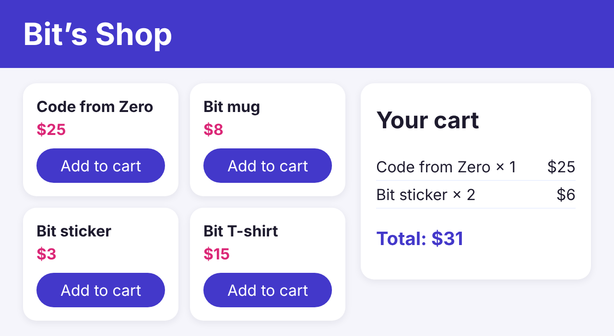
Figure 12.5: The shop after adding the book once and the sticker twice. The stylesheet, shop.css, is in the book’s code repository.
The program follows the same pattern as the counter, just bigger:
Data:catalog and cart are plain arrays of objects, exactly as in Chapter 11.
Display:renderProducts draws a card for each product, and renderCart clears the cart list with replaceChildren() and draws it again from the data.
Changes: each button’s click handler calls addToCart, which changes the data and then calls renderCart.
Redrawing the whole cart after every change may sound wasteful, but it is simple and reliable: the page can never disagree with the data. For a cart of this size it takes far less than a millisecond.
Bit
Open shop.html in your browser and click away! Then open DevTools, type cart in the Console and press Enter. You can see the data behind the page. Change a price in catalog, reload, and watch the whole shop update.
Common mistakes
Mistake
What happens
Fix
Script in the <head>
querySelector returns null; then TypeError
Put scripts at the end of the body
Selector without # or .
Looks for an element type that does not exist
"#add" for ids, ".card" for classes
Calling the handler: addEventListener("click", show())
Runs once immediately, then never again
Pass the function, without brackets
Forgetting preventDefault()
The page reloads and your result vanishes
Call it first in submit handlers
Putting user text into innerHTML
Security hole (XSS)
Use textContent
Summary
The DOM is the page as a tree of objects. Add scripts with <script src> at the end of the body.
querySelector and querySelectorAll find elements with CSS selectors.
Change pages with textContent, classList, createElement and append.
addEventListener(event, callback) reacts to click, input, submit and more.
In submit handlers, call event.preventDefault() and read fields with .value.
Keep data, changes and display apart: change the data, then redraw from it.
Quick check answers: 1. document.querySelector("#total"). 2. So that every element is already on the page when the script looks for it. 3. It stops the browser from sending the form and reloading the page.
Practice projects
Every project here follows the same three steps from this chapter: find the elements, listen for an event, change the page. Open each page in your browser and try it with your own hands.
Project 12.1 · Easy
A night mode switch
One button switches the whole page between a day theme and a night theme, and its label always says what it will do next.
You will practise:querySelector, addEventListener, classList.toggle and classList.contains.
Create theme.html with a heading, a paragraph and a button with id="theme".
In the CSS, write the night colours under body.dark, for example body.dark { background: #111111; color: #f2f2f2; }.
In theme.js, find the button and listen for "click".
On each click, call document.body.classList.toggle("dark"): it adds the class if it is missing and removes it if it is there.
Update the button’s textContent using classList.contains("dark") and the ternary operator.
Hint: JavaScript only switches a class; CSS decides how it looks. Keeping colours in CSS means a designer can change them without touching your script.
theme.html560px
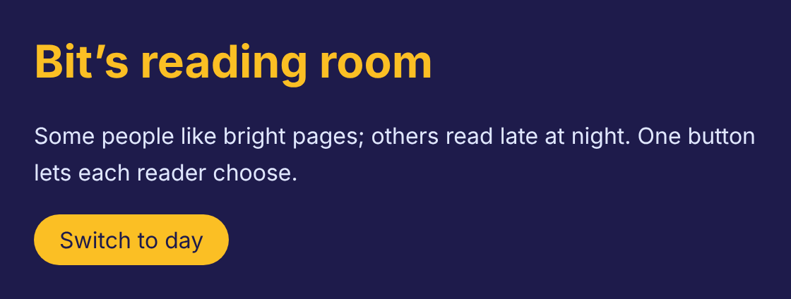
Project 12.1: the reading room after one click.
Project 12.2 · Medium
A live character counter
As the reader types a message, show how many characters are left out of 120, and turn the number red when fewer than 20 remain.
You will practise: the input event, reading value, labels for form fields, and classList.toggle with a condition.
Add a <label for="message">, a <textarea id="message" maxlength="120"> and a paragraph with <span id="left">120</span>.
Listen for "input" on the text area. Unlike "change", it fires on every key press.
Work out limit - message.value.length and show it in the span.
Call left.classList.toggle("low", remaining < 20). With a second argument, toggle adds the class when the condition is true and removes it when it is false.
Type, then delete some text, and watch the colour come back.
Hint:maxlength already stops the reader at 120. Your script does not enforce the limit; it only tells the reader where they stand. Good pages do both.
counter.html560px
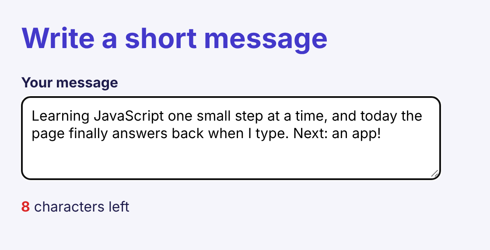
Project 12.2: fewer than 20 characters left, so the number turns red.
Project 12.3 · Challenge
A quiz that builds itself
Write the questions as data, and let JavaScript build the buttons for each one, check the answer, move on, and show the score at the end.
You will practise: arrays of objects, createElement and append, replaceChildren, template literals, and splitting the work into functions.
Create an array questions: each item has text, an options array, and answer, the index of the right option.
Write show(): write the question number and text, clear the old buttons with options.replaceChildren(), then create one button per option with forEach.
Each button calls choose(index). Compare it with answer, add a point if it is right, and show the feedback in green or red.
Move to the next question. When there are none left, call finish() to show Your score: 2 / 3.
In finish(), add a “Play again” button that resets current and points and calls show().
Add two questions of your own to the array. The page grows without a single new line of HTML.
Hint: the data (questions, current, points) is the truth, and show() draws it on the page. This idea, “draw the page from the data”, is exactly how React and Vue work.
quiz.html560px
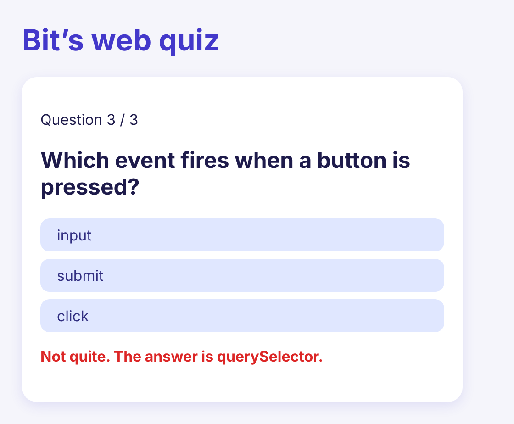
Project 12.3: after one right answer and one wrong one, the quiz explains and moves on…
quiz.html560px
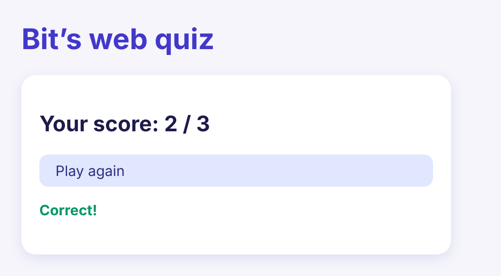
…and shows the score at the end.
Exercises
Easy Add a “minus” button to the counter. Make sure the count never goes below zero.
Easy Add a button to your profile page from Chapter 7 that toggles a dark class on body, and write CSS for the dark theme.
Medium Make a live character counter: below a <textarea>, show “42 / 280” and update it on every input event. Turn it red over 280.
Medium Add a “remove” button to each line of the shop’s cart.
Challenge Add a search box above the products that shows only the products whose names contain the typed text, updating as the user types.
Answers to the exercises are at the end of the book and in the book’s code repository.
Coming up in Chapter 13
The shop’s products are written inside the JavaScript file. Real shops load them from a server. In the next chapter you will learn asynchronous JavaScript and fetch, and load real data from the internet without freezing the page.
13
Chapter 13
Asynchronous JavaScript and fetch
In this chapter you will learn to
understand why some work in JavaScript happens “later”
use timers, promises, async and await
load JSON data from a server with fetch
handle errors with try and catch, and show loading and error states
make the shop load its products from the server
Some things take time. Asking a server on another continent for data might take half a second; a slow mobile connection might take five. If JavaScript simply stopped and waited, your whole page would freeze: no scrolling, no clicking, nothing. Instead, JavaScript starts the slow work, carries on with other things, and comes back when the result is ready. This is called asynchronous programming, and it is how every modern app talks to the internet.
Bit
Think of ordering food in a restaurant. You don’t stand in the kitchen until it’s cooked; you sit down, chat, and the waiter brings the food when it’s ready. JavaScript works the same way with slow tasks!
13.1Now and later
Run this program and look carefully at the order of the output:
timers.js
console.log("1. Order placed");
setTimeout(() => {
console.log("3. Food delivered!");
}, 1000);
console.log("2. Reading a book while waiting");
Terminal
1. Order placed
2. Reading a book while waiting
3. Food delivered!
The second line was printed before the third, even though it comes after it in the code. setTimeout does not wait. It asks the computer to run a function after 1,000 milliseconds, and immediately moves on. When the time is up, the function runs.
Code that runs line after line, each line waiting for the one before, is synchronous. Code that starts a task and continues without waiting for the result is asynchronous. Timers, network requests and reading files are all asynchronous.
13.2Promises, async and await
A promise is an object that represents a result that is not ready yet: “I promise to give you a value later, or to tell you what went wrong.” A promise is first pending; later it is either fulfilled with a value or rejected with an error.
Modern JavaScript makes promises easy to use with two words. A function marked async can use await, which pauses that function until a promise is ready, without freezing anything else:
promise.js
function wait(ms) {
returnnew Promise((resolve) => setTimeout(resolve, ms));
}
asyncfunction makeTea() {
console.log("Boiling the water…");
await wait(300);
console.log("Steeping the tea…");
await wait(300);
console.log("Done.");
return"A cup of tea";
}
makeTea().then((result) => console.log(result));
console.log("Meanwhile, I set the table.");
Terminal
Boiling the water…
Meanwhile, I set the table.
Steeping the tea…
Done.
A cup of tea
Inside makeTea, the steps happen in order, so the code reads like a recipe. But while it waits, the rest of the program keeps going: “Meanwhile, I set the table” is printed second. An async function always returns a promise; .then() runs a callback with its result when it is ready.
13.3fetch: asking a server for data
fetch(url) sends an HTTP request, exactly like the ones you read in Chapter 4, and returns a promise of the response. To make the example run anywhere, even without the internet, it starts its own small API server first:
fetch.js
const http = require("node:http");
// A tiny API server with one address, /api/productsconst products = [
{ id: 1, name: "Code from Zero", price: 25 },
{ id: 2, name: "Bit mug", price: 8 },
{ id: 3, name: "Bit sticker", price: 3 },
];
const server = http.createServer((request, response) => {
if (request.url === "/api/products") {
response.writeHead(200, { "Content-Type": "application/json" });
response.end(JSON.stringify(products));
} else {
response.writeHead(404);
response.end();
}
});
// The client code: this is what runs in a real appasyncfunction getJson(url) {
const response = await fetch(url);
if (!response.ok) {
thrownew Error(`HTTP ${response.status}`);
}
return response.json();
}
server.listen(3001, async () => {
const list = await getJson("http://localhost:3001/api/products");
console.log(list.length, list[0].name);
try {
await getJson("http://localhost:3001/api/missing");
} catch (error) {
console.log("Could not load:", error.message);
}
server.close();
});
Terminal
3 Code from Zero
Could not load: HTTP 404
The function getJson is the heart of the chapter. Read it slowly, because you will write code like it for the rest of your career:
await fetch(url) sends the request and waits for the response headers.
response.ok is true for status codes 200 to 299. A 404 or 500 is not an error for fetch; you must check yourself.
throw new Error(…) reports a problem. It stops the function, like return, but as a failure.
response.json() reads the body and parses the JSON, which also takes time, so it returns a promise too.
13.4When things go wrong: try and catch
The network is unreliable: phones lose signal, servers go down, addresses change. Professional code expects failure. When an error is thrown, JavaScript jumps to the nearest catch:
try {
// code that might fail
} catch (error) {
// what to do if it does: error.message says what happened
}
In fetch.js, asking for /api/missing returned a 404, getJson threw an error, and the catch printed a calm message instead of crashing the program. In a web page, the same pattern lets you show a friendly “please try again” instead of a broken page.
13.5Project: the shop loads its products
The shop from Chapter 12 had its products written inside shop.js. Real shops get them from a server, so that the owner can change products without touching the code. Let us move them into a JSON file next to the page:
Now catalog starts empty, and a new start function loads the data and shows the three states. Here is the new end of shop.js; the rest of the file is unchanged from Chapter 12:
let catalog = [];
…
async function start() {
const status = document.querySelector("#status");
status.textContent = "Loading products…";
try {
const response = await fetch("products.json");
if (!response.ok) {
throw new Error(`HTTP ${response.status}`);
}
catalog = await response.json();
status.textContent = "";
renderProducts();
renderCart();
} catch (error) {
status.textContent = "Sorry, the products could not be loaded. Please try again.";
console.error(error);
}
}
start();
shop.html640px
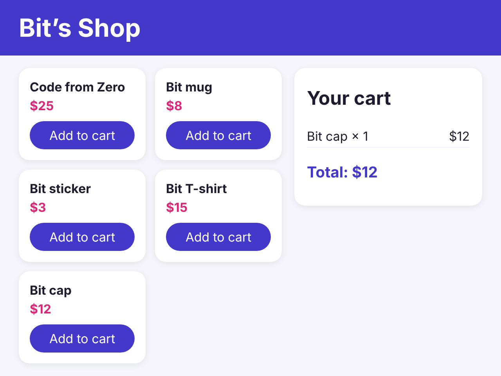
Figure 13.1: The shop now shows the five products from products.json, including the new cap.
To test the error state, rename products.json and reload: you will see the friendly message instead of an empty page. Open the Network tab in DevTools to watch the request for products.json and its 404.
Common mistakes
Mistake
What happens
Fix
Forgetting await
You get a Promise object instead of the data
await every promise you need the value of
await outside an async function
SyntaxError
Mark the function async
Not checking response.ok
A 404 page is parsed as JSON and fails strangely
Check ok and throw a clear error
No try/catch
One network problem breaks the whole page
Catch errors and show a message
Opening a fetching page with file://
The request is blocked
Use Live Server or npx serve
Summary
Asynchronous code starts slow work and continues without waiting. Timers and network requests are asynchronous.
A promise is a value that will arrive later: pending, then fulfilled or rejected.
async functions can await promises; the code reads in order while the page stays responsive.
fetch(url) returns a response. Check response.ok, then await response.json().
throw reports errors; try/catch handles them.
Every data-loading view has three states: loading, success and error.
Quick check answers: 1. Because setTimeout does not wait: it schedules the function for later, and the program moves straight on. 2. No. fetch only fails when the request cannot be made at all; you must check response.ok. 3. Inside an async function, or at the top level of a module.
Practice projects
Waiting is part of every real app: for a timer, for a file, for a server on the other side of the world. These projects teach you to wait without freezing, to wait for several things at once, and to survive when the answer never comes.
Project 13.1 · Easy
A countdown that waits politely
Count down from 3 with a pause between numbers, then say “Go!”, and discover what the rest of the program does while it waits.
You will practise: wrapping setTimeout in a promise, await inside a loop, and the order in which async code runs.
Copy the wait(ms) helper from this chapter: it returns a promise that resolves after ms milliseconds.
Write async function countdown(from) with a for loop that prints n, then await wait(200).
After the loop, print “Go!”.
Call countdown(3), and on the next line print “Get ready…”.
Before you run it, guess the order of the lines. Then run it and explain the surprise in one sentence.
Hint: an async function runs until its first await, then hands control back. That is why “Get ready…” sneaks in after the 3.
Your result should look like this:
Terminal
3…
Get ready…
2…
1…
Go!
Project 13.2 · Medium
Breakfast: one by one, or all at once?
Make tea, toast and eggs, first one after another and then all at the same time, and measure the difference.
You will practise: functions that return values through promises, Promise.all, and timing code with Date.now().
Write async function make(item, ms) that waits ms and returns item.
Write seconds(start): the time since start, rounded to one decimal place.
One after another: await the three dishes in turn (300, 400 and 500 ms) and print the time.
All at once: start all three inside Promise.all([…]), await it, and print the time again.
Promise.all gives back an array of results in the same order. Print them joined with " + ".
Hint: one by one takes the sum of the times; all at once takes only the longest. When a page needs three independent pieces of data, load them together.
Your result should look like this:
Terminal
One after another: 1.2 seconds
All at once: 0.5 seconds
tea + toast + eggs
Project 13.3 · Challenge
A weather report that does not break
Ask a small weather API about three cities, one of which does not exist, and finish the report anyway.
You will practise:fetch, checking response.ok, throwing your own errors, and try/catch inside a loop.
Build the tiny server the same way as in section 13.3: /api/weather/cairo returns JSON, and an unknown city returns 404.
Reuse getJson(url): it throws an Error when response.ok is false.
Write async function report(names): print a loading message, then loop over the names and await each city.
Put the try/catchinside the loop, so one bad city prints “no data” and the loop carries on.
Print a final line so the user knows the report is complete. Then try moving the try outside the loop and see what is lost.
Hint: where you put try decides how much one failure can break. Around the whole loop, one bad city stops everything; around each request, it costs only one line.
Your result should look like this:
Terminal
Loading the weather…
Cairo: 31°C, sunny
atlantis: no data (HTTP 404)
London: 14°C, light rain
Report finished.
Exercises
Easy Write a countdown that prints 3, 2, 1, “Go!”, one line per second, using async, await and the wait function.
Easy In fetch.js, add a second address, /api/hello, that returns {"message": "Hi!"}, and fetch it.
Medium Add a “Reload” button to the shop that appears with the error message and calls start() again.
Medium Look up Promise.all on MDN. Use it to fetch two JSON files at the same time and print both results.
Challenge Use the free public API at https://api.github.com/users/ followed by a username to build a page that shows a GitHub user’s name, picture and number of public repositories. Handle the “user not found” case.
Answers to the exercises are at the end of the book and in the book’s code repository.
Coming up in Chapter 14
As programs grow, so do the ways they can break. The next chapter turns error messages from something scary into your most helpful friend, and teaches the debugging techniques professionals use every day.
14
Chapter 14
Reading Errors and Debugging
In this chapter you will learn to
read an error message and find exactly where the problem is
recognise the three most common kinds of error
follow a stack trace back to the real cause
find bugs that give no error at all, with console.log and the debugger
use a calm, step-by-step method that works for any bug
Every programmer, from the first day to the fortieth year, spends a large part of their time fixing things that do not work. The difference between a beginner and a professional is not that the professional makes fewer mistakes. It is that the professional is not afraid of them, reads what the computer is saying, and follows a method. By the end of this chapter, red text in the terminal will feel like a helpful note, not a disaster.
Bit
Here is the most important sentence in this chapter: the error message is trying to help you. It usually says what went wrong and exactly where. Most beginners panic and stop reading after the first word. Let’s read the whole thing together!
14.1Anatomy of an error message
Here is a small program with a typo, and what Node.js says when you run it:
reference.js
const score = 10;
console.log(scor);
Terminal
console.log(scor);
^
ReferenceError: scor is not defined
Figure 14.1: Five pieces of information in one short error message.
Node.js told us: in the file reference.js, on line 2, at the place marked by the ^, there is a ReferenceError: scor is not defined. That is everything you need. You look at line 2, see scor, and realise you meant score. The browser console shows the same information, with the file name and line number as a link you can click.
14.2The three errors you will meet most
ReferenceError: something does not exist
You used a name that JavaScript does not know, as above. The cause is almost always a typo, a variable used outside its scope (Chapter 10), or something used before it was created.
TypeError: the right name, the wrong kind of value
type.js
const user = undefined;
console.log(user.name);
Terminal
console.log(user.name);
^
TypeError: Cannot read properties of undefined (reading 'name')
This is the most common error in all of JavaScript. You tried to read name from undefined, which has no properties. In real programs, user is undefined because a find found nothing, a server returned no data, or a property name was misspelled. The question to ask is: “why is this value undefined, when I expected an object?”
A SyntaxError happens before anything runs: JavaScript cannot even understand the code. Here, the array opened with [ was never closed with ]. With syntax errors, the real mistake is often a little before the place marked: a missing bracket, quote or comma. VS Code underlines most of them in red as you type, before you even run the code.
Error
Means
First thing to check
ReferenceError
The name does not exist here
Spelling and scope
TypeError
The value is the wrong kind, often undefined
Where the value came from
SyntaxError
The code is not valid JavaScript
Brackets, quotes and commas, just before the marked place
14.3Stack traces: how did we get here?
In bigger programs, functions call functions that call other functions. When an error happens deep inside, Node.js prints a stack trace: the path of calls that led to the error.
stack.js
function getCity(user) {
return user.address.city;
}
function welcome(user) {
return`Hello from ${getCity(user)}!`;
}
console.log(welcome({ name: "Sara" }));
Terminal
stack.js:2
return user.address.city;
^
TypeError: Cannot read properties of undefined (reading 'city')
at getCity (stack.js:2:23)
at welcome (stack.js:6:24)
at Object.<anonymous> (stack.js:9:13)
Read the lines starting with at from top to bottom: the error happened in getCity (line 2), which was called by welcome (line 6), which was called from the main code (line 9). The error is in getCity, but the cause is where the data came from: the user object on line 9 has no address. Stack traces let you walk backwards from the symptom to the cause.
14.4Bugs without errors
The hardest bugs do not produce any error. The program runs and gives the wrong answer:
average-bug.js
// The average of 10, 20 and 30 should be 20…function average(numbers) {
let total = 0;
for (let i = 1; i < numbers.length; i++) {
total = total + numbers[i];
}
return total / numbers.length;
}
console.log(average([10, 20, 30]));
Terminal
16.666666666666668
No red text, but 16.67 is not 20. When nothing tells you where the problem is, you make the program tell you. The simplest tool is console.log: print the values you are unsure about, at the moments you are unsure about them.
average-trace.js
function average(numbers) {
let total = 0;
for (let i = 1; i < numbers.length; i++) {
console.log("i =", i, "number =", numbers[i], "total =", total);
total = total + numbers[i];
}
console.log("final total:", total);
return total / numbers.length;
}
console.log(average([10, 20, 30]));
Terminal
i = 1 number = 20 total = 0
i = 2 number = 30 total = 20
final total: 50
16.666666666666668
Now the bug is obvious: the loop starts at i = 1, so it never adds the first number, 10. The total is 50 instead of 60. This is the trace table from Chapter 2, written by the computer. Fix the cause, here by using for…of, which cannot skip the first item, and test again, including an unusual case:
average-fixed.js
function average(numbers) {
let total = 0;
for (const number of numbers) {
total = total + number;
}
return total / numbers.length;
}
console.log(average([10, 20, 30]));
console.log(average([7]));
Give every log a label, so you know which line printed what. Use console.table for arrays of objects, and console.error for problems; in the browser it is shown in red with a stack trace. And remember to remove your debugging logs when the bug is fixed.
14.5The debugger: pausing time
console.log shows a few values at a few moments. The debugger lets you pause the program at any line and look at everything. In the browser, open DevTools, go to the Sources panel, open your file and click a line number. A blue marker appears: a breakpoint. The next time that line runs, the page freezes there.
Figure 14.2: Paused on a breakpoint. The Scope pane shows every variable’s value right now; the buttons move the program one step at a time.
While paused, you can hover over any variable to see its value, look at all of them in the Scope pane, and press Step to run one line at a time and watch the values change. You can also write the word debugger; in your code; when DevTools is open, the program pauses there. VS Code has the same tools for Node.js programs, in its Run and Debug view.
14.6A method for any bug
When something is wrong, resist the urge to change things at random. Follow these steps instead:
Reproduce it. Find the exact steps that make the bug happen every time.
Read the error, all of it, from the bottom: what happened, and where.
Form a guess. “I think user is undefined because find found nothing.”
Test the guess with a console.log or a breakpoint, not by changing code blindly.
Fix the cause, not the symptom, then run the program again, with unusual cases too.
Summary
Error messages say what went wrong and where: the file, the line and the position. Read all of it.
ReferenceError: the name does not exist. TypeError: the value is the wrong kind, often undefined. SyntaxError: the code is not valid.
A stack trace lists the calls that led to the error; walk back from the symptom to the cause.
For bugs without errors, make the program show its values with labelled console.log, console.table and console.error.
The debugger pauses at breakpoints so you can inspect and step through code.
Method: reproduce, read, guess, test the guess, fix the cause.
Quick check answers: 1. Some code tried to read .price from a value that is undefined; find out why that value is missing. 2. The first line that points to one of your own files. 3. console.log with labels (or a breakpoint) to see the values step by step.
Practice projects: bug hunts
In this chapter the projects are reversed: the code is already written, and it is broken. Type each program as it is, run it, and see the bug for yourself. Then use the method from section 14.6 (read, reproduce, narrow down, fix, test) until your output matches the fixed one. Professionals spend more time doing this than writing new code.
Project 14.1 · Easy
The greeting that will not start
The program crashes before it prints anything. Read the error message and fix it with a single character.
You will practise: reading an error message from top to bottom: the line, the caret, the type and the description.
console.log(welcome(firstname, visits));
^
ReferenceError: firstname is not defined
Find the type of error. A ReferenceError means “I do not know this name”.
Find the line and the caret ^: they point at the exact name JavaScript could not find.
Compare that name, letter by letter, with the variable you created at the top. JavaScript is case-sensitive.
Fix it, run the program again, and make sure the output below appears.
Hint: most errors you will ever meet are typos. Your editor can help: when you click on a variable, it highlights every place with the same name. A name that does not light up is a typo.
After the fix:
Terminal
Welcome back, Sara! visit #3
Project 14.2 · Medium
The checkout that cannot add
No error at all, but the total is nonsense. Find the two bugs hiding in five lines.
You will practise: bugs without errors, tracing values with console.log, the difference between text and numbers, and off-by-one loops.
cart-bug.js
// Prices arrive as text, as they do from a form or a fileconst prices = ["120", "45", "35"];
const discount = 20;
function total(list) {
let sum = 0;
for (let i = 0; i <= list.length; i++) {
sum = sum + list[i];
}
return sum;
}
const before = total(prices);
console.log("Total:", before);
console.log("After discount:", before - discount);
Terminal
Total: 01204535undefined
After discount: NaN
Read the wrong total carefully. Numbers stuck together like 01204535 are a clue: something is joining text, not adding numbers.
Add console.log(i, list[i], typeof list[i]) inside the loop and run again.
Bug 1: the prices are strings, so + glues them. Convert each one with Number(…).
Bug 2: the last line of your trace shows i equal to 3 and the value undefined. The array has no item 3. Change <= to <.
Remove your console.log lines, run once more, and check the result by hand: 120 + 45 + 35 = 200.
Hint:NaN (“not a number”) spreads like a stain: any sum that touches it becomes NaN. When you see it, look for the first undefined or text that went into a calculation.
After both fixes:
Terminal
Total: 200
After discount: 180
Project 14.3 · Challenge
The order that breaks the list
The first order prints, then the program dies. Follow the stack trace back to the cause, and fix it so every order prints.
You will practise: reading a stack trace, finding bad data rather than bad code, and guarding against missing values.
#1 Omar: 40
orders-bug.js:8
return `#${order.id} ${order.customer.name}: ${order.total}`;
^
TypeError: Cannot read properties of undefined (reading 'name')
at label (orders-bug.js:8:41)
at printAll (orders-bug.js:13:17)
at Object.<anonymous> (orders-bug.js:17:1)
Read the stack from the top: the crash is in label, which was called by printAll, which was called from line 17.
The message says it could not read name of undefined. So in order.customer.name, the undefined is order.customer.
One order printed before the crash, so the problem is the second order. Look at the data: order 2 has no customer.
Decide what should happen. Here a missing customer is a guest, so add an if (!order.customer) at the start of label and return a “guest” line.
Run again. All three orders should print, and the program should finish normally.
Hint: the line that crashes is often not the line that is wrong. The code in label was fine; the data was not what it expected. Real data from users and servers is always missing something, so professionals check before they read deep inside an object.
After the fix:
Terminal
#1 Omar: 40
#2 (guest): 15
#3 Huda: 22
Exercises
Easy Each line below has one bug. Predict the error type, then check with Node: console.log("hi), const a = 1; a = 2;, let list; list.push(1);, consol.log(5);
Easy Fix stack.js in two ways: by giving the user an address, and by making getCity return "somewhere" when there is no address.
Medium Put a breakpoint inside addToCart in the shop from Chapter 12. Click “Add to cart” and step through the function, watching cart change.
Medium This function should count the words longer than three letters, but returns the wrong number. Find the bug with console.log: function count(words) { let n = 0; for (const w of words) { if (w.length > 3) n = 1; } return n; }
Challenge Take a program from an earlier chapter that works. Ask a friend to add one small bug without telling you where. Find it using only the method in Section 14.6, and write down each step you took.
Answers to the exercises are at the end of the book and in the book’s code repository.
Coming up in Chapter 15
Part 4 is about working like a professional. It begins with Git, the tool that remembers every version of your code, lets you undo any mistake, and lets whole teams work on the same project without stepping on each other’s toes.
15
Chapter 15
Git and GitHub
In this chapter you will learn to
explain what version control is and why every developer uses it
save snapshots of your project with git add and git commit
look at the history, see what changed and undo mistakes
work on new features safely in branches
put your project on GitHub and understand how teams work together
Have you ever saved files called profile-final.html, profile-final-2.html and profile-REALLY-final.html? Professional developers had the same problem, and they solved it with a tool called Git. Git remembers every version of every file in your project, lets you go back to any of them, and lets many people work on the same code at the same time. It is used by almost every software team in the world.
Bit
Git is like the save points in a video game. Before trying something risky, you save. If it goes wrong, you load the last save and try again. Except with Git, you keep every save, forever, with a note about what you did!
15.1What is version control?
A version control system records changes to files over time. With it you can:
see exactly what changed, when, and why;
go back to any earlier version when something breaks;
try new ideas without risking the working version;
combine the work of several people without overwriting each other.
Git is the version control system that almost everyone uses today. It is free, it runs on your own computer, and it works even without the internet. GitHub is a website that stores Git projects online, so you can back them up, share them and work on them with others. Git is the tool; GitHub is one of the places to keep what Git records.
15.2Setting up Git
Download Git from git-scm.com and install it with the default options (on a Mac, it may already be installed: try git --version). Then tell Git your name and email, which it writes on every snapshot you make:
terminal
# Tell Git who you are (once per computer)$ git config --global user.name "Sara Khan"$ git config --global user.email "sara@example.com"$ git config --global init.defaultBranch main
The last line makes new projects use the name main for the main branch, which is today’s standard. You will learn about branches in Section 15.5.
15.3Your first commit
A Git project is called a repository, or repo. A snapshot of the project is called a commit. Making a commit takes two steps: first you choose which changes go into it, then you save them with a message.
Figure 15.1: Changes move from your folder to the staging area with git add, and into the history with git commit.
Here is the whole process for the profile site from Chapter 7, run in its folder:
terminal
# Start tracking this folder$ git init
Initialized empty Git repository in /Users/sara/code-from-zero/profile/.git/
$ git status --short
?? index.html
?? style.css
# Choose what goes into the next snapshot$ git add index.html style.css$ git status --short
A index.html
A style.css
# Save the snapshot with a message$ git commit -m "Add profile page"
[main (root-commit) 96c0a17] Add profile page
2 files changed, 2 insertions(+)
create mode 100644 index.html
create mode 100644 style.css
git init turns the folder into a repository. It creates a hidden .git folder where the history lives; never edit it by hand.
git status is the command you will type most. --short gives a compact view: ?? means a new file Git does not track yet, A means added to the staging area.
git add puts changes into the staging area. git add . adds everything in the folder.
git commit -m "…" saves the snapshot. Git gives it an id, here 96c0a17, which you can use to find it later.
15.4History and differences
Now edit index.html, add a line, and ask Git what changed:
terminal
# Edit index.html in VS Code, then:# What changed since the last commit?$ git diff
diff --git a/index.html b/index.html
index 5ab23b1..96fec82 100644
--- a/index.html
+++ b/index.html
@@ -1 +1,2 @@
<h1>Sara Khan</h1>
+<p>Beginner web developer</p>
$ git commit -am "Add tagline"
[main 8be4da4] Add tagline
1 file changed, 1 insertion(+)
# The history, newest first$ git log --oneline
8be4da4 Add tagline
96c0a17 Add profile page
git diff shows the changes you have not committed yet: lines starting with + were added, lines with - were removed. git commit -am adds all changed tracked files and commits in one step. git log --oneline shows the history, one commit per line.
Undoing things
Situation
Command
Throw away my unsaved changes to a file
git restore index.html
Take a file out of the staging area
git restore --staged index.html
Look at the project as it was in an old commit
git switch --detach 96c0a17 (and git switch main to come back)
Undo a commit by adding a new one that reverses it
git revert 8be4da4
15.5Branches
A branch is a separate line of work. The main branch, main, holds the version that works. When you start a new feature, you create a branch for it, work and commit there freely, and when it is ready you merge it back into main:
Figure 15.2: A feature branch leaves main, gets its own commits, and is merged back.
terminal
# A new branch for a new feature$ git switch -c contact
Switched to a new branch 'contact'
# Create contact.html, then:$ git add contact.html$ git commit -m "Add contact section"
[contact 857eb74] Add contact section
1 file changed, 1 insertion(+)
create mode 100644 contact.html
# Back to the main branch: contact.html disappears from the folder$ git switch main
Switched to branch 'main'
# Bring the feature in$ git merge contact
Updating 8be4da4..857eb74
Fast-forward
contact.html | 1 +
1 file changed, 1 insertion(+)
create mode 100644 contact.html
$ git log --oneline --graph
* 857eb74 Add contact section
* 8be4da4 Add tagline
* 96c0a17 Add profile page
git switch -c contact creates a branch called contact and moves to it. Commits made there do not touch main: when you switch back, contact.html disappears from your folder, and reappears when you switch to contact again. git merge contact brings the branch’s commits into main. Because main had not changed in the meantime, Git simply moved it forward, which it calls a fast-forward.
15.6GitHub: your code online
Create a free account on github.com, click New repository, give it a name, and leave it empty. GitHub then shows you its address. Connect your local repository to it and send your commits:
terminal
# Connect the folder to an empty repository you created on github.com$ git remote add origin https://github.com/sara-khan/profile.git$ git push -u origin main
Enumerating objects: 11, done.
Writing objects: 100% (11/11), 1.02 KiB | 1.02 MiB/s, done.
To https://github.com/sara-khan/profile.git
* [new branch] main -> main
branch 'main' set up to track 'origin/main'.
# Later, on any computer:$ git clone https://github.com/sara-khan/profile.git$ git pull
A remote is a copy of the repository somewhere else. By tradition the main one is called origin.
git push sends your commits to the remote. The first time, -u origin main remembers where to push, so afterwards plain git push is enough.
git clone downloads a whole repository, with its history, onto another computer.
git pull brings down commits that others (or you, on another computer) have pushed.
The first time you push, Git asks you to sign in to GitHub. Follow the instructions in the browser window it opens; GitHub no longer accepts your account password directly in the terminal.
Files that should not be in Git
Some files do not belong in a repository: downloaded packages that can be reinstalled, system files, logs, and above all secrets such as passwords and API keys. List them in a file called .gitignore and Git will never track them:
.gitignore
# Files Git should never track
node_modules/
.env
.DS_Store
*.log
15.7How teams work together
On a team, nobody commits straight to main. Instead, each change follows the same path:
Create a branch for the change, and commit there.
Push the branch to GitHub.
Open a pull request (PR): a page on GitHub that shows the changes and asks for them to be merged.
Teammates review the code, comment, and ask for improvements. Automatic checks run the tests.
When everyone is happy, the PR is merged into main.
This way, every line in main has been seen by at least two people. Code review is one of the best ways to learn: you will learn as much from reading others’ pull requests as from writing your own.
Summary
Git records every version of a project. GitHub stores Git repositories online.
git init starts a repository; git status shows where things stand.
git add stages changes; git commit -m saves a snapshot with a message.
git diff and git log --oneline show changes and history; git restore and git revert undo.
Branches (git switch -c) keep new work separate until it is merged.
git push, git pull and git clone work with a remote such as GitHub.
.gitignore keeps secrets and generated files out. Teams work with branches and pull requests.
Quick check answers: 1. git add to choose the changes, then git commit to save them. 2. Git is the tool that records versions on your computer; GitHub is a website that stores Git repositories online and helps people work on them together. 3. Because they stay in the history, where anyone with access to the repository can find them.
Practice projects
Git is learned with your fingers, not your eyes. Open a terminal and type every command yourself. The sessions below are real: Git printed exactly this. Your commit ids will be different, because they depend on your name and the time; everything else should match.
Project 15.1 · Easy
A learning journal under version control
Start a repository for a journal of what you learn, and save one commit per day.
You will practise:git init, add, commit, commit -am, log --oneline and show.
Make a new folder called journal, open it in VS Code, and run git init in its terminal.
Create journal.md with a heading. Add it and make your first commit.
Each day, add one line about what you learned and commit it with a short message. -am adds and commits in one step, but only for files Git already tracks.
Read your history with git log --oneline.
Look inside the last commit with git show --stat. Then try plain git show to see the exact line you added.
Hint: keep this journal for the rest of the book. In a few weeks, git log will be a diary of your progress, and the habit of small, frequent commits is exactly what teams expect.
terminal
# A new folder for your journal$ git init
Initialized empty Git repository in /Users/sara/code/journal/.git/
# Create journal.md with a heading, then:$ git add journal.md$ git commit -q -m "Start the journal"# Add the Day 1 line, then:$ git commit -q -am "Day 1"# Add the Day 2 line, then:$ git commit -q -am "Day 2"# Three snapshots, newest first$ git log --oneline
31670a5 Day 2
62eacf9 Day 1
b7c860c Start the journal
# What exactly changed in the last commit?$ git show --stat --format=%s HEAD
Day 2
journal.md | 1 +
1 file changed, 1 insertion(+)
Project 15.2 · Medium
Two ways to undo
Make two mistakes on purpose, one not yet committed and one already committed, and undo each with the right tool.
You will practise:git status --short, git restore for uncommitted changes, and git revert for commits.
Replace the whole contents of journal.md with one silly line, and save. git status --short shows M: modified.
Run git restore journal.md. The file goes back to the last commit, and the status is clean again.
Write Day 3 properly and commit it.
Now create quote.md, add it and commit it. Pretend you regret this commit.
Run git revert --no-edit HEAD. Git makes a new commit that does the opposite, and the file disappears.
Read git log --oneline: the mistake and its undo are both in the history, so nobody is surprised.
Hint:restore throws away work that was never saved, so there is no way back; use it with care. revert is always safe, even after you have pushed, because it adds history instead of erasing it.
terminal
# Oops: an edit you did not mean to make$ git status --short
M journal.md
# Throw away the change in this file$ git restore journal.md$ git status --short# Now write Day 3 properly, then:$ git commit -q -am "Day 3"# A commit you regret, already saved$ git add quote.md$ git commit -q -m "Add a random quote"# Undo it with a new commit, keeping the history honest$ git revert --no-edit HEAD
[main 8a28f85] Revert "Add a random quote"
1 file changed, 1 deletion(-)
delete mode 100644 quote.md
$ git log --oneline
8a28f85 Revert "Add a random quote"
4b00ed1 Add a random quote
30896b9 Day 3
31670a5 Day 2
62eacf9 Day 1
b7c860c Start the journal
Project 15.3 · Challenge
Create a merge conflict, then solve it
Conflicts frighten beginners only until they have solved one. Create one on purpose, read it, and resolve it calmly.
You will practise: branches, git switch -c, fast-forward and real merges, conflict markers, and finishing a merge.
On main, add a title line at the top of the journal and commit it.
Create a branch personal, change the title, and commit. Go back to main.
Create a second branch ambitiousfrom main, change the same title line differently, and commit. Go back to main.
Merge personal: it is a fast-forward, because main had not moved. Then merge ambitious: Git cannot choose between two changes to the same line, so it stops.
Open the file. Between <<<<<<< and ======= is your version (HEAD); between ======= and >>>>>>> is the incoming one.
Write the line you really want, delete all three marker lines, then git add and git commit. The graph shows the two branches joining.
Hint: a conflict is not an error. It is Git politely asking a human to decide. VS Code shows buttons above each conflict (“Accept Current”, “Accept Incoming”, “Accept Both”), but always read the result before you commit.
terminal
# Add a title line at the top, then:$ git commit -q -am "Add a title"# Two branches change the same line$ git switch -q -c personal# Change the title on this branch, then:$ git commit -q -am "Personal title"$ git switch -q main$ git switch -q -c ambitious# Change the same line differently here, then:$ git commit -q -am "Ambitious title"$ git switch -q main$ git merge personal
Updating 5ffca6e..d5dc855
Fast-forward
journal.md | 2 +-
1 file changed, 1 insertion(+), 1 deletion(-)
# Merging the second one causes a conflict$ git merge ambitious
Auto-merging journal.md
CONFLICT (content): Merge conflict in journal.md
Automatic merge failed; fix conflicts and then commit the result.
# Git marks both versions inside the file$ head -5 journal.md
<<<<<<< HEAD
Title: Sara’s learning journal
=======
Title: My road to senior
>>>>>>> ambitious
# Keep the line you want, delete the markers, then:$ git add journal.md$ git commit -q -m "Choose the final title"$ git log --oneline --graph -4
* 9900c88 Choose the final title
|\
| * fc23fdc Ambitious title
* | d5dc855 Personal title
|/
* 5ffca6e Add a title
Exercises
Easy Put your code-from-zero folder under Git, and make your first commit with everything you have written so far.
Easy Change one file, look at the change with git diff, then throw it away with git restore.
Medium Create a branch called dark-mode, add a dark theme to your profile page there in two commits, and merge it into main.
Medium Create a repository on GitHub and push your profile site to it. Open the repository page and click on a commit to see its changes.
Challenge Make a merge conflict on purpose: change the same line of index.html differently on two branches, merge them, and resolve the conflict.
Answers to the exercises are at the end of the book and in the book’s code repository.
Coming up in Chapter 16
Your code is safe and shareable. Next, we make sure your pages are usable by everyone, including people who use screen readers, keyboards instead of a mouse, or large text. It is the mark of a professional, and it is easier than you think.
16
Chapter 16
Accessible Pages for Everyone
In this chapter you will learn to
explain what accessibility is and who it helps
use the right HTML element, the single most important accessibility skill
make pages that work with a keyboard, with visible focus and a skip link
write accessible forms, images and colours, and measure contrast yourself
check a page with the browser’s own tools
More than a billion people live with some form of disability. Some cannot see the screen and listen to a screen reader. Some cannot use a mouse and move through pages with a keyboard or a switch. Some need large text, strong colours, or pages that do not move. And all of us are “temporarily disabled” sometimes: with a broken arm, in bright sunlight, holding a baby in one hand. Accessibility, often written a11y, means building pages that work for all of them.
Bit
Here’s the good news: if you use HTML the way Chapter 5 taught you, most of the work is already done! Accessibility is not an extra feature you add at the end; it’s a habit you build into every page from the start.
16.1Who accessibility helps
People who…
Use…
Need…
are blind or have low vision
screen readers, zoom
real headings, text for images, labels, enough contrast
The international standard is the Web Content Accessibility Guidelines (WCAG). Many countries require it by law for government sites and large companies, so accessible code is also a professional requirement. But the best reason is simpler: it is the right thing to do, and it makes pages better for everyone.
16.2The right element for the job
Look at these two buttons:
buttons.html
...
<body><h1>Two buttons</h1><!-- Bad: looks like a button, but is only a box --><divclass="fake"onclick="alert('Hi')">I am a div</div><!-- Good: a real button --><buttontype="button"onclick="alert('Hi')">I am a button</button><p>Both look the same. Only one works with a keyboard and a screen reader.</p></body>
...
buttons.html560px
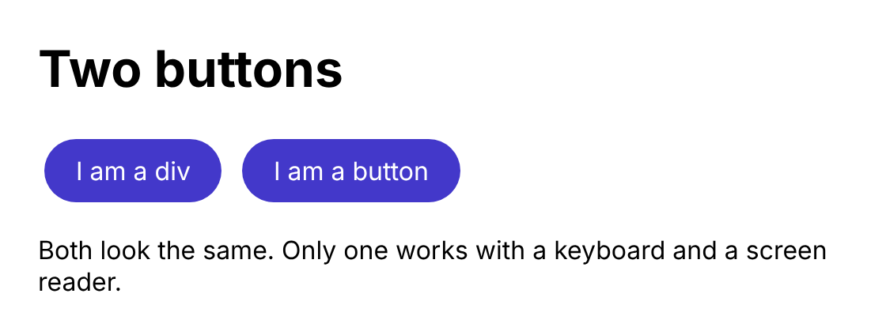
Figure 16.1: They look the same. They are not the same.
The <div> works with a mouse, and nothing else. You cannot reach it with the Tab key, Enter does nothing, and a screen reader announces it as plain text, so a blind user never learns that there is something to press. The <button> gets all of that for free: it can be focused, it responds to Enter and Space, and it is announced as “button”.
When HTML alone is not enough, ARIA attributes add information for assistive technology, such as aria-label to name a button that only shows an icon. But the first rule of ARIA is: do not use ARIA if a native HTML element does the job. A wrong ARIA attribute is worse than none.
16.3The keyboard test
Put your mouse away and try to use your page with the keyboard only. Tab moves forward through links, buttons and fields, Shift + Tab moves back, Enter follows links and presses buttons, and Space presses buttons and ticks boxes. Two things must be true:
You can reach and use everything.
You can always see where you are. The element that has the keyboard focus must be clearly visible.
focus.html
<!doctype html><htmllang="en"><head><metacharset="utf-8"><metaname="viewport"content="width=device-width, initial-scale=1"><title>Welcome</title><style>
body { font-family: system-ui, sans-serif; margin: 0; }
.skip { position: absolute; inset-inline-start: 8px; top: -60px; padding: 8px 14px;
background: #1e1b2e; color: white; border-radius: 8px; }
.skip:focus { top: 8px; }
nav { display: flex; gap: 8px; padding: 56px 16px 16px; background: #eef2ff; }
nav a { padding: 6px 14px; border-radius: 8px; color: #1a1a1a; font-weight: 700; }
a:focus-visible { outline: 3px solid #2b2b2b; outline-offset: 3px; }
main { padding: 0 16px; }
@media (prefers-reduced-motion: reduce) {
* { animation: none !important; transition: none !important; }
}
</style></head><body><aclass="skip"href="#main">Skip to main content</a><header><navaria-label="Main"><ahref="#">Home</a><ahref="#">Projects</a><ahref="#">Contact</a></nav></header><mainid="main"><h1>Welcome</h1><p>Press Tab to move between links. The focused link has a clear outline.</p></main></body></html>
focus.html560px
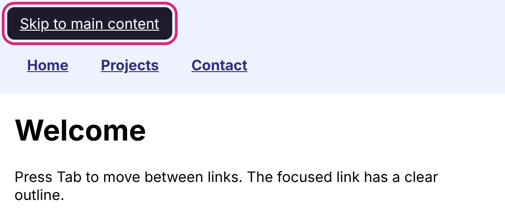
Figure 16.2: After pressing Tab once: the hidden skip link appears.
focus.html560px
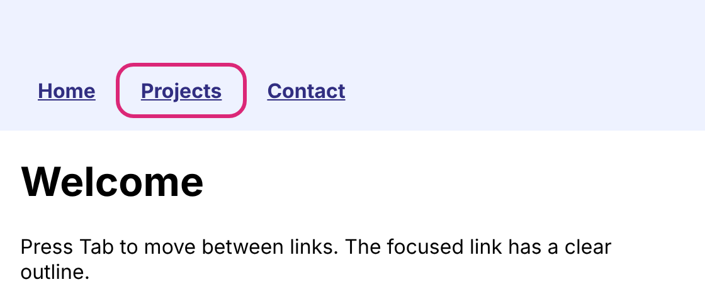
Figure 16.3: Two more presses: the focused link has a thick, clear outline.
:focus-visible styles the focus when the user is using the keyboard. Never remove the outline with outline: none unless you replace it with something at least as visible.
The skip link is the first thing on the page. It stays hidden until it is focused, and lets keyboard and screen reader users jump past the menu straight to the content, instead of tabbing through every link on every page.
prefers-reduced-motion is a media query that is true when the user has asked their system for less motion. Use it to turn off animations.
16.4Text for images
You met alt in Chapter 5. Here is how to write it well:
Image
Good alt
A photo in a news story
What it shows and why it matters: “Fans celebrating in Tahrir Square after the final”
A logo that links to the home page
Where it goes: “Bit’s Shop, home page”
An icon on a button with no text
What the button does: “Search”
A purely decorative pattern
Empty: alt=""
Do not start with “image of”; screen readers already say it is an image. Describe the purpose, not every pixel.
16.5Accessible forms
form.html
...
<body><h1>Create an account</h1><form novalidate><labelfor="email">Email</label><inputid="email"type="email"autocomplete="email"aria-describedby="email-hint email-error"aria-invalid="true"value="sara@"><pclass="hint"id="email-hint">We never share your email.</p><pclass="error"id="email-error"role="alert">Please enter a valid email address.</p><labelfor="password">Password</label><inputid="password"type="password"autocomplete="new-password"><buttontype="submit">Create account</button></form></body>
...
form.html560px
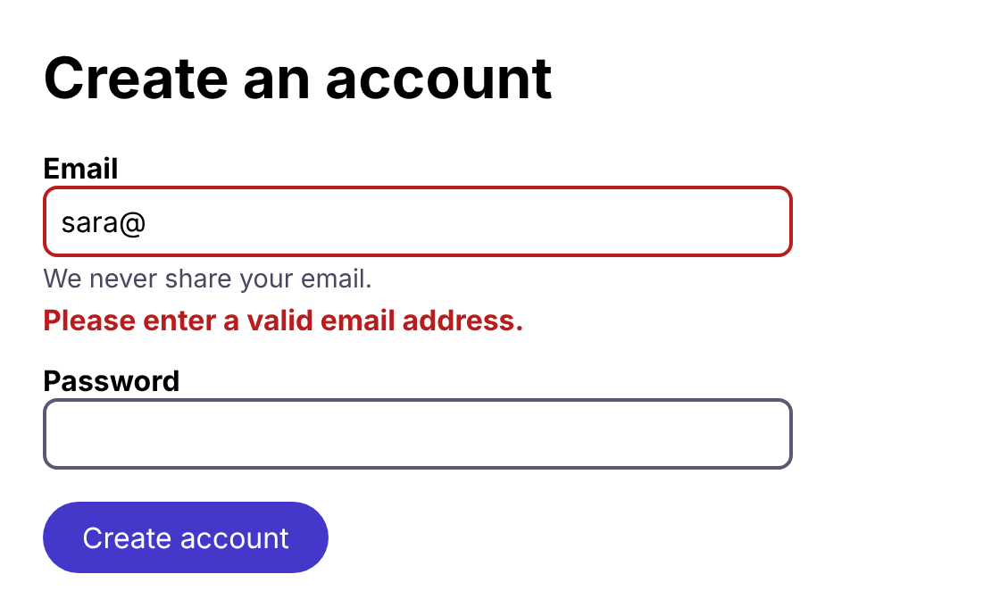
Figure 16.4: A field with a hint and an error message that everyone can perceive.
Every field has a visible <label>. A placeholder is not a label: it disappears when you type.
aria-describedby connects the hint and the error to the field, so screen readers read them when the field gets focus.
aria-invalid="true" tells assistive technology the value is wrong, and role="alert" makes screen readers announce the error at once.
The error is shown in text, not only by turning the border red. People who cannot see red would never notice.
autocomplete lets browsers fill in known values, a big help for people who find typing hard.
16.6Colour and contrast
WCAG asks for a contrast ratio of at least 4.5 to 1 between normal text and its background, and 3 to 1 for large text. The ratio goes from 1 (the same colour) to 21 (black on white). You saw DevTools show it in Chapter 6. Now, as a final JavaScript exercise, let us compute it ourselves with the official formula:
contrast.js
// Contrast ratio between two colours, using the WCAG formulafunction luminance(hex) {
const channels = [1, 3, 5].map((i) => parseInt(hex.slice(i, i + 2), 16) / 255);
const linear = channels.map((c) => (c <= 0.03928 ? c / 12.92 : ((c + 0.055) / 1.055) ** 2.4));
return0.2126 * linear[0] + 0.7152 * linear[1] + 0.0722 * linear[2];
}
function contrast(foreground, background) {
const [a, b] = [luminance(foreground), luminance(background)].sort((x, y) => y - x);
return (a + 0.05) / (b + 0.05);
}
const pairs = [
["#1e1b2e", "#ffffff"],
["#2b2b2b", "#ffffff"],
["#9ca3af", "#ffffff"],
["#ffffff", "#e0e0e0"],
];
for (const [fg, bg] of pairs) {
const ratio = contrast(fg, bg);
const verdict = ratio >= 4.5 ? "pass" : "fail";
console.log(`${fg} / ${bg}: ${ratio.toFixed(2)} → ${verdict}`);
}
Our dark ink and our brand indigo pass easily on white. The light grey, often used for “elegant” small print, fails, and white text on bright yellow is almost unreadable. You do not need to remember the formula; the point is that contrast is a number you can check, not a matter of taste.
16.7Checking your pages
Automatic tools find many problems quickly:
In Chrome or Edge, open DevTools, choose the Lighthouse panel, tick Accessibility and click Analyze. You get a score and a list of problems with explanations.
The Elements panel has an Accessibility pane that shows how a screen reader understands any element: its role and its name.
But automatic tools find only part of the problems. Always add two manual tests: use the page with the keyboard only, and turn on your system’s screen reader for a few minutes (VoiceOver on Mac and iPhone, Narrator on Windows, TalkBack on Android). Hearing your own page read aloud is an unforgettable lesson.
Summary
Accessibility makes pages work for people with all kinds of abilities, and better for everyone.
Use the right HTML element: <button> for actions, <a> for links, headings and landmarks for structure. ARIA only when HTML is not enough.
Everything must work with the keyboard, with a clearly visible focus. Add a skip link.
Write alt for purpose; use alt="" for decoration.
Forms need visible labels, connected hints and errors in text.
Normal text needs a contrast ratio of at least 4.5:1. Never use colour alone.
Test with Lighthouse, the keyboard, and a real screen reader.
Quick check answers: 1. It can be reached with Tab, works with Enter and Space, and screen readers announce it as a button; a <div> does none of this. 2. At least 4.5 to 1 (3 to 1 for large text). 3. It lets keyboard and screen reader users jump past the navigation straight to the main content.
Practice projects
For each project, do the keyboard test from section 16.3 before you call it finished: put the mouse away and use only Tab, Shift+Tab, Enter and Space. If you can do everything, and always see where you are, you are on the right track.
Project 16.1 · Easy
Rescue a recipe card
This card looks fine, but a screen reader user, a keyboard user and someone in bright sunlight would all struggle with it. Find five problems and fix them.
You will practise: real buttons, headings and landmarks, alt text, labels, contrast, and the visible focus outline.
The title is a div. Make it an h1, so it appears in the screen reader’s list of headings.
The image has no alt. Describe what a sighted reader sees, in one short sentence.
The search box has only a placeholder, which disappears as soon as you type. Give it a real <label>, and put it in a <form role="search">.
“Search” and “Save recipe” are divs: Tab skips them. Turn them into <button> elements.
The grey time text (#c4c4c4 on white) has a contrast of about 1.7. Darken it to #4b5563 and check the ratio with the script from section 16.6.
Wrap the page in header, main and article, then do the keyboard test.
Hint: most accessibility fixes are not extra work. They are simply the right HTML element for the job, which you would have used anyway with a little more care.
recipe.html560px
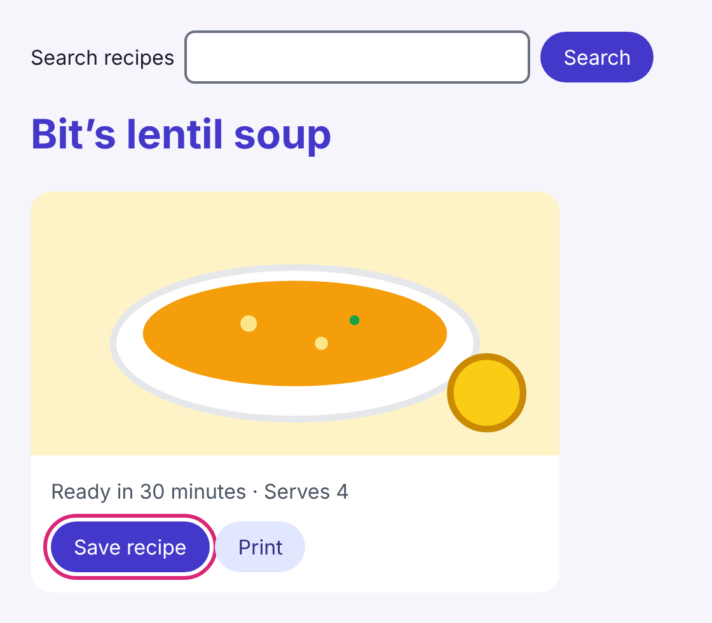
Project 16.1: the fixed card, with the keyboard focus on “Save recipe”.
Project 16.2 · Medium
A form that explains its errors
When the visitor makes a mistake, tell them what went wrong, where, and how to fix it, in a way that both eyes and screen readers notice.
You will practise:label, autocomplete, aria-describedby, aria-invalid, role="alert", and moving the focus with JavaScript.
Build the form with a label for every field, and add novalidate so your script, not the browser, shows the messages.
Under each input, add an empty <p class="error">, and link it to the input with aria-describedby. The screen reader will read it with the field.
Keep the rules as data: an array of { id, message, ok }, where ok is a small function that tests the value.
On submit, check every rule. Write the message, and set aria-invalid="true" on each field that fails.
Fill a summary box at the top with a link to each problem, show it, and call summary.focus(). Because it has role="alert", it is announced at once.
When everything is correct, hide the summary and show a success message in a role="status" element.
Hint: never use colour alone for errors. Here the message has words, the border changes, and the summary repeats it, so people who cannot see red still know what to do.
join.html560px
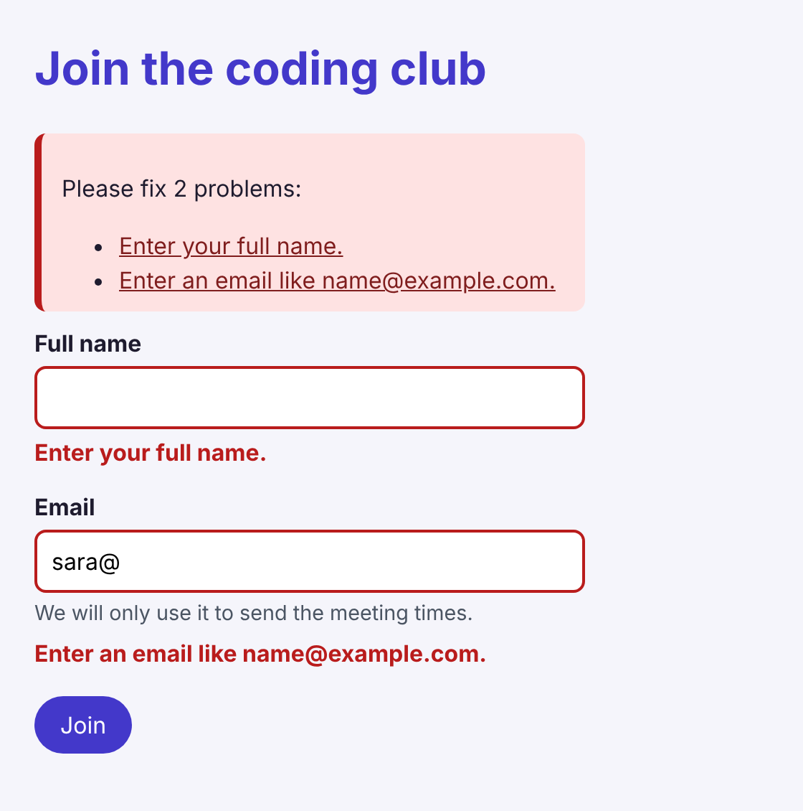
Project 16.2: after submitting with an empty name and a broken email.
Project 16.3 · Challenge
An accessible FAQ
Build questions that open and close their answers, and that tell assistive technology whether each one is open.
You will practise: buttons inside headings, aria-expanded, aria-controls, the hidden attribute, and querySelectorAll.
For each question write an h2 containing a <button type="button" aria-expanded="false" aria-controls="answer-1">.
Below it, put the answer in <div id="answer-1" hidden>. hidden hides it from everyone, screen readers included.
Find all the buttons with querySelectorAll and give each a click listener.
On click, read aria-expanded, flip it, and set the answer’s hidden to match.
Draw the + and − with CSS from the attribute itself: button[aria-expanded="true"]::after. Now the look can never disagree with what the screen reader says.
Test it with only the keyboard: Tab to a question, press Enter or Space, and Tab into the open answer.
Hint: because you used real buttons, Enter and Space work with no extra code. A div with a click listener would need a dozen lines to copy what <button> gives you free.
faq.html560px
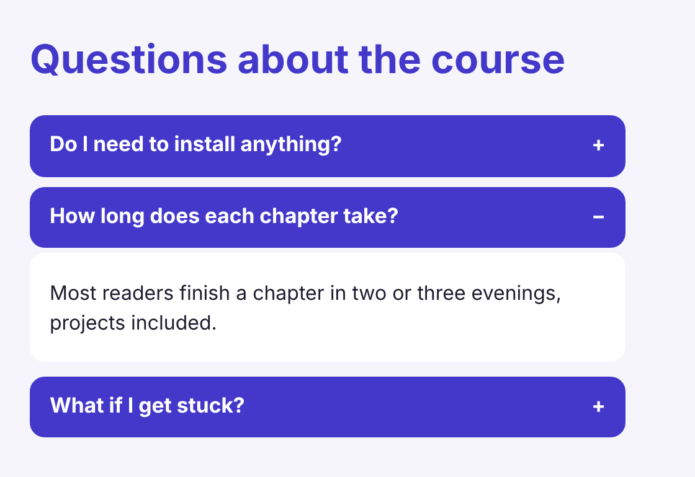
Project 16.3: the FAQ with the second answer open.
Exercises
Easy Use your profile page with the keyboard only. Can you reach every link? Can you always see where the focus is? Fix what you find.
Easy Add a skip link to your profile page.
Medium Run Lighthouse’s accessibility check on your profile page and on the shop from Chapter 13. Fix every problem it reports.
Medium Use contrast.js to check every text colour in your profile page’s stylesheet. Change any colour that fails.
Challenge Turn on your computer’s or phone’s screen reader and try to buy a sticker in Bit’s shop without looking at the screen. Write down every moment you got lost, and fix the page.
Answers to the exercises are at the end of the book and in the book’s code repository.
Coming up in Chapter 17
You now have every skill this book teaches. In the next chapter you will put them all together in one complete project, from the first idea to a real address on the internet that you can send to your friends.
17
Chapter 17
Project: Build and Publish a Web App
In this chapter you will
plan an app before writing code: features, a sketch and the shape of the data
build a complete daily tasks app with HTML, CSS and JavaScript
save data in the browser with localStorage, so it survives a reload
test it like a professional: keyboard, phone width and unusual cases
publish it on the internet for free with GitHub Pages
This is the chapter where everything comes together. You will build a real app that you can use every day: a list of daily tasks that you can add, tick off, filter and delete, and that remembers everything when you close the browser. Then you will give it an address on the internet that you can open on your phone and send to your friends. Every skill from the previous sixteen chapters has a part to play.
Bit
This is my favourite chapter! At the end of it, you won’t just have learned to code. You’ll have shipped something: a real app, live on the web, built by you from nothing. Let’s go!
17.1Plan first
Chapter 2 taught you to think before you type. Professionals start every project the same way: they write down what the app must do, sketch how it will look, and decide what data it needs.
What the app does
Add a task by typing it and pressing Enter or the Add button.
Tick a task to mark it as done, and untick it again.
Delete a task.
Show all tasks, only the tasks still to do, or only the finished ones.
Show how many tasks are left, and clear all finished tasks at once.
Remember everything after the browser is closed.
Work with a keyboard, on a phone, and in English or Arabic.
A sketch
Figure 17.1: A sketch on paper (or in a few boxes) saves hours of changing code later.
The data
Each task needs a unique id, its text, and whether it is done. The whole app’s data is an array of these objects, plus the current filter:
Everything else on the screen, the list, the counter and the highlighted filter, can be calculated from this data. That decision will make the code simple.
17.2The HTML
Create a folder called my-tasks with three files. The HTML holds the structure, and is almost empty where the tasks will go:
index.html
<!doctype html><htmllang="en"><head><metacharset="utf-8"><metaname="viewport"content="width=device-width, initial-scale=1"><title>My Tasks</title><linkrel="stylesheet"href="style.css"></head><body><mainclass="app"><h1>My Tasks</h1><pclass="subtitle">Small steps, every day.</p><formid="new-task"><labelfor="task-text"class="visually-hidden">New task</label><inputid="task-text"type="text"placeholder="e.g. Read chapter 17" required><buttonclass="primary"type="submit">Add</button></form><divclass="filters"role="group"aria-label="Show"><buttontype="button"data-filter="all"aria-pressed="true">All</button><buttontype="button"data-filter="active"aria-pressed="false">To do</button><buttontype="button"data-filter="done"aria-pressed="false">Done</button></div><ulid="tasks"></ul><pclass="empty"id="empty">Nothing here yet. Add your first task above!</p><footer><spanid="count"aria-live="polite"></span><buttontype="button"id="clear">Clear done</button></footer></main><scriptsrc="app.js"></script></body></html>
Notice the accessibility details from Chapter 16: a real <form> so Enter works, a label for the input (visually hidden, because the placeholder and button make the purpose clear to sighted users), real <button> elements, aria-pressed to tell screen readers which filter is on, and aria-live so the count is announced when it changes.
17.3The CSS
The stylesheet uses custom properties, Flexbox, rounded corners and visible focus, all from Chapters 6 and 7. It uses no physical directions, so the same file styles the Arabic version. It is in the book’s code repository as style.css; here are the most interesting parts:
form {
display: flex;
gap: 8px;
}
form input {
flex: 1; /* the input takes all the free space */
}
.filters button[aria-pressed="true"] {
color: white; /* the active filter is styled from */
background: var(--brand); /* the same attribute screen readers use */
}
li.done label {
color: var(--muted);
text-decoration: line-through;
}
Styling the active filter with [aria-pressed="true"] is a neat professional trick: the look and the accessibility information can never disagree, because they are the same attribute.
17.4The JavaScript
The program follows the pattern from Chapter 12: data, changes, display, and events. Read it section by section:
Variables disappear when the page is closed. localStorage is a small storage space that each website gets in the browser, and it survives reloads and restarts. It stores only strings, so we use JSON from Chapter 11:
save() turns the tasks into JSON and stores them under the key "my-tasks".
load() reads them back when the page opens, or starts with an empty array the very first time.
Every change goes through update(), which saves and then redraws. Because there is only one path, the screen and the storage can never get out of step.
Other details worth noticing
Date.now() returns the number of milliseconds since 1970, a simple way to get a unique id.
tasks.filter(…) creates new arrays for deleting and clearing, which is simpler and safer than removing items from the middle of an array.
replaceChildren(...visibleTasks().map(taskItem)) redraws the whole list in one line: the spread syntax from Chapter 11 passes every new <li> at once.
Every task has a real checkbox with a <label>, so clicking the text ticks the box, and the delete button has an aria-label that says which task it deletes.
index.html560px
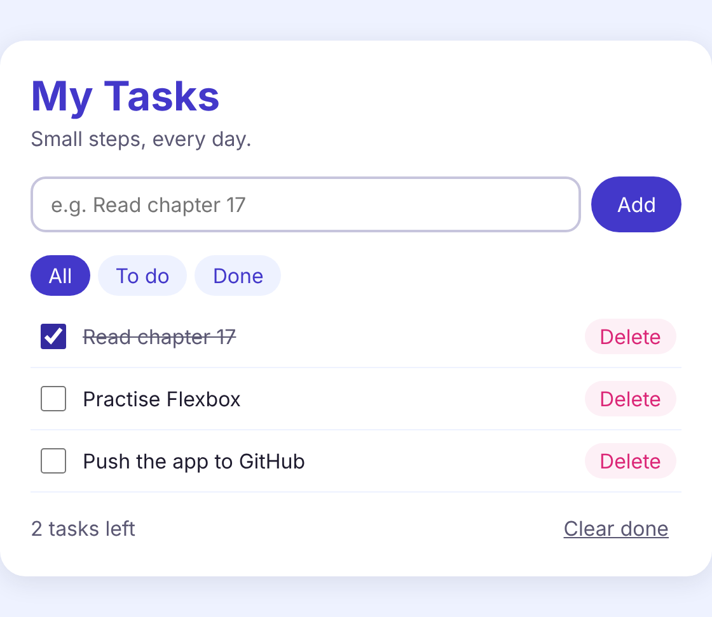
Figure 17.2: The finished app with three tasks, one of them done.
17.5Test like a professional
Before you publish, go through a checklist. Professionals do this before every release:
Test
What to check
Empty state
With no tasks, the friendly message shows and the counter says “All done!”
Unusual input
Spaces only are ignored; a very long task wraps instead of breaking the layout
Persistence
Add tasks, reload the page: everything is still there
Keyboard
Add, tick, filter and delete with Tab, Enter and Space only; the focus is always visible
Phone
At 360 pixels wide in the DevTools device toolbar, nothing overflows
Accessibility
Lighthouse reports no accessibility problems
Errors
The Console shows no red messages
17.6Publish it with GitHub Pages
GitHub Pages is a free service that turns a GitHub repository into a website. Because your app is just HTML, CSS and JavaScript, with no server code, it can be hosted there in a few minutes:
Put the my-tasks folder under Git and commit, as in Chapter 15.
Create a public repository called my-tasks on GitHub and push to it.
On the repository page, open Settings, then Pages.
Under Build and deployment, choose Deploy from a branch, select the branch main and the folder / (root), and click Save.
Wait a minute and reload. GitHub shows your address: https://your-username.github.io/my-tasks/.
Open that address on your phone. That is your app, on the internet, served over HTTPS, built by you. From now on, every time you push a new commit to main, GitHub updates the site automatically.
Bit
Send the link to a friend and ask them to add a task. Watching someone else use something you made is one of the best feelings in programming. You did it!
17.7Ideas to keep going
The best way to keep learning is to keep building. Here are improvements, roughly from easy to hard:
Edit a task by double-clicking its text.
Add a due date to each task, and sort by it.
Add a dark theme that follows the system setting with prefers-color-scheme.
Drag tasks to reorder them.
Add a language switch that changes all the app’s texts between English and Arabic, and sets lang and dir.
Summary
Plan before coding: list the features, draw a sketch, and design the data.
Calculate everything on the screen from the data, and send every change through one function that saves and redraws.
localStorage keeps strings in the browser across reloads; store objects as JSON.
Build accessibility in from the start: real forms, buttons, labels and visible focus.
Test the empty state, unusual input, persistence, keyboard, phone width and the Console before publishing.
GitHub Pages publishes a static site from a repository for free.
Practice projects: upgrade your app
The app is finished, and this is where real development begins: improving something that already works without breaking it. Copy the whole app folder for each project, make a branch in Git, and commit as you go. Each project touches all three files, just like a real feature.
Project 17.1 · Easy
A progress bar
Show how much of the list is done, as a bar and in words, and keep it in step with every change.
You will practise: the <progress> element, adding to render(), and accent-color.
In the HTML, above the list, add <progress id="progress" max="1" value="0"> and a <span id="progress-text">. Link them with aria-labelledby so the bar has a name.
In the CSS, let the bar fill the row with flex: 1, and colour it with accent-color: var(--brand).
In render(), work out done = tasks.length - count, then set the bar’s max and value.
Use tasks.length || 1 for max, so an empty list does not divide by zero.
Write “1 of 3 done” into the span. Tick, untick, add and delete tasks, and check that the bar is always right.
Hint: you did not touch addTask, toggleTask or deleteTask. Because every change ends in render(), one new block there is enough. That is the reward for the structure you built in this chapter.
index.html560px
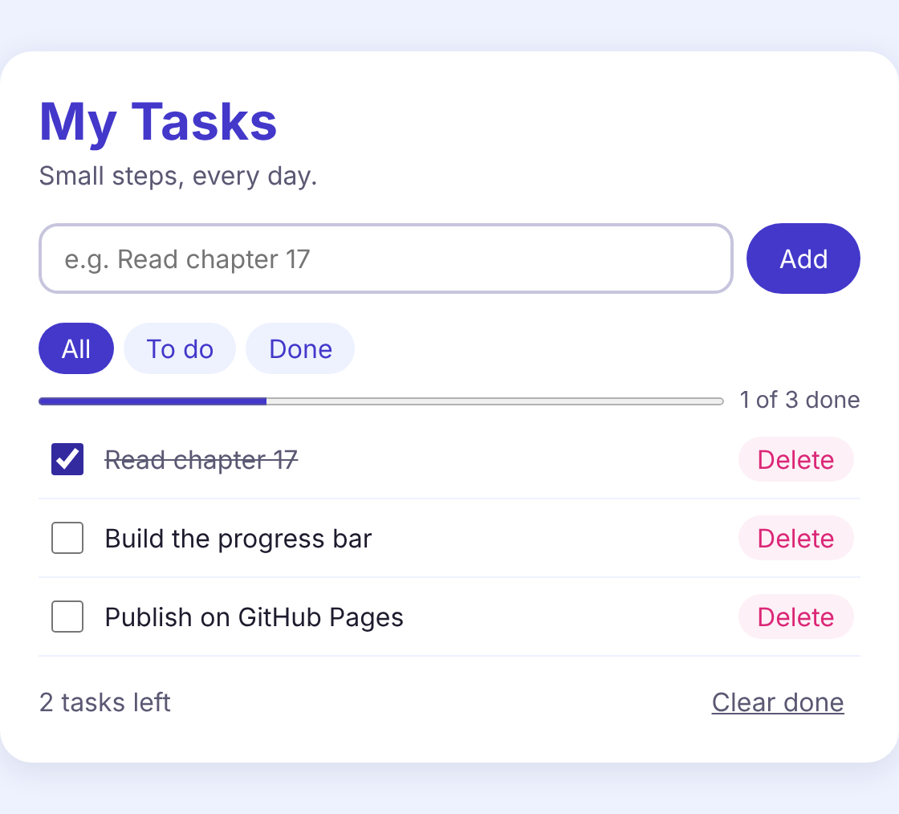
Project 17.1: one of three tasks done.
Project 17.2 · Medium
Edit a task
Typos happen. Let the user fix a task’s text in place: Enter saves, Escape cancels.
You will practise: a new change function, replaceWith, keyboard events, focus() and select().
Add renameTask(id, text) next to the other change functions: find the task, change its text, and call update().
In taskItem, add an “Edit” button with an aria-label that names the task, like the delete button.
Write startEditing(li, task): create an input holding the current text, and swap it in with label.replaceWith(input). Then call focus() and select().
Listen for keydown on the input. On "Enter", save the trimmed text if it is not empty. On "Escape", just call render().
When the input loses focus (blur), call render() too, so a half-edited task never stays on screen.
Hint: section 17.7 suggested double-clicking. A button is better: double-click cannot be done with a keyboard or easily on a phone, and you learned in chapter 16 why that matters.
index.html560px
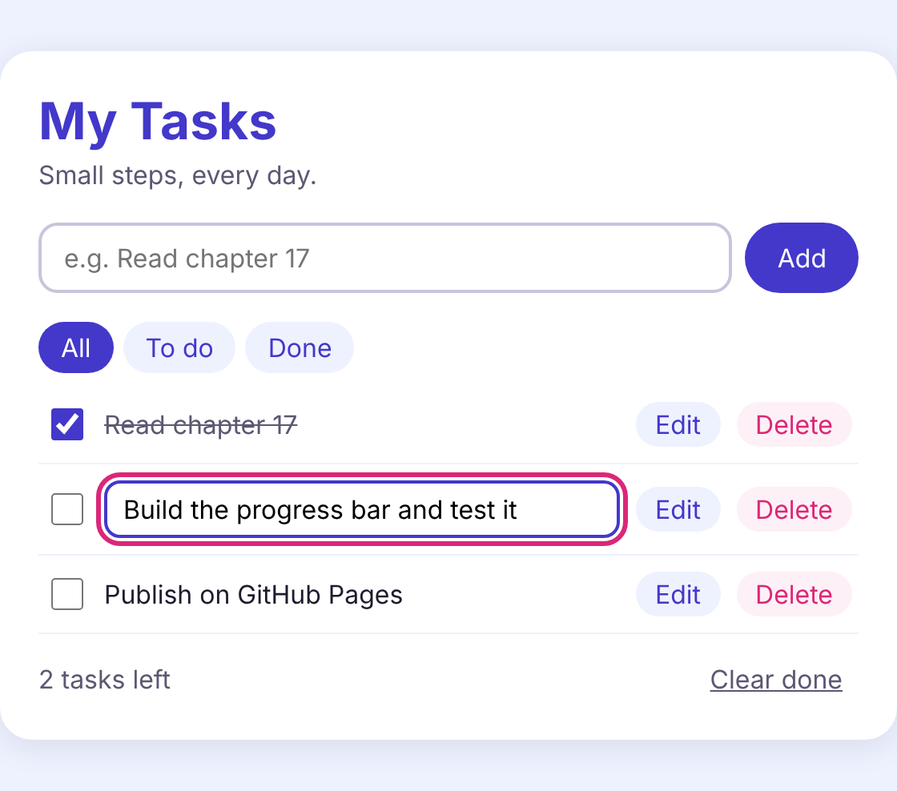
Project 17.2: editing the second task.
Project 17.3 · Challenge
English and Arabic in one app
Add a button that switches every text in the app between English and Arabic, flips the layout from left-to-right to right-to-left, and remembers the choice.
You will practise: keeping texts as data, data-* attributes, functions stored in objects, lang and dir, and a second localStorage key.
Create a TEXTS object with an en and an ar part, holding every word the app shows. left is a function, because the Arabic plural changes with the number.
Write a tiny helper, t(key), that returns the text for the current language.
In the HTML, mark each text with its key: <h1 data-text="title">. Add a language button in the header.
Write applyLanguage(): set document.documentElement.lang and dir, fill every [data-text] element, set the placeholder and the labels, then render().
Replace every fixed word in app.js with t(…), then delete the old leftText.
The button switches language, saves it under its own key, and calls applyLanguage(). Reload the page: it should open in the last language you chose.
Hint: because the CSS uses flex and gap, and no fixed “left” or “right”, the whole layout mirrors itself when dir changes. Real apps keep their texts this way, which is how they are translated into many languages without touching the code.
index.html560px
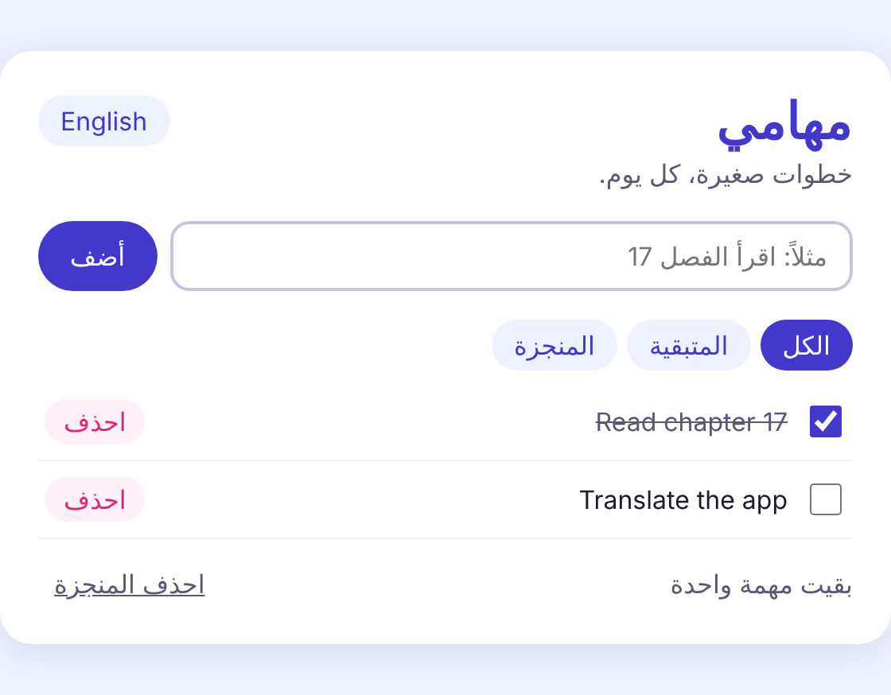
Project 17.3: one click, and the whole app speaks Arabic, right to left. The tasks themselves keep the words the user typed.
Exercises
Easy Change the colours and the title of the app to make it your own, and publish the new version with a single git push.
Easy Add a counter of finished tasks next to the counter of tasks left.
Medium Let the user edit a task’s text by double-clicking it. Save the change with Enter and cancel with Escape.
Medium Add a “priority” to each task (low, normal, high), chosen with a <select> when adding, and show high-priority tasks first.
Challenge Add a language switch to the app. Keep all texts in an object like { en: {…}, ar: {…} }, remember the choice in localStorage, and update lang and dir on the <html> element.
Answers to the exercises are at the end of the book and in the book’s code repository.
Coming up in Chapter 18
You have built and published a real app. The last chapter of this book looks ahead: the paths you can take from here, frontend, backend, full stack or mobile, and how to keep growing until you reach the senior level.
18
Chapter 18
Choosing Your Path
In this chapter you will
look back at everything you have learned
discover the four main paths in software development
find out what “junior”, “mid-level” and “senior” really mean
learn the habits that turn beginners into professionals
plan your next steps, your portfolio and your first job
Think back to Chapter 1, when a program was a mystery and the terminal was a strange black window. Since then you have written HTML, CSS and JavaScript, built a shop, read error messages calmly, used Git like a professional, made pages for everyone, and published a real app on the internet. That is not a small thing. Many people who start learning to code never get this far. You did.
Bit
I’m so proud of you! When we met, you didn’t know what a variable was. Now you can build and publish web apps. Before we say goodbye, let’s look at where you can go from here.
18.1How far you have come
Part
You learned to
1. Thinking like a programmer
understand how computers run code, plan algorithms, and use professional tools
2. Building for the web
explain how the web works, structure pages with HTML, style them with CSS, and build responsive layouts
3. JavaScript
use values, decisions, loops, functions and objects; change pages with the DOM; load data with fetch; and debug calmly
4. Working like a professional
use Git and GitHub, build accessible pages, and plan, test and publish a complete app
These are the foundations of every path in software development. Whatever you choose next, you will use all of them, every day.
18.2Four paths
Figure 18.1: The paths in this series. You can start any of them now.
Frontend developer
Builds what people see and touch: the pages, buttons, forms and animations of websites and web apps. Frontend developers care about design, speed, accessibility and every detail of the user’s experience. They work daily with HTML, CSS, JavaScript and TypeScript, and with a framework such as React or Vue. Next: Book 2, Senior Frontend Engineering, in the React or the Vue edition.
Backend developer
Builds what happens behind the scenes: the servers, databases and APIs that store data, check passwords, take payments and send emails. Backend developers care about correctness, security and performance under heavy load. They work with a server language such as JavaScript with Node.js or PHP with Laravel, and with SQL databases. Next: Book 3, Senior Backend Engineering, in the Node.js or the Laravel edition.
Full stack developer
Works on both sides and connects them: from the database to the button, and from the idea to the running product. Full stack developers are especially valuable in small teams and start-ups. Next: Books 2 and 3, then Book 4, Senior Full Stack Engineering.
Mobile developer
Builds apps for phones and tablets. With Flutter, one codebase in the Dart language runs on both Android and iPhone. Mobile developers care about smooth animations, battery life, working offline, and publishing in the app stores. Next: Book 5, Flutter from Zero, then Book 6, Senior Flutter Engineering.
18.3How to choose
There is no wrong choice; skills transfer between all the paths, and many developers change paths during their careers. These questions can help:
If you enjoyed most…
You may love…
Chapters 5 to 7 and 12: making pages look good and feel alive
Frontend
Chapters 4, 11 and 13: servers, data and how things connect
Backend
Chapter 17: building the whole thing from idea to launch
Full stack
Using apps on your phone more than websites
Mobile
Look also at the jobs advertised where you live or want to work: which technologies do they ask for? And if you still cannot decide, choose frontend: it builds directly on everything in this book, and you see results immediately.
18.4What “senior” really means
This series is called “From Zero to Senior”. A senior developer is not simply someone who has written code for many years, or who knows more tricks. The difference is in the size of the problems they can be trusted with:
Junior
Mid-level
Senior
Typical work
A clearly defined task
A whole feature
A whole system, or a hard, unclear problem
Needs
Guidance and code review
Occasional advice
Gives guidance and reviews others
Thinks about
Making it work
Making it clean and tested
Trade-offs: cost, risk, the team, the future
Impact
Their own code
Their feature
The whole team’s work
Seniority comes from experience with real projects, real mistakes and real users, plus the deliberate habits described next. The senior books in this series teach the technical side; the habits are up to you.
18.5Habits that make professionals
Build, every week. Reading teaches you what exists; building teaches you how to use it. Small projects finished beat big projects abandoned.
Read other people’s code. Open-source projects on GitHub are a free library of how professionals write.
Get your code reviewed, and review others’. Join a study group or an online community.
Explain what you learn. Write short posts or teach a friend. Teaching is the fastest way to discover what you have not really understood.
Practise reading documentation. MDN today; the official docs of every tool tomorrow.
Keep the fundamentals sharp. Frameworks change every few years; HTTP, HTML, CSS, JavaScript and clear thinking stay.
18.6Your portfolio and your first job
Employers want to see what you can do. Start building a portfolio now:
Put your best projects on GitHub, each with a short README that explains what it does, with a screenshot and a live link.
Publish your profile page from Chapters 5 to 7 as your personal site, with links to your projects.
Aim for three solid projects that show different skills, rather than ten unfinished ones. The tasks app from Chapter 17, improved with the exercises, is a great first one.
Make every project accessible and responsive. Few beginners do this, so it makes you stand out.
Summary
You now have the foundations of every path: how computers and the web work, HTML, CSS, JavaScript, debugging, Git, accessibility and publishing.
The four main paths are frontend, backend, full stack and mobile; this series has books for each.
Choose by what you enjoyed most and by the jobs around you; skills transfer between paths.
Senior means being trusted with bigger and less clear problems, and making the whole team better.
Build every week, read and review code, explain what you learn, and keep the fundamentals sharp.
Start your portfolio now: a few finished, accessible, published projects.
Graduation projects
These last three projects turn everything you built in this book into something you can show the world. They are not about new code; they are about presenting your work the way professionals do. When you finish them, you will have a portfolio, not just a folder of exercises.
Project 18.1 · Easy
A README that sells your project
Write the page a visitor sees first on GitHub, so that in thirty seconds they know what your app does, can try it, and can see what you learned.
You will practise: Markdown headings, lists, links and images, and writing for a busy reader.
In your tasks app folder, create README.md. GitHub shows it automatically under your files.
Start with the name and one sentence that says what it is and who it is for.
Add the live link from GitHub Pages and a screenshot, saved in the same folder.
List the features in short lines. Mention accessibility and both languages: they make you stand out.
End with “What I learned”, in two or three honest sentences. Recruiters read this part.
Commit, push, and look at your repository page on GitHub.
Hint: write it for someone who will never run your code. Most visitors only read the first screen, so put the link and the screenshot near the top.
README.md
# My Tasks
A small, fast to-do list that works in any browser and remembers your tasks.
**Live:** https://sara-khan.github.io/my-tasks/

## Features
- Add, tick off, edit and delete tasks
- Filter: all, to do, done
- Progress bar, and a count of what is left
- English and Arabic, with right-to-left layout
- Saved in the browser with localStorage
- Works with the keyboard and screen readers
## Built with
HTML, CSS and JavaScript. No frameworks, no build step.
## Run it locally
1. Download or clone this repository.
2. Open `index.html` in your browser.
## What I learned
How to plan a project before coding, keep the data separate from the
display, and test a page with only the keyboard.
Project 18.2 · Medium
Your portfolio home page
Build one page that introduces you and links to your best three projects, and publish it as your personal site.
You will practise: everything from chapters 5 to 7 and 16: semantic HTML, Grid with auto-fit, Flexbox, custom properties, and the keyboard test.
Header: your name in an h1, one line about what you do, and two links, one to contact you and one to your CV.
“Selected work”: a grid of three cards with repeat(auto-fit, minmax(200px, 1fr)), so it becomes one column on a phone without a media query.
Each card has a picture, a title, one sentence, and two links: the live app and its code on GitHub.
“Skills”: a list of short tags. List only what you can show in a project.
Run the checks from chapter 16: headings in order, every link has clear text, contrast passes, the keyboard reaches everything.
Publish it in a repository named your-username.github.io, and it appears at that address.
Hint: three finished, polished projects beat ten half-done ones. The quiz from chapter 12 and the weather report from chapter 13 are good candidates to polish and add next to your tasks app.
portfolio.html760px
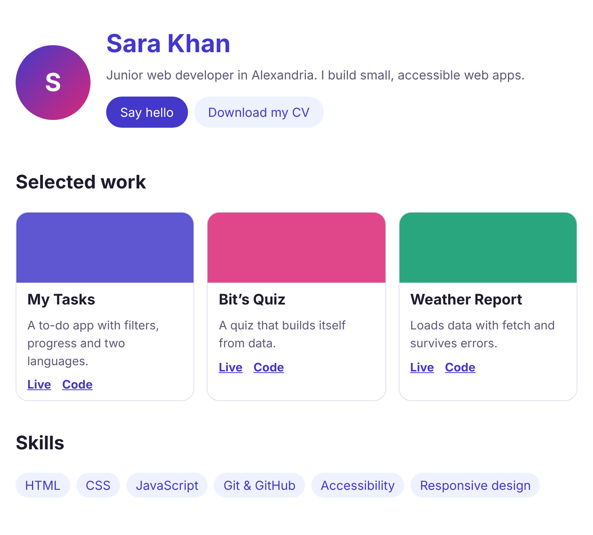
Project 18.2: a portfolio page on a wide screen…
portfolio.html380px
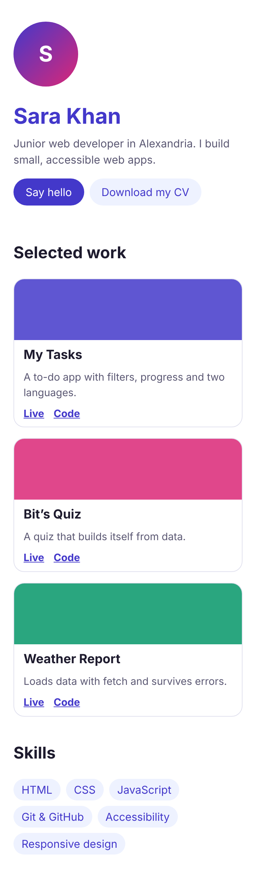
…and on a phone.
Project 18.3 · Challenge
Your own app, from idea to launch
Choose a small problem from your own life, plan an app that solves it, and publish version 1 in about a week, alone.
You will practise: the whole method from chapter 17, deciding what to leave out, and finishing.
Write one sentence for the problem and one for who has it. If you cannot, choose another idea.
Split the features into “must have” and “nice to have”. Version 1 gets only the first list, three or four items at most.
Sketch the screens on paper, and write the data as one JavaScript object.
Break the work into daily milestones, each one ending with something that works and a commit.
Build it in the order from chapter 17: HTML, then CSS, then JavaScript, then the tests.
Publish it, write its README, add it to your portfolio, and send the link to one person who will use it. Their first question is your next feature.
Hint: the hardest part of a real project is not the code; it is saying “not now” to good ideas so that you finish. Every professional product you use started as a small version 1.
plan.md
# Plan: Water Buddy## The problem
I forget to drink water when I study.
## Who it is for
Students who sit at a desk for hours.
## Must have (version 1)
- Set a daily goal in glasses
- One big button: "I drank a glass"
- Progress bar for today, reset every new day
- Saved in localStorage
## Nice to have (later)
- A reminder every hour
- A weekly chart
- Arabic and English
## Screens
1. Today: goal, progress, the big button
2. Settings: change the goal
## Data
{ goal: 8, today: "2026-05-01", glasses: 3 }
## Milestones
- Day 1: HTML and CSS, mobile first
- Day 2: the button and the progress bar
- Day 3: save, load, reset on a new day
- Day 4: keyboard test, contrast, README
- Day 5: publish on GitHub Pages, share the link
Final exercises
Easy Write down which path you will take next, and why, in three sentences.
Easy Write a README for your tasks app with a screenshot, a live link and a list of features.
Medium Find three job adverts for junior developers in the city or country where you want to work. List the skills they ask for, and mark the ones you already have.
Medium Find a small open-source project on GitHub that uses HTML, CSS and JavaScript. Read its code and write down three things you learned.
Challenge Plan, build and publish a new app of your own idea, using the method from Chapter 17. Then send the link to someone who has never seen your work.
Goodbye from Bit
This is where our journey together ends, and yours really begins. Remember: every expert was once a beginner who did not give up. Keep building, keep asking questions, and enjoy it. I’ll be waiting for you in the next book!
Appendix
Answers to the Exercises
Try every exercise yourself before you look here. When your answer differs from this one, that is not necessarily wrong: most programming problems have several good solutions. If yours works for normal and unusual cases, and you can explain it, it is a good answer. The full code for every answer is in the book’s code repository.
Chapter 1
Processor, memory, storage, and input and output. Input: keyboard, mouse, touch screen, microphone. Output: screen, speakers, printer.
9 is 1001 in binary (8 + 1).
It depends on the letter: for example "S".charCodeAt(0) is 83 and "س".charCodeAt(0) is 1587.
15, then 105 (two strings joined), then the text 10 + 5 (everything between the quotes is printed as it is).
A good answer says exactly how much water, which cup, when to stop boiling, how long to wait, and what to do if something is missing. Words like “some” or “a bit” are the steps a robot would misunderstand.
Chapter 2
The same algorithm with “smaller than” instead of “bigger than”, and a variable called SMALLEST.
Start → Is the light green for pedestrians? → no: wait and ask again; yes: look both ways → Is the road clear? → no: wait; yes: cross → End.
Set COUNT to 0; for each CARD, if CARD is bigger than 5, add 1 to COUNT; show COUNT. The trace gives 1 (7), 1, 2 (12), 2, 3 (9).
10 steps for 1,000 names, because 210 = 1,024.
Keep LARGEST and SECOND. For each card: if it is bigger than LARGEST, SECOND becomes LARGEST and LARGEST becomes the card; otherwise, if it is bigger than SECOND, SECOND becomes the card. For 7, 3, 12, 5, 9 you get 12 and 9. For 12, 12, 4 you get 12 and 12 (or 12 and 4, if you decide that the second-largest must be different; decide and say so).
Chapter 3
cd code-from-zero, mkdir chapter-03, cd chapter-03, pwd.
Three console.log lines with your own text, run with node me.js.
Among others: console.error, console.warn, console.table, console.info, console.count, console.time.
It depends on the website; large news sites often make more than a hundred requests, and the largest files are usually images, videos or JavaScript bundles.
mkdir practice, code practice/test.js, write console.log(365 * 24);, run node practice/test.js. 8760 is the number of hours in a (non-leap) year.
Add <aside class="ads">, use "head head" "side main" "side ads" "foot foot" on wide screens, and "head" "main" "side" "foot" "ads" in the media query.
A grid with named areas for the header, the main story, side stories and the footer, plus media queries at around 768 and 1024 pixels.
Chapter 8
const temperature = 22;
if (temperature < 15) {
console.log("Cold");
} else if (temperature < 30) {
console.log("Warm");
} else {
console.log("Hot");
}
1, "73", false, false.
Check n % 2 === 0 for even, then n > 0, n < 0, or zero in a second if.
Each case becomes if (size === "S"), else if (size === "M") and so on. Most people find switch clearer for exact values and if clearer for ranges.
After the other rules: if (day === "Friday") { price = price + 2; } if (price > 10) { price = 10; }
Chapter 9
for (let i = 1; i <= 10; i++) { console.log(`7 × ${i} = ${7 * i}`); }
Start highest and lowest at the first temperature; in a for…of, update each when a temperature is bigger or smaller.
const long = []; for (const w of words) { if (w.length > 3) long.push(w); } console.log(long.join(" ")); gives code useful.
50.
Print the message inside the age >= 65 case; after the loop, divide total by queue.length, and keep a highest accumulator for the most expensive ticket.
Chapter 10
function isEven(n) { return n % 2 === 0; } gives true, false, true.
function celsiusToFahrenheit(c) { return c * 9 / 5 + 32; }; 37 °C is 98.6 °F.
The largest-card algorithm inside a function. The built-in way is Math.max(...numbers).
prices.filter((p) => p > 10).map((p) => (p * 0.8).toFixed(2))
function applyNightShow(price, hour) { return hour >= 22 ? Math.max(price - 1, 0) : price; }, called on the result of applyMemberDay.
Chapter 11
Any object with five properties, such as title, year, director, rating and an array actors.
Map each cart item to a line of text, add the total line, and join("\n").
Chapter 12
A third button whose handler does if (count > 0) count--; then show().
button.addEventListener("click", () => document.body.classList.toggle("dark")); and CSS for body.dark.
Listen to input, set the text to `${area.value.length} / 280`, and toggle a class when the length is over 280.
In renderCart, add a button to each line whose click handler removes the item from cart and calls renderCart().
Keep the search text in a variable; in renderProducts, loop over catalog.filter((p) => p.name.toLowerCase().includes(text.toLowerCase())), and redraw on every input event.
Chapter 13
for (const n of [3, 2, 1]) { console.log(n); await wait(1000); } console.log("Go!"); inside an async function.
Add else if (request.url === "/api/hello") that sends JSON.stringify({ message: "Hi!" }).
Show a button in the catch block; its click handler calls start().
git remote add origin … and git push -u origin main, as in Section 15.6.
Change the same line on main and on another branch, merge, edit the file to keep the right version, delete the markers, then git add and git commit.
Chapter 16
Typical fixes: replace clickable divs with buttons or links, and add a visible :focus-visible style.
Copy the skip link and its CSS from focus.html, and add id="main" to <main>.
Typical reports: missing alt, low contrast, missing labels, or a missing lang attribute.
Run contrast(textColour, backgroundColour) for each pair; any result below 4.5 needs a darker text or a lighter background.
There is no single answer; common problems are buttons without names, images without alt, and changes that are not announced.
Chapter 17
Change the custom properties and the <h1>, commit, and git push; GitHub Pages updates within a minute.
Count tasks.filter((t) => t.done).length in render and show it in a new element.
On dblclick, replace the label with an <input>; on keydown, save on Enter (update the task’s text and call update()) and cancel on Escape (call render()).
Add a <select> to the form, store priority in each task, and sort the visible tasks with sort((a, b) => rank[b.priority] - rank[a.priority]).
Keep the texts in one object, write a function that fills every element from the chosen language, save the choice in localStorage, and set document.documentElement.lang and .dir.
Chapter 18
The exercises in Chapter 18 are about your own choices and your own projects, so there are no single answers. Share your results with a friend or an online community, and ask for feedback: that is the professional way to check your work.